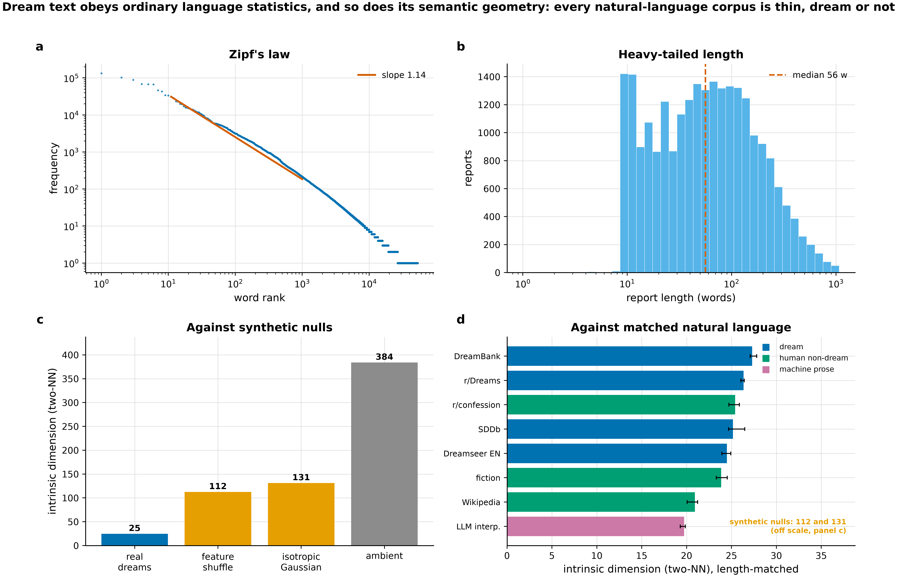
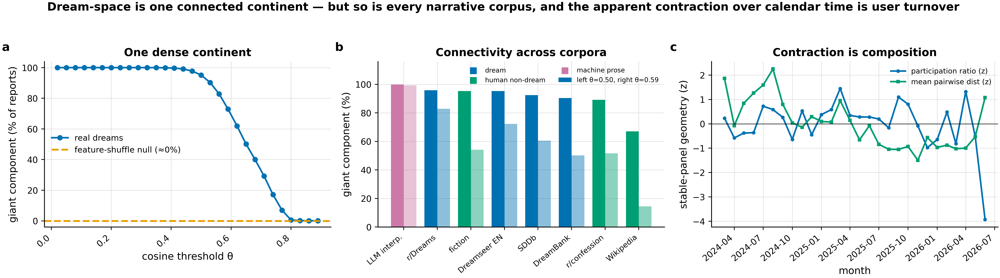
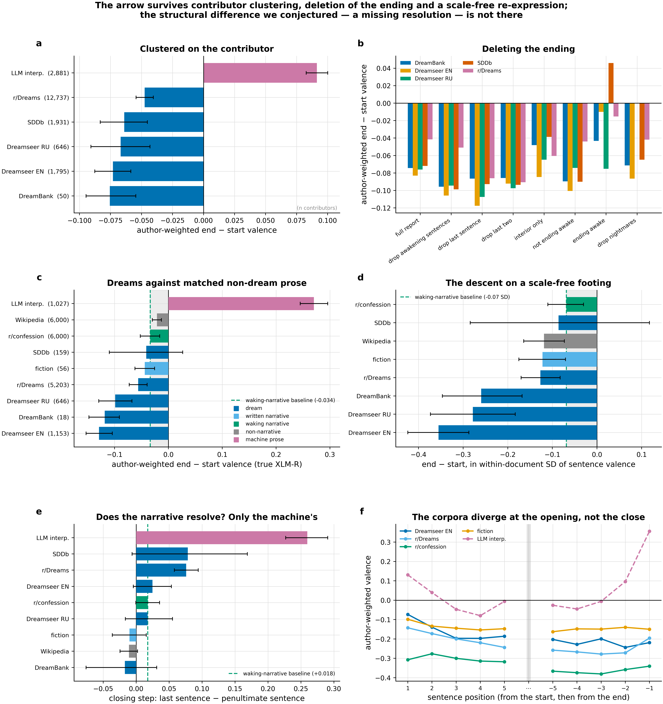
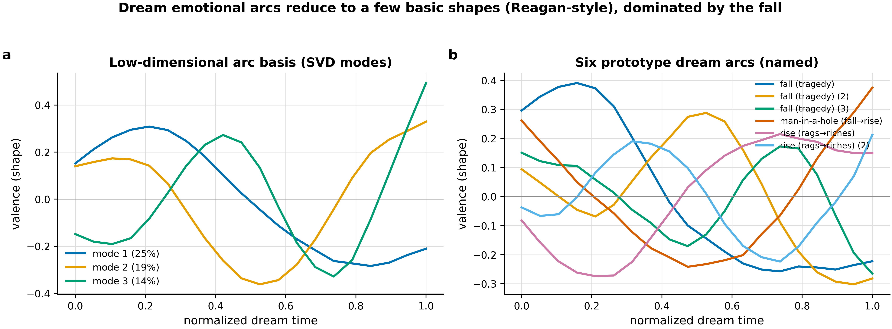
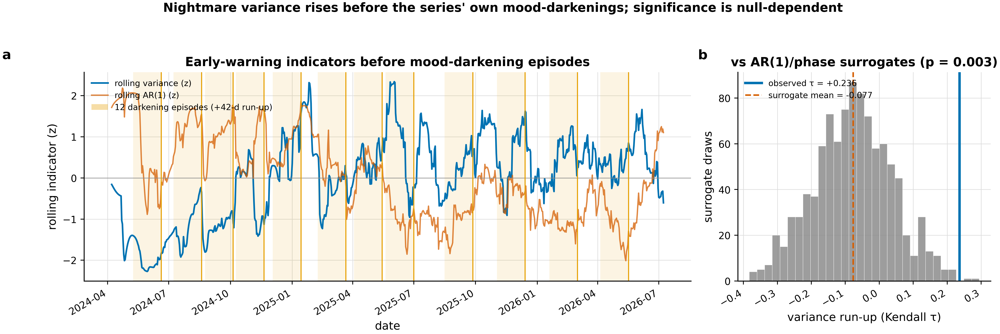
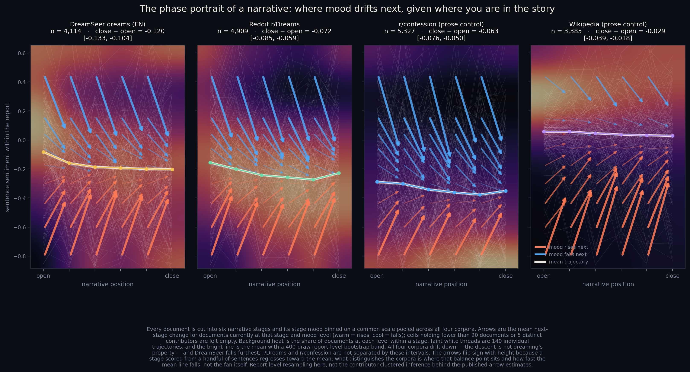
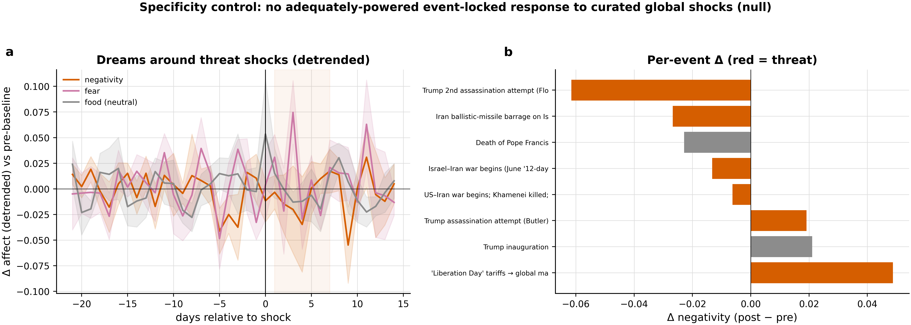
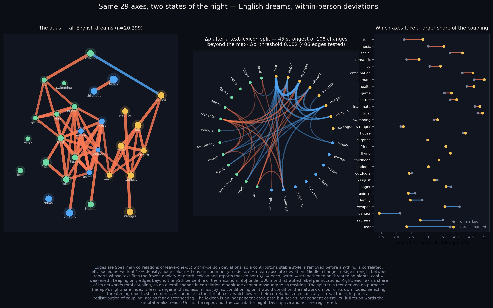
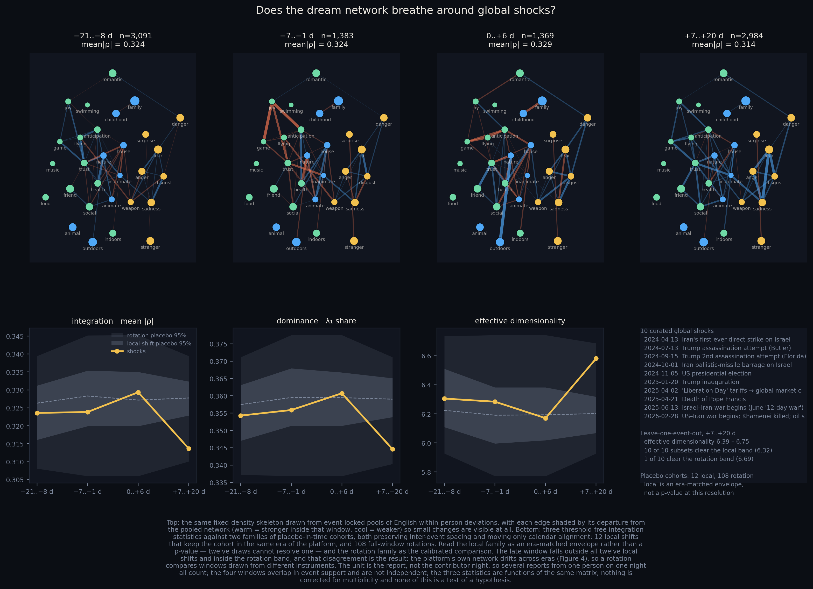
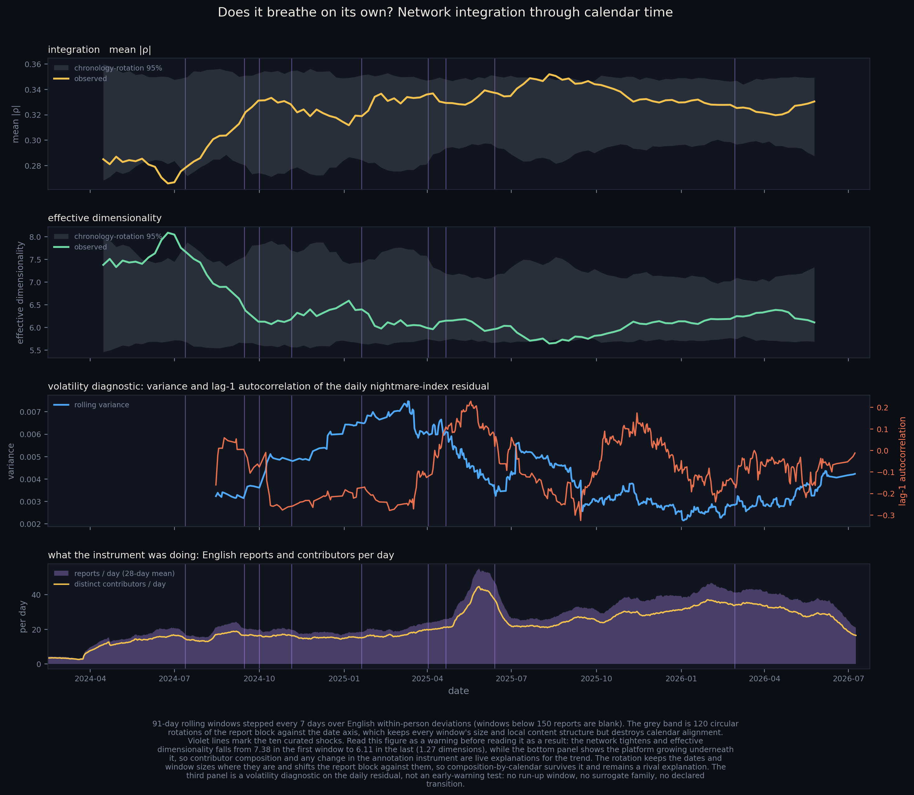

Alexander V. Lebedev, MD, PhD — Independent Researcher
Correspondence: alexander.vl.lebedev@gmail.com · ORCID: 0000-0002-0319-2357
Dream reports are usually studied one at a time. Here we ask what becomes visible when tens of thousands are treated as repeated observations of a population. Across approximately 75,000 reports from four platforms and two languages, reported dreaming showed reproducible organization at several levels. The strongest regularity was temporal: emotional trajectories became darker from beginning to end, with forward and reversed reports distinguishable across all five corpus-language samples under the screening instrument and four of five under the primary model. Sentence-order shuffling abolished this organization, while extensive ending controls generally preserved it. Human waking narratives also descended, but the endpoint change was substantially larger in three dream samples.
At population scale, a qualified weekly rhythm and provisional variance precursor were detectable, while coupling to conventional societal indicators was not robustly resolved; explicit pandemic vocabulary nevertheless rose sharply at COVID-19 onset. Dream reports therefore define a multilevel population observable whose different components express temporal, calendar and event-related structure through distinct channels rather than a single axis of collective mood.
A population of dream reports exhibits reproducible organization at multiple scales. We examined more than 75,000 reports spanning four platforms and two languages, including 30,241 reports from 5,524 Dreamseer users and approximately 45,000 reports from DreamBank, Reddit r/Dreams and the Sleep and Dream Database. The strongest regularity was within reports: emotional trajectories became more negative from beginning to end, with forward and reversed trajectories distinguishable in all five corpus-language samples under a screening instrument (AUC 0.647–0.667) and in four of five when each sentence was rescored with the primary sentiment model.
The effect survived contributor-level inference and seven controls removing ending-related material, whereas sentence-order shuffling collapsed the mean descent while preserving lexical content, locating the regularity in sequence. Matched first-person waking accounts, fiction and encyclopedic prose also descended, showing that downward movement itself is not specific to dream reports. On the endpoint estimand, however, Dreamseer English, Dreamseer Russian and DreamBank descended more strongly than waking narrative (all q < .001) and than all three human comparators after standardization by within-document sentence-valence dispersion (9/9 contrasts, q ≤ .018), corresponding to approximately two- to five-fold greater descent. Separation was less consistent for whole-trajectory slope. A proposed failure of emotional resolution at the close was not supported; the main difference was concentrated earlier, with dream reports tending to begin near neutral and subsequently decline.
At population scale, Friday reports were lighter than Monday reports in English (β = +0.024, p = .008), although the effect did not replicate in Russian, is a single uncorrected contrast, and was about half attributable to changes in who reported. Nightmare-content variance increased before twelve downturns in the corpus’s own series (Kendall’s τ = +0.236), clearing correction under four of five surrogate constructions but not under a block bootstrap whose blocks are as long as the rolling-variance window itself; autocorrelation did not increase. We therefore treat this as a prospective hypothesis rather than evidence of critical slowing down. Low intrinsic dimension and a percolating semantic “continent” reproduced in matched non-dream prose and were therefore attributed to broader properties of embedded human language rather than dreaming, although non-narrative prose fell well outside the connectivity range shared by every narrative corpus.
Weekly aggregate affect and content showed no robust entrainment to a broad panel of market, media, search, attention and cultural indicators, placing an empirical bound on detectable direct societal coupling at this temporal resolution. At COVID-19 onset, however, explicit pandemic vocabulary rose ninefold (+4.68 percentage points), exceeding all 44 placebo-in-time cutoffs (empirical p = .022), demonstrating that the reporting stream could register a major societal event.
Together, these findings identify collective structure without requiring sustained interpersonal synchrony: robust macroscopic organization can emerge despite absent average-night convergence and a thin unexplained tail of unusually cohesive nights, while trajectory, calendar, variance and event-related observables operate through partly independent channels.
Between 1933 and 1939 the journalist Charlotte Beradt collected the dreams of more than three hundred people living under the Nazi regime, asking whether dreams might register what public speech could not [1]. Classical theories likewise treat dream narratives as expressions of shared symbolic organization, adaptive threat simulation or continuity with waking concerns [2–6]. Large digital corpora make those propositions measurable at population scale, but the measured object requires a precise name.
What is observable is not a dream but a dream report: a narrative composed after waking, from memory, in language and for an audience. Externally coded affect can diverge from dreamers’ own ratings [7], and sentence position is not phenomenal dream time because narrators compress, reorder and reconstruct. We therefore reserve claims about dreaming for interpretation and treat the report as the empirical unit.
DreamBank and the Sleep and Dream Database established searchable archives for systematic content analysis [5,8,9], and recent work has applied entity extraction, language models and automated emotion annotation to large collections [10–12]. Sequential emotion has been studied only at small scale. Wemmer and colleagues collected cumulative sentence-by-sentence labels for 149 short DreamBank reports, screened to exclude upsetting content, and found only subtle aggregate shifts — joy and neutral affect declining, relief and anger rising — amid highly varied individual progressions [13], while van Wyk and colleagues plotted word-level valence in fourteen polysomnographically obtained reports [14]. Neither study was designed to test whether a population of reports has a reproducible temporal direction. The trajectory itself is a tractable object outside dream research, where sentence-level valence and arousal trajectories through written children’s stories have been modeled with transformer models [15]. Most computational work on dreams instead asks what they contain; here the central question is how affect is organized through a report and how that organization relates to population-level variation.
That population question connects dream science to work on aggregate mood [16–18], including reports that mood read off a public text stream can track aggregate market movement [19], but dream reports are an unusual and imperfect instrument. The underlying behavior is nightly even though reporting is selective; the account is composed after rather than during the experience; and its affect is less directly solicited than survey mood but remains shaped by memory, narration, audience and platform. A dense stream of reports therefore samples a behavior that conventional public sentiment does not reach, without providing direct access to the experience itself.
Collective events need not enter dream reports as literal copies. A review of the COVID-19 period describes changes in recall, emotionality, nightmares and pandemic content [20]. After the September 11 attacks, however, 44 long-term diarists showed an increase in central-image intensity without a corresponding increase in airplanes or tall buildings [21]. This distinction motivates separate tests of content correspondence—events appearing explicitly in reports—and changes in population-level affect, variance, distributions or narrative trajectories.
The measurement chain is multilevel: external conditions can alter exposure, waking affect and sleep; sleep shapes dreaming; awakening filters what is recalled; recall is narrativized; and the decision to report determines what enters an aggregate statistic. Different forcing channels may act at different links and timescales. Informational events reach a sleeper through attention and appraisal. Institutional time reaches the sleeper through schedules and sleep timing: sleep offset is on average 36 minutes later on weekends than on weekdays among 79,161 UK Biobank participants, or 63 minutes as an absolute difference [22], and social-zeitgeber accounts in the mood-disorder literature treat socially imposed routines as influences on biological rhythms [23]. A weekday contrast in dream reports is therefore a probe of a social-timing channel, not evidence that the reports directly track news.
In this paper, population observable means a statistic defined over reports or contributors—such as a mean, variance, distribution, trajectory or similarity structure—not a fitted latent factor and not a collective mind. Such an observable can change without dreamers becoming more alike, just as pairwise synchrony can occur without moving the particular aggregate being measured. Collective dynamics therefore do not require interaction or synchronization among dreamers; those are separate empirical claims. Stated positively, dream reports matter for collective dynamics precisely because they sample a recurrent, privately generated behavioral stream — the reporting of remembered dreams — that conventional behavioral and sentiment indicators do not reach; whether that sampling registers anything about contemporaneous society is the empirical question the population-level sections test rather than a property the instrument can be assumed to have.
We analyze a dense, multilingual stream of Dreamseer reports together with DreamBank, Reddit r/Dreams and SDDb under common semantic and valence instruments. Temporal direction is tested against alternative sentiment models, contributor-level inference, ending-removal controls, sentence-order shuffles and matched non-dream prose. Semantic geometry is compared with ordinary human language rather than synthetic nulls alone. At population scale we test a weekly rhythm, a provisional variance precursor, contributor convergence, externally dated events and a broad panel of societal indicators.
The question is not whether a dreaming population has a single mood. It is which observables of a reporting population carry which kind of structure, at which timescale, and against which matched control.
The primary corpus comprised 30,241 cleaned Dreamseer reports contributed by 5,524 users. Of the cleaned reports, 80.4% were classified as English, 19.5% as Russian and 0.2% as other languages. Reports spanned 20 January 2023 to 9 July 2026. Time-series analyses were restricted to a dense daily window from 25 March 2024 through 8 July 2026, which contained 746 days with at least 15 reports (median ≈ 25 reports/day; mean over the final 90 days ≈ 41/day). Submission typically occurred on the morning after the dream, giving the primary platform comparatively direct temporal dating.
Each record included free text, an LLM-generated interpretation, Plutchik-eight emotion scores [24], content tags, a rating, an embedding and a submission timestamp. Sex and birthdate metadata covered 91% and 86% of reports, respectively; 70% of users with sex metadata were female. Demographic variables were used only in de-identified, group-level analyses.
Cleaning. Cleaned denotes exactly four operations, applied in order and with no content-based filtering: deduplication on document identifier; removal of records without a parseable submission timestamp; restriction to timestamps between the application’s launch date and two days after extraction, which excludes clock-error outliers; and assignment of the calendar date from the timestamp. No spell-correction, translation, moderation or length-based exclusion was applied at this stage, so the cleaned corpus is the analysis frame from which each downstream analysis draws its own explicit filter. Where a language-specific analysis is reported, language was assigned per report by automatic detection rather than by account setting.
External corpora and how their documents were
identified. External replication used DreamBank [8],
Reddit r/Dreams and SDDb [9]; approximately 130,000 reports across
the three archives met the corpus loaders’ minimum-length rules, and
each analysis draws its own sample from these archives. DreamBank
contributes the content field of its dream series, and the
series is its contributor unit: most series are individual dreamers’
journals, while a minority pool several dreamers (normative, group and
laboratory collections) and enter as single series. SDDb contributes the
Dream Text field with its participant identifier. Reddit
reports are the post bodies (selftext) of r/Dreams
submissions in the 2019–2020 Mallett collection [25]; identification is by subreddit
membership rather than by a dream classifier, and post titles are a
separate field that was never concatenated to the body. Dreamseer LLM
interpretations, used as a machine-prose comparator, are the
interpretation field and are always analyzed as documents
in their own right — no interpretation text enters any dream-report
analysis. Because per-corpus filters differ in their minimum length and
sentence count, each analysis reports its own denominators; the capped
cross-corpus arrow analysis used 57,202 dream reports across five
corpus-language samples (Dreamseer English 9,459; Dreamseer Russian
2,743; and 15,000 each for DreamBank, Reddit r/Dreams and SDDb),
alongside a 15,000-report LLM-interpretation comparator. Dreamseer
English and Russian were analyzed separately because multilingual
sentiment calibration was not assumed to be invariant.
Independence of the replication corpora. Treating these archives as independent replications requires evidence, not assumption: DreamBank and SDDb were assembled by overlapping research communities, and Reddit posts are reposted. We therefore audited duplication on the exact samples the arrow analysis used for Dreamseer English and the three archives, hashing each report after casefolding, punctuation removal and whitespace collapse, under three criteria of increasing permissiveness (identical text, identical first 150 characters, identical bag of words). Across all six pairs of these four corpora, and under all three criteria, the overlap was zero documents. Internal redundancy within corpora was modest (identical-text duplicates: SDDb 318, Dreamseer English 150, Reddit 96, DreamBank 0) and is in any case absorbed by the author-clustered inference described in Section 2.4, which assigns a contributor’s repeated material to that contributor’s single cluster.
Non-dream control corpora. Synthetic nulls and machine prose cannot separate a property of dreaming from a property of encoded natural language, so the geometry and arrow analyses also use three human non-dream corpora, chosen to bracket dream reports on the two dimensions that plausibly drive both results, narrativity and grammatical person: 12,000 r/confession posts (first-person written accounts of real personal events — the closest waking analogue to a dream report in person, tense and register); 12,000 Project Gutenberg fiction paragraphs, capped per book so that no title dominates (deliberate narrative prose); and the lead sections of 12,000 English Wikipedia articles from a frozen 2023 snapshot (coherent but non-narrative, third person). Each corpus passes through the identical encoder, truncation rule, sentence splitter and estimator as the dream corpora. Provenance, licensing and caveats for all three are recorded in per-corpus data cards.
Dream-level semantic geometry was measured with
sentence-transformers/paraphrase-multilingual-MiniLM-L12-v2,
producing 384-dimensional,
L2-normalized embeddings [26,27]. The
same encoder was used across corpora, with caches keyed by document
identifier or content hash. The production embedding input was truncated
at 256 characters; consequently, the geometric analyses principally
reflect dream openings rather than the complete content of longer
reports.
Sentiment was measured with
cardiffnlp/twitter-xlm-roberta-base-sentiment [28],
reported throughout as the signed quantity s = P(positive) − P(negative)
on [−1, 1]. Across 1,020 days of daily
aggregates, collective model sentiment correlated (r = −0.71) with the application’s
precomputed negativity score, the sign following the opposing score
conventions.
Three per-sentence valence instruments must be distinguished, because the weight carried by the arrow result depends on which one produced it.
Because the proxy’s sentence-level fidelity is the principal measurement risk in this paper, direct per-sentence instrument 1 is the primary arrow instrument and carries the inferential claims in Section 3.3; the embedding-valence proxy is reported only as a screening pass.
The term nightmare index denotes the pre-specified, application-derived composite $\tfrac{1}{3}(\text{fear}+\text{danger}+\text{sadness})-\text{joy}$, computed from the platform’s per-report Plutchik-eight and content-tag scores, following the affective/content-analytic tradition [4,24]; the related negativity score is the mean of the negative emotions minus the mean of the positive emotions on the same scale. In the external corpora, where the native scores were unavailable, a coarser text-derived threat rate was used — the fraction of sentences matching a fixed threat lexicon — and results based on the native and text-derived labels are therefore not treated as equivalent.
Rank–frequency scaling was estimated by ordinary least squares in log–log coordinates over word ranks 10–1,000 [30]. Vocabulary growth was summarized by the Heaps exponent in V ∼ Nβ [31]. Report length was characterized on the logarithmic scale; the log-normal description was treated as an approximation rather than as a formal rejection of gamma or power-law alternatives.
Intrinsic dimension was estimated with the two-nearest-neighbor (TwoNN) estimator [32], reported as the median over five random subsamples of 8,000 reports. Two synthetic references were used: an isotropic Gaussian in the same 384-dimensional ambient space, and a variance-preserving feature shuffle in which embedding coordinates were independently permuted across reports. The Gaussian reference tested the behavior of an unstructured high-dimensional cloud; the feature shuffle preserved marginal coordinate distributions while destroying cross-coordinate organization. The Grassberger–Procaccia correlation dimension [33] was inspected as a narrow-radius lower-bound diagnostic, not as evidence of fractality or self-similarity. Spectral color, detrended fluctuation analysis [34] and permutation entropy [35] were computed on the daily collective residual, and Taylor’s fluctuation-scaling relation [36] was inspected but not interpreted (see Section 3.1).
For percolation, 5,000 English reports were represented as a thresholded cosine-similarity graph [37], averaged over three random subsamples. At each threshold θ on a grid from 0.02 to 0.89 we measured the fraction of reports in the largest connected component and the number of isolated components, applying the identical procedure to feature-shuffled embeddings. A semantic continent was defined operationally as a graph retaining a dominant giant component across nontrivial similarity thresholds.
Matched natural-language baselines for the geometry. Synthetic nulls establish that these estimates are not artifacts of distance concentration or of the encoder’s marginal variance profile, but they cannot establish that the geometry is a property of dreams, because transformer representations are themselves strongly structured: pre-trained sentence embeddings occupy an anisotropic region of the embedding space [38], and the hidden representations of large protein-language and image transformers concentrate on low-dimensional manifolds [39]. The three human non-dream corpora of Section 2.1 were therefore pushed through the identical pipeline at the same sample sizes. Because the encoder input is truncated at 256 characters and documents differ systematically in length across corpora, every corpus except the Dreamseer English reference — which supplies the target length distribution — was measured twice: once under the plain 256-character rule, and once length-matched, with each document truncated to a character count drawn at random from the Dreamseer English distribution. That includes the three external dream corpora, so the reported band is a like-for-like comparison across all eight. The length-matched variant is the comparison of record, since it removes the possibility that baselines differ merely by filling the encoder window more often.
Temporal changes in geometry were estimated from sample-size-fixed monthly subsets using mean pairwise distance, participation ratio and log generalized variance, with trend significance assessed by circular-shift permutations that preserve temporal autocorrelation. A stable panel of 163 users active across the observation window was analyzed separately to distinguish within-cohort geometric change from changes in the composition of contributing users.
A trajectory-level arrow of time was tested by pairing each within-report valence sequence with its reversal and asking whether a classifier could discriminate forward from reversed order. Reports with fewer than four qualifying sentences were excluded. Each trajectory v of length k was reduced to five order-sensitive features: the ordinary-least-squares slope of v against normalized position; the second-half mean minus the first-half mean; the last value minus the first; and the normalized argmax and argmin positions. Features were z-scored, and forward and reversed versions of each report entered as two rows with opposite labels. The classifier was an ℓ2-regularized logistic regression at library defaults. An AUC above 0.5 indicates statistical time-irreversibility but does not by itself specify whether the narrative becomes darker or lighter; direction was evaluated separately through end-minus-start valence and increment skewness.
Author-clustered inference. Archival dream corpora
contain long series from single contributors: DreamBank’s 15,000
analyzed reports come from 50 series (Section 2.1), and one SDDb
participant supplies 31% of that sample. Treating reports as independent
units therefore risks overstating precision even when forward and
reversed copies of one report are kept together. All arrow statistics
reported here are clustered on the author: cross-validation is
GroupKFold with the author as the group, so no contributor
appears in both training and test folds; the permutation test is a
per-pair label flip evaluated on an author-wise 80/20 split; drift intervals are cluster
bootstraps that resample authors with replacement; and the drift p-value is an author-level sign-flip
permutation in which all of a contributor’s reports flip together.
Resampling budgets differ by run and are reported here rather than left
implicit, because several of the resulting p-values sit at their floor: the
screening pass used 120 AUC permutations (floor .008, uninformative); the author-clustered
re-analysis uses 10,000 permutations and a 4,000-draw bootstrap; the
multi-arm awakening audit uses 300 AUC permutations and 1,500 author
sign-flips, where the arm count rather than the floor is the binding
constraint; and the primary-instrument run uses 2,000 permutations and
4,000 sign-flips. Where a p-value equals 1/(B + 1) it should be read as a
bound. Three effect sizes are reported for every corpus — the
report-level mean, the mean of per-author means (equal weight per
contributor), and the mean when exactly one randomly chosen report per
author is retained, averaged over 200 draws — together with the fraction
of authors whose own mean drift is negative.
Sampling and caps. In the primary-instrument and contrast runs, each corpus contributes the first 6,000 qualifying documents in file order rather than a random sample, and each document is truncated at 25 sentences with a four-sentence minimum. This is a deterministic prefix, not a draw, so contributor composition is not controlled across runs and differs from the screening pass; the resulting contributor counts are reported with every estimate. Dreamseer Russian supplies 2,743 documents, its entire qualifying set.
Awakening-artifact arms. Whether a dream is recalled
at all depends on the state of the awakening, and arousal at awakening
is the classical mechanism by which dream content reaches report [40]; if
emotionally intense content is also more likely to wake the sleeper, a
report may end dark because that is where the dream stopped. A narrative
account — the climax goes last — predicts the same signature. Six arms,
defined as a set before any of them was estimated, delete or partition
the ending and re-estimate the arrow: every sentence matching a
bilingual awakening lexicon removed; the final sentence removed; the
final two sentences removed; the interior only, with first and last
sentences removed; reports that do not end on an awakening
sentence; and, separately, those that do. A seventh arm removes the top
decile of reports by text-derived threat rate, testing whether the
effect is carried by nightmares. Two runs are reported and they differ
in one respect that matters for reading arm-to-arm differences. The
dedicated audit restricts all arms to reports with at least six
sentences, so the arm n is
constant within a corpus and every full-minus-arm difference — including
the closing-step decomposition quoted in Section 3.3 — isolates the
deleted sentences; its matched full baseline is therefore
not identical to the whole-corpus estimate. The primary-instrument run
applies the arms at the four-sentence minimum, so its arm n varies and its arm differences mix
deletion with a change in which reports qualify; it is used for
direction and magnitude, not for the step decomposition.
Non-dream comparators and formal contrasts. The platform’s own LLM interpretations differ from dream reports in authorship, genre and generation process simultaneously, so the arrow was also estimated, under the primary instrument and the identical pipeline, on the three human non-dream corpora of Section 2.1. Because comparing two intervals is not a test, each dream corpus was contrasted with each comparator directly: authors are resampled with replacement independently within the two corpora, 4,000 draws, giving an interval for the difference of author-weighted means and a two-sided bootstrap p floored at 1/(B + 1); Benjamini–Hochberg correction is applied across the fifteen contrasts within each statistic. Ratios are reported for description only, since their bootstrap distributions are wide and right-skewed. Two estimands are contrasted, because end-minus-start uses two sentences and is mechanically length-sensitive while the corpora differ in length: the end-minus-start drift, and the ordinary-least-squares slope over the whole trajectory. Every contrast is additionally repeated on sentence-count-matched subsets, constructed by retaining, for each sentence count present in both corpora, the same number of documents from each; because a single stratified draw is one arbitrary realization, the matched contrast is repeated over 50 matching seeds and reported as the median p with its range. Per-corpus sentence-count medians and quartiles are released with the contrast tables; the fraction of documents at the 25-sentence cap, and a repeat of the headline contrasts with capped documents excluded, are released with the tables of the recovery run described below. The length asymmetry that motivates the matching is substantial and worth stating here, because it bears on how the paragraph-scale comparators should be read: in the contrast run, median sentence counts are 6 for both Gutenberg fiction and Wikipedia openings and 5 for the machine interpretations, against 13 for DreamBank, 15 for SDDb, 12 for waking confessions, 10 for Reddit r/Dreams and 7–8 for the two Dreamseer samples. The recovery run, which supplies the closing-step, flattening, standardized-descent and edge-profile results and admits only documents of at least six sentences, shifts every median upward without closing the gap: 8 for fiction and Wikipedia, 7 for the interpretations, against 15 for DreamBank, 17 for SDDb, 14 for waking confessions, 12 for Reddit and 10–11 for Dreamseer. The paragraph-scale comparators remain roughly half the length of the archival dream corpora in both runs, which is why the ending statistics are not measuring quite the same object in every corpus (Section 5). Benjamini–Hochberg q-values are reported both within each estimand family and pooled across estimands. Finally, the increment skewness named in the second half of our stated criterion for this hypothesis is estimated per document and aggregated by author on the same footing, so that the conjunction can be evaluated rather than assumed.
A dispersion-standardized descent, and two baselines that cannot be matched away. Valence is bounded on [−1, 1], and the corpora do not sit in the same part of it: the waking comparator averages −0.34 against −0.13 to −0.23 for dream reports. A corpus already near the floor has less room to fall, so a raw contrast could reward dream reports for starting high. We report a second estimand that speaks to this without conditioning on a baseline, expressing each document’s drift and slope in units of the pooled within-document standard deviation of sentence valence for its own corpus. It should be described for what it is. This is an effect size rather than a correction: it asks how large the descent is relative to the ordinary sentence-to-sentence movement of that corpus. It does not restore the range a corpus near the floor has lost, and no statistic computed on a bounded scale can. What it does is remove the possibility that the dream corpora’s larger descent is simply the larger scale of everything they do, which is the version of the objection that is answerable. It is estimated and contrasted on exactly the same author-clustered footing as the raw statistics, and both are reported.
Two properties of that denominator bear on its interpretation.
First, it is not neutral across corpora. The pooled within-document sentence-valence standard deviation is largest for the waking comparator (0.484) and smallest for the non-narrative one (0.264), with the dream corpora and fiction in between (0.374 for Dreamseer Russian, 0.390 for SDDb, 0.410 for Dreamseer English, 0.414 for DreamBank, 0.419 for Reddit r/Dreams, 0.422 for Gutenberg fiction). Standardizing therefore widens the contrast the flagship rests on — within the recovery run, Dreamseer English against waking narrative moves from a raw ratio of 4.4 to a standardized 5.2 — and narrows the one it does not need, the same corpus against encyclopedic openings falling from 4.6 to 3.0. The dispersion is a property of each corpus rather than an analytic choice, and raw and standardized estimates agree on the estimand the claim is made on: the three carrying corpora separate from all three comparators in 9 of 9 endpoint contrasts raw (q ≤ .026) and 9 of 9 standardized (q ≤ .018). The two disagree on the slope, where raw gives 7 of 9 and standardized 6 of 9, which is one of several reasons the magnitude claim is stated as an endpoint claim. Both versions are reported throughout, and the difference in valence units rather than the ratio is what we treat as carrying inference.
Second, the denominator is not independent of the numerator: a document that descends contributes that descent to its own sentence-valence standard deviation, so a steeply descending corpus inflates its own denominator. We therefore re-standardized by the residual within-document standard deviation, after removing each document’s own linear trend. The denominator moves by under 2% in every corpus, and — against the direction the objection predicts — it shrinks most for the waking comparator (2.0%), whose linear component is the largest share of its within-document variance, rather than for the steeply descending dream samples (0.7–1.1%); the per-corpus values are in the Supplementary Reproducibility table, row 020. Every conclusion holds: the nine endpoint contrasts remain 9 of 9 at a slightly tighter q ≤ .009, the slope stays at 6 of 9, and the multiplier moves from 2.1–5.2 to 2.2–5.1. Self-normalization is not what produces the standardized result. We report the untrended denominator as primary because it is the simpler quantity and the two agree.
A third adjustment is the obvious one and we declare it non-identifying in advance: stratifying both corpora to a common first-sentence-valence histogram. Two distinct problems make that arm uninformative and should not be run together. The first is measurement: conditioning on a noisy baseline when two corpora have different means induces regression toward each corpus’s own mean, so the lower-mean corpus is credited with a steeper descent from any matched starting point, and finer strata do not repair it. The second survives even a perfectly measured baseline, because the unadjusted and the baseline-adjusted comparison target different quantities; that is Lord’s paradox [41]. Which of those two comparisons gives the appropriate answer depends on the question being asked and on assumptions about the causal structure that the data cannot supply, rather than on a better-matched conditioning set [42]. We nevertheless report the arm in full in Section 3.3, in both the directions it points, because it reverses the descent contrasts against the waking comparator and that fact belongs in the paper; what we do not do is treat it as identifying the comparison either way. What does identify the arrow within a corpus is the sentence-order shuffle, which destroys sequence while leaving level, dispersion and opening distribution untouched.
Does the narrative resolve? The disagreement between the two estimands has a natural reading — that the descent is reversed at the close — but drift and slope are a curvature contrast and cannot localize anything to the ending. We therefore measured the ending. On documents of at least six sentences, we estimate the closing step vk − vk − 1, the descent that precedes it vk − 1 − v1, their ratio (re-formed inside every bootstrap draw so that it carries an interval), the second-half-minus-first-half slope difference, which would capture a resolution spread over a closing passage rather than concentrated in one sentence, and the author-weighted mean valence at each of the first and last five sentence positions. Each is contrasted dream-minus-comparator on the same footing as above.
A disclosed asymmetry in the clustering unit. The
dream corpora carry a person key. Two comparators do not:
author is a post identifier for r/confession and an article
identifier for Wikipedia, because the source releases carry no
contributor field, and it is a book identifier for Gutenberg fiction.
Those two comparators are therefore clustered at the document level
while the dream corpora are clustered at the person level, which makes
the comparator interval too narrow by an unknown design effect and the
difference anti-conservative in the direction we claim. Rather than
assert that the effect is small, we report for every contrast the
variance-inflation factor that would have to apply to the comparator
before the difference interval covered zero.
For emotional arcs, each qualifying trajectory was mapped to normalized dream time and decomposed by singular-value decomposition, as in the emotional-arc analysis of Reagan and colleagues [43]; K-means clustering, used here in place of their hierarchical-clustering and self-organizing-map steps, yielded six descriptive prototypes. Two objects were kept distinct. The mean arc is the corpus-average trajectory and directly expresses the direction of the arrow; the first variance mode describes how individual trajectories differ around that mean. Sentence-order shuffling supplied the decisive control: an order-sensitive mean arc should flatten when its sentences are reordered, whereas a generic smooth-basis artifact should not. Sequential semantic movement was additionally characterized by mean-squared displacement over sentence lag and by the distance between consecutive sentences, with sentence-order shuffling and random within-report sentence pairs as controls.
Descriptive phase portrait. To make the already-estimated arrow visible as a dynamical object rather than as a set of endpoint contrasts, we constructed a descriptive phase portrait from the true per-sentence XLM-R trajectories (Figure 7). Documents required at least six sentences — a stricter filter than the four-sentence primary-instrument run — and each qualifying document was divided into six equal narrative stages. Within each corpus, reports at a given stage were binned into nine sentiment levels on a common scale defined by pooled quantiles across Dreamseer English, Reddit r/Dreams, r/confession and Wikipedia; the arrow at each stage-by-level cell is the mean change at the following stage among reports currently occupying that cell. Cells below 20 reports or five distinct contributors were not drawn; for source releases without a reusable contributor field, the document key is the disclosed clustering proxy. Background intensity obeys the same suppression rule, 140 randomly selected trajectories provide scale, and the overlaid line is the report-weighted mean trajectory with a 400-draw report-level bootstrap band. This visualization is not an additional inferential analysis: its report-level intervals do not replace the contributor-clustered estimates and formal contrasts above, and the restoring fan of arrows is expected in part from regression to the mean when a stage score is estimated from a small number of sentences.
The daily residual. Dreamseer participation increased approximately fifteen-fold over the window, making compositional and sample-size controls essential. For each English calendar day with at least 20 reports, the daily mean of the target score was regressed — by weighted least squares with weights $\sqrt{n_d}$ — on a standardized linear time trend, log nd, six weekday indicators, and two pairs of annual sine/cosine harmonics in day-of-year. The residual was then divided by the day’s standard error, $\mathrm{sd}_d/\sqrt{n_d}$, so that sparsely sampled days are not allowed to dominate. The result was reindexed onto a complete daily calendar. The long-memory diagnostics of Section 3.1 use a simpler English daily negativity residual — ordinary least squares on the same trend, log nd and weekday terms over days with at least 15 reports, without the annual harmonics or the standard-error scaling — and detrended fluctuation analysis is computed on its observed-day sequence rather than on a complete calendar with interpolated days, avoiding interpolation-induced persistence. Time-series inference used block or stationary bootstrap procedures [44], phase-randomized surrogates and AR(1)-based surrogates as appropriate [45,46]. Multiple comparisons were controlled with Benjamini–Hochberg false-discovery-rate procedures within predefined families [47]; effective-test corrections were used only in explicitly relaxed exploratory scans [48].
Episodes and the variance run-up. The early-warning analysis used a 28-day rolling variance (and, as the co-predicted indicator, a 28-day rolling lag-1 autocorrelation) of the English nightmare residual defined above. The ≥ 20-report threshold of the previous paragraph is stricter than the ≥ 15 used for the corpus description in Section 2.1, and it is what reduces that section’s 746 days to the 601 daily observations analyzed here. A mood-darkening episode is a day at which the forward shift of the residual is in the top decile, where the shift is the mean over the following 14 days minus the mean over the trailing 7 days. Candidate days were deduplicated by scanning forward and retaining a day only if it lay at least 42 days after the last retained one, so that no two run-up windows overlap; this yielded 12 episodes. For each episode, Kendall’s τ was computed between position and indicator value across the 42 days preceding it, and the reported statistic is the mean τ over episodes. Every surrogate was passed through the complete pipeline, including episode selection, so that the null distribution absorbs any tendency of the selection rule itself to manufacture run-ups; p is the fraction of surrogates whose statistic equals or exceeds the observed one, with the usual +1 correction.
What the surrogate nulls preserve, and why additional nulls are reported. The baseline AR(1)+phase null combines an AR(1) process matched to the observed lag-1 coefficient and residual variance with phase randomization of the Fourier transform. Both preserve linear serial dependence: an AR(1) process is linear-Gaussian with constant conditional variance, and phase randomization preserves the power spectrum while Gaussianizing the amplitude distribution — which is what that construction is for, since destroying nonlinear structure is how a surrogate tests against a linear null [45,46]. Volatility clustering is a conditional-variance property and therefore not preserved by either, and rolling variance is precisely the statistic that conditional heteroskedasticity inflates; additional GARCH, IAAFT and block nulls address that vulnerability. Four families are reported, each at 1,000 surrogates: the AR(1)+phase baseline; an AR(1)-GARCH(1,1) process whose conditional variance is fitted to the series by variance-targeted Gaussian quasi-maximum likelihood, maximized over a deterministic (α, β) grid rather than by a numerical optimizer, with the optimum interior to the grid; the fit is near-integrated (α + β = 0.993), so its conditional variance is highly persistent even though its shock response is modest — a distinction that matters when reading the diagnostics below; a stationary block bootstrap at mean block lengths of 14 and 28 days [44], which resamples contiguous stretches of the observed series and therefore carries its local volatility with it; and IAAFT, which preserves the power spectrum and the amplitude distribution together. Because a null’s label is not evidence, each family is reported alongside a diagnostic of what it actually reproduced — the lag-1 autocorrelation of the raw series, and of the absolute and squared series, the latter two being the standard measures of volatility clustering (Section 3.5, Supplementary Table S3). Changing the null changes every member of a corrected family, so the Benjamini–Hochberg correction across the four-member family is recomputed inside each null rather than carried over.
The weekly-rhythm estimator. The Friday-minus-Monday contrast is estimated at the report level on reports filed on those two weekdays from 2024-03 onward, regressing the sentiment score on a Friday indicator with controls for standardized text length and two annual Fourier harmonics. Because weekday is a deterministic function of the calendar date, reports sharing a date share that date’s shocks, so the coefficient is reported under three variance estimators — clustered on contributor, clustered on date, and two-way on both by the Cameron–Gelbach–Miller decomposition — and its permutation null holds whole dates together, permuting the weekday label across dates rather than across reports, with the adjusted coefficient as the permuted statistic. The primary stratum is English, per the language-stratification rule; the language-pooled estimate is reported as a sensitivity analysis alongside the weekday composition of the language mix that pooling assumes to be flat. The same contrast is additionally estimated at the daily scale on report-count-weighted daily means over days with at least twenty reports, which is the aggregate-resolution counterpart of the spectral test and cannot be inflated by within-day dependence.
The external-indicator specificity control. The weekly battery comprised 117 tests: 13 dream axes — three affective, two intensity, one coherence, one threat, one agency, and five neutral content axes serving as within-family negative controls, of which two turn out to be too poorly measured to carry that function (below) — against nine weekly indicators spanning news tone and volume, prediction-market risk, news sentiment, encyclopedic attention, search behavior and cultural production. Dependence was estimated four ways: Pearson and Spearman for monotone association, Székely–Rizzo distance correlation for any dependence in the pairwise distance structure [49], and k-nearest-neighbor mutual information [50]. Mutual information is the more general object: as a population functional it is zero if and only if the two series are independent, whereas correlation can vanish under strong nonlinear or heavy-tailed dependence. The k-nearest-neighbor estimator used here (scikit-learn, k = 3) truncates negative estimates to zero and is therefore biased upward at finite n, so inference is against spectrum-preserving surrogates rather than against a zero-information threshold. At n ≈ 119 that generality is bought at power; the injection calibration in Section 3.6 therefore ranks the estimators by what they could have detected on the injected shapes (linear, quadratic and cosine mixing — not fat-tailed copulas), not by which is conceptually preferable. The forward event study drew on 10 hand-curated, high-salience 2024–2026 global shocks — spanning war, political violence, an election and an inauguration, a market shock and a widely covered death — and its English test is much smaller than that list, which matters because the section’s purpose is to bound power rather than to establish an effect. Seven of the ten — the war, political-violence and market-crash shocks — form the threat cohort that the threat outcomes are designed to detect; one of those seven was dropped for falling within 28 days of a kept event, and a minimum of 15 English reports per day then leaves at most five of the remaining six per outcome (nevents ≤ 5). It contrasts a post-window of +1 to +7 days against a pre-window of −21 to −4 days on four English threat and affect outcomes, with two neutral content controls (food and family themes) inside the same six-outcome Benjamini–Hochberg family. No reliability figure exists for either control at the daily event-window scale, and the weekly food axis is the second-worst-measured of the five neutral controls and third-worst of the thirteen axes in the panel audit below, so those two cells are reported as weak controls rather than as demonstrations that a generic drift would have shown up. Outcomes are adoption-detrended before contrasting, because the threat shocks cluster in 2024 where the adoption-driven downward drift in fear and nightmare rates is steepest and a raw contrast would be biased negative by that trend alone.
Exploratory network visualizations. Four supplementary visualizations ask what the semantic and fixed 29-axis Dreamseer feature systems look like without promoting them to a confirmatory network analysis (Supplementary Figures S4–S7; Supplementary Video 1). Supplementary Figure S7 is a raw report-embedding map from a separate cache: it uses a seeded sample of 2,600 English reports from March 2024 onward, t-SNE for display, an eight-nearest-neighbor graph computed in the original 384-dimensional cosine space, and a Gaussian-smoothed local average of the native nightmare index. It has no minimum-contribution filter or within-person centering and is a map rather than a test.
Supplementary Figures S4–S6 use English reports from March 2024 onward contributed by users with at least three eligible reports. For each report and feature, the report value is centered on the leave-one-out mean of that contributor’s other eligible reports; the resulting correlations therefore describe a report-weighted cloud of within-person deviations rather than stable differences between people. The unit remains the report, not the contributor-night, so the resampling results are too sharp for statements about independent nights or people. For the threat-state contrast (Supplementary Figure S4), reports whose text matched either the frozen anxiety lexicon or the frozen death lexicon were compared with an equal-sized random sample of unmarked reports (n = 3, 864 per group). Spearman edge differences were screened against the 95th percentile of the maximum absolute edge difference over 300 month-stratified label permutations; this max-statistic controls the 406-edge drawing decision, not the wider family of visualizations.
For event-locked network breathing (Supplementary Figure S5), all ten curated shocks were pooled without the independence filter used by the primary level-based event study, across four dependent windows (−21 to −8, −7 to −1, 0 to +6, and +7 to +20 days). Mean absolute correlation, the leading-eigenvalue share and participation ratio were compared with two descriptive placebo-in-time families that preserve inter-event spacing: 12 common-offset shifts that keep the cohort in the same era of the platform, and 108 circular rotations over the full observation window. The former is an era-matched envelope with inadequate resolution for a calibrated p-value; the latter is the broader null, with Monte Carlo p-values computed by the +1 rule. The twelve dependent window-by-statistic contrasts are uncorrected. Leave-one-event-out estimates test whether one shock carries the picture. The calendar visualization (Supplementary Figure S6 and Video 1) repeats the same graph scalars in overlapping 91-day windows stepped by seven days and compares them with 120 circular rotations of the report block against the date axis; report volume and distinct-contributor volume are plotted because platform growth and contributor composition remain rival explanations. Every observed event window, placebo event window and labeled map region entering a released estimate satisfies both disclosure floors, at least 20 reports and at least five contributors.
Demographic comparisons used one row per user, preventing prolific users from dominating inference. Sex differences were tested on per-user mean negativity and checked after residualization on log report length; age associations used per-user Spearman correlation. These analyses are cross-sectional and descriptive.
Split-half reliability was estimated at each aggregation level, and the level matters more than the headline value, so we state both. Daily, collective sentiment reaches 0.107 and the nightmare index 0.175, so roughly nine-tenths and eight-tenths of day-level variance are sampling noise. The same audit reports lower figures for detrended daily series, which approximate the residuals on which the daily time-series estimators of Sections 3.1 and 3.5 operate: 0.107 for negativity, the score on which the long-memory and 1/f nulls of Section 3.1 are computed (not the lexical scaling laws of that section, which are properties of the text and not of any daily series); 0.102 for sentiment; and 0.107 for the nightmare index. Wherever this manuscript quotes a daily nightmare reliability of 0.175 beside the variance precursor — in Sections 2.6, 3.5, 4 and 5 — that is the raw daily series rather than the residual the statistic is computed on, and it is the more favorable of the two by a factor of about 1.6. We quote it because it is the figure the precursor analysis reported, and state the residual value here so that the difference is visible rather than buried. No coupling claim in this paper rests on a daily aggregate correlation for that reason, and the one analysis that does use the daily series — the variance precursor, built on 28-day rolling windows of it — is reported at the frontier rather than as a result. Weekly and monthly, the same two series reach 0.262 and 0.455, and 0.518 and 0.819 as levels, and the external-indicator battery is run weekly and monthly rather than daily for that reason. Those are not the figures its null should be read against, however, and they fail to be on three counts at once: the audit just described pools languages, detrends on time alone, and covers only three of the panel’s thirteen axes, whereas the panel correlates English-only weekly means, gated at thirty reports per week and residualized on time and log report volume. We therefore re-ran it to match the panel on all three counts, across all thirteen axes (Supplementary Reproducibility row 026).
What that returns is lower and, more usefully, strongly axis-dependent. Weekly, as split halves of the detrended series, reliability runs from 0.103 for negative sentiment through 0.117 and 0.118 for animal and food content, 0.176 for the negativity axis and 0.273 for threat, to 0.437 for social content, 0.451 for embedding dispersion and 0.463 for emotional intensity. Those are stepped up by Spearman–Brown to the series the panel actually correlates, giving 0.19, 0.21, 0.21, 0.30, 0.43, 0.61, 0.62 and 0.63 — a split-half r here is the reliability of a weekly mean taken over half the week’s reports, whereas the panel correlates the mean over all of them, and because a period mean’s sampling-error variance goes as σ2/n, halving the reports doubles it, which is exactly what the step-up assumes rather than merely analogizing to. Monthly, every axis is better: 0.34–0.87 stepped up on the same detrended deviations, against 0.37–0.95 as levels. Three features of that profile matter more than its range, and two of them cut against us.
First, these estimates are noisy, and the worst of them are the noisiest. Each of the two hundred splits sees the same 121 gated weeks, so averaging across splits removes the variance due to which reports fell on which side but leaves the sampling variance of a correlation at that number of weeks. A circular block bootstrap over weeks, with each of the fifty split assignments used for the interval re-evaluated inside every draw so that assignment spread is not counted twice, puts emotional intensity at 0.463 with a 95% interval of 0.335 to 0.517 but negative sentiment at 0.103 with an interval of −0.071 to 0.247; the point estimates themselves average two hundred assignments, so the intervals are centered on a fifty-assignment mean and are quoted as intervals rather than as re-estimates. On negative sentiment and on animal content the interval reaches zero reliability, which means the disattenuation factor those axes imply is not bounded above at this number of weeks. Every per-axis figure below should be read with that.
Second, the axes measured worst are not a random subset of the panel. Negative sentiment is the worst measured of the thirteen and the negativity axis the fourth worst; between them sit two of the five neutral content axes that serve as the panel’s within-family negative controls (animal and food, 0.21 each stepped up). Grief, the third axis the panel classes as affect, is better measured, at 0.34 (0.51 stepped up). So the hypothesis is most naturally stated on two of the axes this instrument measures least well, and part of the control family is barely measured either — a null on an axis that could not have moved is not the negative control it was included to be. Accordingly, those controls are treated as weakly informative wherever they are used in Sections 3.5 and 3.6 and Supplementary Figure S2.
Third, the unit of the split matters and both are released. The halves above are halves of the reports, which is the panel’s own aggregation unit and the more flattering choice: a contributor filing several reports in one week lands on both sides of the split, so their idiosyncratic level is counted as true score rather than as error. Splitting on contributors instead — the right estimand if the target is a population state that a fresh sample of dreamers should reproduce — drops the weekly range to 0.03–0.42 stepped up, with eight of the thirteen intervals reaching zero. Everything below quotes the report-level figure and is therefore the optimistic end of that pair — as, for the same reason, are the daily, weekly and monthly level figures quoted at the head of this discussion. Two further robustness points are less consequential: residualizing both halves on the full period’s log n rather than on each half’s own moves no axis by more than 0.005; reading the null against the level pair 0.26–0.46 would use both the wrong object and the more flattering one.
Two scales must then be held apart, because the panel’s calibration does not settle the attenuation question. The injection calibration of Section 3.6 injects dependence of known strength into the axis as already corrected, so what it establishes is that the design is not blind at the scale of the series we can measure: it bounds observable weekly coupling. Reliability attenuation is the separate mapping from a noise-free association to an observable one, and it is not absorbed by that calibration. At the panel’s own full-length reliabilities, an observable floor near |r| = 0.30 therefore corresponds to a noise-free association of about 0.38 on the best-measured axes — intensity, dispersion and social content — of 0.42 to 0.69 across the three axes the panel classes as affect, and of 0.55 to 0.69 on the two negativity axes specifically. Those are point figures with the intervals of the previous paragraph behind them: on intensity, whose stepped-up reliability interval is 0.50 to 0.68, the correction runs only from 0.36 to 0.42, whereas on negative sentiment — the worst-measured axis, and one of the three carrying recurring uncorrected cells in Section 3.6 — the reliability interval reaches zero and the correction has no upper bound at this number of weeks. That asymmetry is the single most important qualification on this null, and it runs against us: the panel is tightly bounded for the axes it measures well and weakly bounded for the axes anyone would ask about first. The figures are additionally lower bounds twice over — the indicator side is treated as error-free, and the reliabilities are the report-level rather than the contributor-level ones. Treating the indicator side as error-free is defensible for near-complete-count series such as pageviews, search volume and prediction-market prices, and it is in any case a question of reliability rather than of how validly any of these indicators proxies collective mood, which no attenuation correction recovers. We therefore do not claim that attenuation is an insufficient account of the null. What the panel bounds is coupling in the series these data can measure at this resolution, axis by axis; on the negativity axes a noise-free association below roughly 0.55 to 0.69 would be attenuated beneath the floor and is untested here. Geometry, within-dream trajectories and per-user averages carry the better-powered claims because they aggregate over documents and people rather than over days.
The results below differ substantially in evidential weight, and we grade them explicitly rather than letting one confidence level stand for all.
All reported outputs are aggregate. No raw dream text or user
identifier is reproduced. Released cells require at least 20 reports and
at least five users, enforced across the working tree, the index, the
head commit and reachable history by
scripts/check_release_cells.py rather than asserted.
Ethical safeguards are described in Section 6. Every numerical claim in
the Results and in the figure captions is reproducible from the
committed analysis scripts; the mapping from each result component to
its script is provided in the Supplementary Reproducibility table.
A dream report is waking prose about an experience that was not composed for an audience, or for anything. Whatever generated the experience was offline; the text describing it was written on waking, from memory, by someone awake. That the report is a waking artifact is the premise this paper never departs from — and, as text, it turns out to follow the same statistical regularities as prose written with full deliberation (Figure 1). Across 2,445,873 tokens, the cleaned English lexicon contained 51,946 observed word types. Rank–frequency scaling over ranks 10–1,000 gave a Zipf exponent of 1.15; vocabulary accumulation was sublinear, with Heaps exponent β = 0.57. Report lengths were strongly right-skewed (median 56 words, mean 101 words) and, on the logarithmic scale, were well approximated by μ = 4.01, σ = 1.11. These are canonical scaling signatures of human language production, and they place dream reports in the same statistical regime as other structured linguistic systems. They therefore calibrate the dream corpus rather than distinguish dreaming itself: the instrument is reading text, not noise.
The meaning those words carried was far thinner than the space built to hold it. The primary TwoNN estimate gave intrinsic dimension ≈ 25 (repeated estimates in the range 24–25) despite an ambient dimension of 384. The isotropic-Gaussian reference yielded ≈ 131 dimensions and the variance-preserving feature shuffle yielded ≈ 112, so the low estimate did not arise merely from high-dimensional distance concentration or from the encoder’s marginal variance profile: it depended on coordinated structure among embedding dimensions. The neighborhood structure of English report openings is therefore consistent with a manifold of roughly twenty-five dimensions — a statement about local geometry, not about how much variance any twenty-five directions capture. A Grassberger–Procaccia estimate of ≈ 10.1–10.5 was substantially smaller and, being obtained in a narrow-radius concentration regime, is treated as a fragile lower bound rather than as evidence of a fractal attractor. The supported claim is low intrinsic dimension, not scale-free self-similarity.
Two synthetic references cannot settle what that estimate means: neither can distinguish a property of dreaming from a property of sentence embeddings, because both destroy exactly the cross-coordinate dependence that makes an embedding of natural language an embedding of natural language. The test that can distinguish them is to run the identical estimator, at identical sample size, on human prose that is not about dreams. We did, on three corpora chosen to bracket dream reports on narrativity and person — first-person written accounts of real events (Reddit r/confession), literary fiction (Project Gutenberg) and non-narrative encyclopedic openings (Wikipedia) — with a length-matched variant of each. There is no dream band. Length-matched, the estimates run from 20.9 for Wikipedia openings and 23.9 for fiction through 25.4 for waking personal narrative to 25.2 for SDDb, 26.4 for Reddit r/Dreams and 27.3 for DreamBank, with Dreamseer English at 24.5 — overlapping fiction in subsample range, and lower than every other dream corpus (Figure 1d). We report the overlap descriptively: the bracketing values are the spread of the estimator across five subsamples, not a sampling interval for the corpus mean, and no test of the difference was run. The two sets interleave rather than separating, and the pattern is worth stating exactly, because “interleave” can be made to sound stronger than it is. Of the three human comparators, one is genuinely interior: waking personal narrative, at 25.4, falls between SDDb (25.2) and Reddit r/Dreams (26.4). The other two sit below all four dream corpora on point estimates — fiction at 23.9, close enough that its subsample range (23.3–24.5) overlaps Dreamseer English’s (23.9–24.9), and encyclopedic openings at 20.9, clearly below. Machine-generated interpretations are the thinnest of all at 19.7. The claim the demotion rests on is not that the orderings alternate everywhere; it is the weaker and sufficient one that there is no interval of this estimator that dream corpora occupy and human non-dream prose does not.
Length-matched, every human corpus we measured occupies between 20.9 and 27.3 intrinsic dimensions of a 384-dimensional embedding, against 120.9 for the feature shuffle and 132.8 for the isotropic Gaussian at the same sample size. The band is quoted for human prose because the machine-generated interpretations are thinner than any of it, at 19.7 — a single generator working from one prompt template produces less coordinated semantic variation than any human corpus here, which is a fact about the generator and is treated as such throughout. The band is a property of the length-matched comparison and should be quoted with that qualifier: under the plain 256-character rule the same corpora run more widely, from 19.6 for Wikipedia to 29.1 for Reddit r/Dreams, because the truncation bites unequally on documents of different length. Low intrinsic dimension is a robust and reproducible property of this class of representation applied to human prose; it is not a property of dreaming, and a claim that “dream meaning is low-dimensional” would overstate the specificity these controls support. What the synthetic nulls establish — that real semantic embeddings are not independent coordinates — remains true and remains worth showing, which is why panel (c) is retained. It is simply a much weaker statement than it appeared to be without panel (d).
Two calibration notes bound this section. The scaling descriptions are approximate: alternative heavy-tailed length families were not formally compared, and the empirical Heaps exponent does not tightly match the value 1/1.15 ≈ 0.87 implied by the Zipf exponent. Separately, the daily English collective negativity series, adjusted for trend, report volume and weekday but not for day of year (so residual seasonality could only redden it), carried no detectable long-memory structure — spectral color near-white (β = 0.21), gap-robust detrended fluctuation analysis α = 0.53 (shuffle p = .51) [34], permutation entropy near-maximal (0.999) [35] — a null we report for completeness at the approximate daily reliability ceiling of detrended negativity, 0.107 (Section 2.5); and Taylor’s fluctuation-scaling exponent ( ≈ 0.61) is confounded by the bounded-proportion structure of theme rates and is not interpreted [36].

Figure 1. Scaling laws, and the low-dimensional manifold that turns out not to belong to dreams. (a) Rank–frequency (Zipf) relation for the Dreamseer English lexicon on log–log axes; the plotted ordinary-least-squares slope over ranks 10–1,000 is ≈ 1.14, reported in the text as Zipf exponent 1.15. (b) Heavy-tailed, approximately log-normal distribution of report length (median 56 words, mean 101). (c) Two-nearest-neighbor (TwoNN) intrinsic dimension of the 384-dimensional embeddings against the two synthetic references, at the original 8, 000-report sample size: ≈ 25 for real reports, ≈ 112 for a variance-preserving feature shuffle and ≈ 131 for an isotropic Gaussian, far below the ambient 384. (At the 12, 000-document sample size of the matched-baseline run in panel (d), the same references give 120.9 and 132.8; the text quotes that run wherever the baselines are being compared.) The panel supports low intrinsic dimension, not scale-free self-similarity — and, on its own, cannot separate a property of dreaming from a property of sentence embeddings, because both references destroy the cross-coordinate dependence that natural-language embeddings possess by construction. (d) The comparison that can: the identical estimator at identical sample size on three human non-dream corpora, length-matched, with the panel (c) synthetic values annotated off-scale for reference. Dream and non-dream corpora interleave across a narrow 20.9–27.3 band, so low intrinsic dimension is a property of embedded human prose rather than of dream content. Bars are medians over five subsamples; error bars span the subsample range and are not sampling intervals for the corpus mean, so overlapping bars indicate that no difference was resolved rather than that one was excluded.The first level of order is therefore a convergence rather than a dissociation, and it is worth stating in the deflationary direction: on both text statistics and semantic geometry, a large corpus of remembered dreams behaves like a large corpus of ordinary written language. What that corpus is not is unstructured: measured against representations whose cross-coordinate dependence has been destroyed, dream reports occupy a low-dimensional and, as Section 3.2 shows, connected semantic manifold. The matched controls locate that organization in narrative language rather than in dreaming, which is a statement about where the structure comes from and not a claim that there is none. Whatever is distinctive about dreaming in these data is not to be found in how the reports are positioned relative to one another. It is found, as the next sections show, in how they move.
Low dimensionality does not imply connectedness: twenty-five dimensions leave ample room for many mutually unreachable islands. Dream-space turns out to be a single one (Figure 2). We constructed cosine-threshold graphs from 5,000 English reports. The real graph developed a giant component at a threshold close to zero and remained strongly connected as the criterion became more stringent: at cosine threshold 0.50, 95% of reports remained in the giant component (220 singleton islands), and at 0.59, 73% remained connected (1,203 singletons). The feature-shuffled reference retained 0% in a giant component at both thresholds, fragmenting into 5,000 isolated nodes.
This contrast argues against two simpler interpretations. Dream-space was not an archipelago of sharply separated thematic modules, because a dominant component persisted across a substantial similarity range; and it was not connected merely because all high-dimensional vectors lie at similar distances, because preserving each coordinate’s marginal distribution while shuffling its cross-coordinate association destroyed the giant component. The corpus instead occupied a structured, locally coherent semantic continent.
The same objection applies here as to the intrinsic dimension, and the same control answers it. Run through the identical pipeline, the non-dream corpora are continents too: at θ = 0.50, literary fiction retains 95.3% of its documents in a single component and waking personal narrative 89.1%, against 95.3% for Dreamseer English, 95.9% for Reddit r/Dreams, 92.4% for SDDb and 90.4% for DreamBank (Figure 2b). Connectivity, like dimension, is not a dream-specific property.
What the comparison does reveal is a distinction the dream corpora had no way of exposing on their own. The one corpus that fragments is the one that is not narrative: Wikipedia openings retain only 67.0% at θ = 0.50 and 14.5% at θ = 0.59, far below every narrative corpus, dream or waking. As with the intrinsic-dimension comparison, no test of the difference was run (these values are means over three random subsamples); the gap between 67% and 89–96% is large enough to describe, and we describe it rather than test it. Encyclopedic first paragraphs are about maximally dispersed subjects — a river, a treaty, a species — and their embeddings behave accordingly. First-person accounts of events, whether dreamt or lived or invented, occupy a common dense region. The graph is therefore measuring something real, and what it measures is narrativity rather than dreaming. Machine-generated interpretations sit at the far extreme of the same axis (99.9% connected, 99.3% at the stricter threshold), which is what one would expect of prose generated by one model from one prompt template.
One apparent finding in this section dissolved under control, and the dissolution is instructive. The full monthly sample seemed to contract steadily from 2024 to 2026 — a tempting result, since progressive narrowing of a shared dream-space would be a striking claim. Across 29 months, mean pairwise distance decreased by 0.0023 per month (r = −0.79; circular-shift p ≈ 0) and participation ratio decreased by 0.0599 per month (r = −0.60; circular-shift p ≈ 0); log generalized variance also decreased (−0.0039/month), though its autocorrelation-valid p = .103 was not compelling. Then the stable panel dissolved it. Among 163 users observed across 28 months, mean pairwise distance still had a negative slope (−0.0019/month) but only marginal significance (circular-shift p = .077); the participation-ratio slope weakened to −0.0372/month (p = .441); and log generalized variance reversed sign to +0.0084/month (p = .528). The full-pool contraction therefore largely reflected turnover in who was reporting rather than progressive narrowing within a stable cohort.

Figure 2. A single dense percolation “continent” that belongs to narrative rather than to dreaming, and composition-controlled temporal geometry. (a) Fraction of 5,000 English reports in the largest connected component of the cosine-similarity graph as the threshold θ increases: the real embedding retains a giant component (95% at θ = 0.50, 73% at θ = 0.59), whereas the variance-preserving feature-shuffle null fragments almost completely (0% at both thresholds). (b) The same measurement across all corpora, length-matched, at two thresholds (left bar θ = 0.50, right bar θ = 0.59). At θ = 0.50, dream and human non-dream narrative corpora interleave between 89% and 96% (50%–83% at θ = 0.59); the only corpus that fragments is the non-narrative one (Wikipedia openings, 67% and 14.5%), and machine-generated prose is the most connected of all (99.9% and 99.3%). Connectivity therefore tracks narrativity, not dream content. (c) Sample-size-fixed monthly geometry in the 163-user stable panel (participation ratio and mean pairwise distance): the near-flat, statistically inconclusive stable-panel trends show that the apparent full-pool contraction over 2024–2026 is primarily user-composition turnover rather than within-cohort canalization.Supplementary Figure S7 provides a descriptive orientation map of a seeded raw-report sample from the same embedding cache. Because t-SNE does not preserve global distances and both the labels and nightmare field use platform annotations, it is not used to infer continuity, regions or natural kinds; those claims remain with the controlled analyses above.
Two conclusions follow, and they pull in opposite directions. Against the calendar, the answer is negative: what moves over time is which part of the domain gets sampled, as the contributing population turns over, and once composition is held fixed the panel provides no evidence of within-cohort narrowing — though at this panel size it could not have resolved a small one either. The region we observe depends on who is writing. Against the comparators, the answer is also negative, and more consequentially so: the connected low-dimensional domain that dream reports occupy is the domain that first-person narrative prose occupies generally. Sections 3.1 and 3.2 are therefore best read as a calibration of the instrument and a pair of well-controlled null results about dreams — with one positive finding retained, that the graph separates narrative from non-narrative prose. They establish that the pipeline recovers known properties of natural language, and they remove two candidate explanations for anything that follows — which matters, because the section that follows does find a difference.
Dream reports end darker than they begin, in every corpus and both languages we could test under the screening instrument, and in four of the five when every sentence is re-scored with the primary one (Figures 3 and 4). Given nothing but the sequence of emotional values in a report — no words, no topics, only the shape of the affect over sentence positions — a classifier can tell whether it is being read forwards or backwards, and the forward direction is the darkening one.
The screening pass established the pattern with the embedding-valence proxy across five corpus-language samples. Forward-versus-reversed AUC was 0.647 for Dreamseer English (n = 9, 459), 0.661 for Dreamseer Russian (n = 2, 743), 0.667 for DreamBank (n = 15, 000), 0.653 for Reddit r/Dreams (n = 15, 000) and 0.647 for SDDb (n = 15, 000), with report-level drift negative in all five (−0.048 to −0.082); 15,000 Dreamseer LLM interpretations of the same reports gave AUC 0.663 but drift +0.084. The direction survived VADER in the four English dream samples (−0.015 to −0.069, against +0.158 for interpretations), at instrument-dependent AUCs of 0.567–0.605. Two features of that pass, however, made it a screen rather than a result: the valence axis was fit on document-level sentiment and read at the sentence level, where it agrees with the model it approximates at only r ≈ 0.27; and it treated every report as an independent observation. Four controls follow, in the order in which they could have destroyed the finding, and Figure 4 collects them.
The unit of observation is the contributor, not the report. DreamBank’s 15,000 analyzed reports come from 50 series, and a single SDDb participant supplies 31% of that corpus, so report-level intervals overstate precision by an amount that no amount of sample size can fix. Re-running the identical statistic with the author as the grouping variable left it essentially unchanged. Author-grouped AUC was 0.647, 0.660, 0.666, 0.653 and 0.646 for the five dream samples — within 0.002 of the report-grouped values — and exceeded all 10,000 author-level label permutations in each (p = 1 × 10−4). Weighting every contributor equally, drift remained negative in all five: −0.073 (Dreamseer English, cluster 95% CI −0.088 to −0.059), −0.067 (Russian, −0.091 to −0.043), −0.076 (DreamBank, −0.095 to −0.055), −0.047 (Reddit, −0.054 to −0.040) and −0.064 (SDDb, −0.083 to −0.045), each with author-level sign-flip p = 2.5 × 10−4. Retaining exactly one randomly chosen report per author — the most conservative reading available, in which n is the number of contributors (series, for DreamBank) — reproduced the same five point estimates to within 0.003, and between 56% and 88% of contributors (for DreamBank, series) darkened on their own average. Only DreamBank loses resolution under that last reading, and for a transparent reason: with 50 series its one-report-per-author interval widens to −0.183 to +0.049, so DreamBank’s contribution to the cross-corpus case is its 88% series-level consistency rather than its precision. The interpretations again went the other way (+0.091 author-weighted; 32% of authors darkening). What had looked like a corpus-level regularity is a regularity across contributors.
Direct per-sentence rescoring with the primary instrument. Scoring every sentence directly with the multilingual sentiment model, rather than with the axis fit to approximate it, strengthened the effect rather than dissolving it. With every corpus capped at 6,000 reports, author-weighted drift grew by 1.2–1.8× in four of the five samples, SDDb being the exception and falling: −0.129 (−0.153 to −0.104) for Dreamseer English, −0.099 (−0.129 to −0.068) for Russian, −0.118 (−0.148 to −0.091) for DreamBank and −0.056 (−0.073 to −0.039) for Reddit r/Dreams, each with author-level p = 2.5 × 10−4, and author-grouped AUC of 0.657, 0.659, 0.650 and 0.633 against 2,000 author-grouped permutations. The proxy was conservative, as a document-level fit read at sentence resolution should be: it attenuated the very quantity it was used to screen for. Two features of this run limit what it can carry, and both follow from how the sample was drawn. Each corpus is the first 6,000 qualifying documents in file order rather than a random draw — 2,743 for Dreamseer Russian, which is the whole of it — so the contributor composition changes between the screening pass and this one, and the change of instrument is not sample-controlled. In consequence, DreamBank’s 6,000 reports come from only 18 series here (against 50 in the screening pass) and SDDb’s from 159 (against 1,931). Intervals estimated from fewer than roughly thirty clusters are anticonservative, so DreamBank’s apparently narrow interval should be read as 18 long series rather than as precision comparable to Dreamseer’s 1,153 contributors, notwithstanding that all 18 series darken on their own average. SDDb, for its part, does not replicate on its 159-contributor prefix: ordering becomes indistinguishable from chance (0.620, p = .46) and drift no longer clears its own author-level test (−0.041, −0.110 to +0.026, p = .23), even though the same corpus descends significantly under the proxy at full size (−0.064, p = 2.5 × 10−4). We therefore count four replications under the primary instrument, not five.
Deleting the ending makes the descent larger, not smaller. The most serious alternative explanation is that a dream report ends dark because the dream ended — arousal at awakening is the classical account of what makes a dream retrievable in the first place [40], so if intense content also wakes the sleeper, the last thing recalled would be the worst thing — or simply because narrators put the climax last. Only the retrieval half of that chain comes from the cited model, which proposes that awakening during or shortly after a dream is what makes it retrievable; the second half — that emotionally intense content itself promotes awakening — is not established there, and what these arms test is its observable consequence for the shape of a report rather than the claim itself. Both predict that removing the ending should abolish the effect. It does the opposite. Across seven audit arms plus their matched full baselines, five dream corpora and two instruments — 53 cells rather than the 80 a full cross would give, because the primary instrument was run on only the two Dreamseer samples (−24) and carries no threat-decile arm (−2), and Dreamseer Russian has none under the proxy either (−1) — author-weighted drift was negative in 52, and deleting the final sentence increased the descent in all seven corpus-instrument combinations: from −0.083 to −0.117 in Dreamseer English under the proxy, from −0.124 to −0.188 under the primary instrument, and from −0.076 to −0.107 in Dreamseer Russian under the proxy and −0.115 to −0.128 under the primary instrument, −0.074 to −0.086 in DreamBank, −0.042 to −0.086 in Reddit and −0.072 to −0.093 in SDDb.
The arithmetic behind this is worth making explicit, because it inverts the objection. The difference between the full drift and the drift without the last sentence is the average step taken by that last sentence, and in all seven corpus-instrument combinations of the audit it is positive: +0.012 (DreamBank) to +0.064 (Dreamseer English under the primary instrument). Within the audit, then, the closing sentence of a dream report is on average a small lift — a relief coda at the moment of waking — which means the report’s ending partially masks the arrow rather than manufacturing it. This is an audit result rather than a general one, because it is instrument- and sample-dependent. The audit scores DreamBank under the proxy only. On the separately drawn recovery sample scored with the primary instrument, the closing step is positive in four of the five dream corpora but distinguishable from zero in only one of them, while DreamBank’s is −0.017 (p = .58); the five cells are reported in full later in this section, where they are the result rather than a caveat. DreamBank is thus the one corpus in which the relief coda does not appear under the primary instrument, and its primary-instrument arm run points the same way, though we do not quote a step from that run because its arm n varies (Section 2.4). None of this touches the audit’s conclusion, because what the artifact hypothesis needs is not merely a negative closing step but one large enough to generate the descent, and DreamBank descends by −0.118 with a closing step roughly a seventh that size and indistinguishable from zero.
The remaining arms can be stated more briefly, because they behave alike. Within the audit, deleting every sentence that mentions waking, deleting the last two sentences and restricting to the interior of the report with both first and last sentences removed each left the descent intact in every corpus, and excluding the top decile of reports by threat content did the same in the four corpora where that arm was run. The primary-instrument run reaches five of the seven arms — it has no drop-last-two and no threat-decile arm — and qualifies that summary in one place: the interior-only arm goes null there against a significant baseline, for DreamBank. It goes null for SDDb too, but SDDb’s baseline is itself null in that run, as is its no-wake arm, so nothing is lost that was there to begin with. Two arms are taken up next: the awakening partition, because the two instruments disagree about it and it is the one the artifact hypothesis cares most about, and the interior-only arm, for the reason just given.
The first of them is the arm the artifact hypothesis cares most about, and it is instructive rather than damaging. Partitioning reports by whether they end on an awakening sentence, the artifact hypothesis predicts that the awakening-terminated subset carries the arrow. Under the proxy the opposite happens in four of five corpora: the subset that does not end at awakening descends more steeply than the corpus as a whole, while the awakening-terminated subset is attenuated toward zero — −0.010 (p = .52) in Dreamseer English, −0.043 (p = .18) in DreamBank and −0.015 (p = .16) in Reddit. SDDb’s awakening-terminated subset is the one cell in the whole audit that runs the other way, and it does so significantly: +0.046 (+0.003 to +0.091, p = .029; n = 796 reports from 268 contributors). It rises toward the end rather than falling, so it does not fit the artifact hypothesis either. Dreamseer Russian is the exception and descends normally in that subset (−0.075, p = .009). The audit’s own primary-instrument cells, drawn from a smaller separately scored sample at the six-sentence minimum, show the corresponding subsets descending no less steeply than the rest: −0.133 (n = 331 reports, 212 contributors, interval −0.194 to −0.067, overlapping the matched full-corpus interval) in Dreamseer English and, more steeply, −0.252 (n = 203, 138 contributors) in Russian. The separate primary-instrument run, which applies the same partition at the four-sentence minimum and reaches four of the five dream corpora, agrees and extends it: the awakening-terminated subset descends more steeply than its parent corpus in DreamBank (−0.177 against −0.118; p = .019, 227 reports from 13 series), in Reddit r/Dreams (−0.152 against −0.056; p = 2.5 × 10−4, 512 reports from 482 contributors) and in Dreamseer Russian (−0.244 against −0.099), and matches it in Dreamseer English (−0.126 against −0.129). SDDb’s awakening-terminated subset was too small to estimate in that run, which is the one corpus where a comparison with its positive proxy cell would have been informative. We cannot resolve why the two instruments disagree on this particular subset. A plausible explanation is that a valence axis fit on whole documents reads explicit awakening language poorly, but we did not measure the two instruments’ agreement restricted to awakening-marked sentences, so we report the discrepancy rather than explain it. What matters for the artifact hypothesis is that no arm, under either instrument, produced the pattern it requires — a descent concentrated in awakening-terminated reports and absent elsewhere.
The second is the interior-only arm, which removes both ends at once and costs discriminability: it drops the AUC to 0.59–0.63 in the constant-n audit. In the constant-n audit the drift survives it in all five corpora, DreamBank at −0.048 (p = 6.7 × 10−4) and SDDb at −0.039 (p = .004). In the primary-instrument run it survives for Dreamseer English (−0.104), Russian (−0.073) and Reddit r/Dreams (−0.099, all p = 2.5 × 10−4) and clears no test for either archival corpus: DreamBank’s interior drift is −0.030 (−0.067 to +0.011, p = .17) and SDDb’s is −0.022 (p = .57). Literary fiction behaves the same way there (−0.006, p = .65), while waking confessions and encyclopedic openings retain theirs. The two nulls are not equivalent and should not be reported as though they were. SDDb’s is uninformative, because SDDb has no significant descent in that run to begin with (−0.041, p = .23, as reported above); an arm cannot fail to preserve an effect that is not there. DreamBank’s is informative: its full-document descent in that run is significant at −0.118 and its interior descent is not. We decline to convert that into a statement about which sentences carry DreamBank’s descent, because the primary-instrument run applies the arms at the four-sentence minimum and its arm n varies — 6,000 documents at full against 5,225 in the interior — so the difference mixes deletion with a change in which reports qualify (Section 2.4). The run licensed for that decomposition is the constant-n audit, and there DreamBank’s interior descent holds. What can be said without a decomposition is that the interior arm is the one ending-audit arm that a corpus carrying the magnitude claim fails, in one of the two runs, and that the artifact hypothesis cannot use the failure: it needs the descent concentrated at the ending, and deleting the ending alone leaves DreamBank descending at −0.095 (p = .001).
Ordinary prose descends too, and the difference is not where we expected to find it. The remaining alternative is the broadest one: perhaps retrospective narratives simply end worse than they begin, and dreaming has nothing to do with it. Three human non-dream corpora, scored by the same model through the same pipeline, make this testable — first-person written accounts of real events (Reddit r/confession), literary fiction (Project Gutenberg) and non-narrative encyclopedic openings (Wikipedia). Every one of them drifts negative: −0.034 (−0.052 to −0.016), −0.044 (−0.062 to −0.026) and −0.021 (−0.030 to −0.013) respectively. Three corpora do not license a claim about prose as such, but they license the one that matters: a weak downward drift is not distinctive of dream reports, it appears even in text with no narrative at all, and any account of the dream arrow that treats the drift itself as the finding is overclaiming. What has to be earned is the depth.
Comparing point estimates is not a test, so we ran the contrast directly: the difference between each dream corpus and each comparator, with authors resampled independently in both, Benjamini–Hochberg correction across the fifteen contrasts, and the whole thing repeated on sentence-count-matched subsets because end-minus-start is mechanically length-sensitive and the corpora differ in length. On end-minus-start, three dream corpora separate from waking personal narrative: Dreamseer English by −0.095 (−0.126 to −0.065), Dreamseer Russian by −0.065 (−0.100 to −0.030) and DreamBank by −0.085 (−0.119 to −0.051), all at q < .001 and all essentially unchanged after sentence-count matching, which we average over 50 matching draws rather than resting on one (−0.100, −0.064, −0.081; q ≤ .004). Reddit r/Dreams does not separate (q = .12, matched q = .18) and SDDb does not (q = .87). The corresponding multipliers are 3.8, 2.9 and 3.5, but their bootstrap intervals are wide and strongly right-skewed (for Dreamseer English, 2.3 to 8.5), so the difference in valence units is the defensible statistic and the ratio is descriptive only. Length matching, importantly, does not explain the gap away.
The second estimand behaves less uniformly. End-minus-start uses two sentences; the ordinary-least-squares slope over the whole trajectory uses all of them and is insensitive to length. Against fiction, three of five dream corpora separate on both estimands and Reddit r/Dreams on slope alone (its drift contrast against fiction is null, q = .40); against encyclopedic prose, four of five separate on slope and on unmatched drift, with Reddit’s sentence-count-matched drift at q = .029. Against waking personal narrative, only Dreamseer English separates on slope (−0.036, −0.062 to −0.011; ratio 1.44, 1.12 to 1.87; q = .008, matched q = .003); Dreamseer Russian, DreamBank and Reddit r/Dreams do not, and SDDb separates on nothing.
A dispersion-standardized descent, and the deflationary alternative. Both estimands are in raw valence units, and the corpora do not occupy the same part of the scale: waking confessions average −0.34 per sentence against −0.13 to −0.23 for dream reports. A corpus already near the floor has less room to fall, so a raw contrast may be rewarding dream reports for starting high. Expressing each document’s descent in units of its own corpus’s within-document sentence-valence dispersion addresses the answerable half of that objection — whether the dream corpora simply do everything on a larger scale — without conditioning on anything (Section 2.4, which also states what this estimand does not do). It does not weaken the result; it consolidates it. Standardized, the descent is −0.36 SD for Dreamseer English (−0.42 to −0.29), −0.28 SD for Russian, −0.26 SD for DreamBank, −0.13 SD for Reddit r/Dreams and −0.09 SD for SDDb, against −0.07 SD for waking narrative, −0.12 SD for fiction and −0.12 SD for encyclopedic openings. The first three separate from all three comparators in 9 of 9 contrasts (q ≤ .018; 8 of 9 after sentence-count matching, DreamBank against fiction reaching q = .070; all 9 unchanged when documents at the 25-sentence cap are dropped, and all 9 surviving even a pooled correction across all ninety tests of the recovery run — six estimands by fifteen contrasts — at q ≤ .024). Reddit r/Dreams and SDDb separate from none on this estimand. Those nine contrasts are the source of the multiplier quoted throughout this paper: the point-estimate ratio runs 2.1 to 5.2 on the standardized descent, which is the figure we mean by “two- to five-fold” wherever it appears, and 2.3 to 6.1 in raw valence units on the primary contrast run (the standardized figures come from the recovery run, which restricts to documents of at least six sentences; the two runs differ in that filter alone). Both are descriptive. Their bootstrap distributions are wide and right-skewed — the interval on the raw Dreamseer-English-versus-waking ratio runs from 2.3 to 8.5 — so the difference in valence units, not the ratio, is what carries inference. One further check belongs here, because the denominator is not independent of the numerator: a document that descends contributes that descent to its own sentence-valence spread, so a steeply descending corpus inflates the very quantity it is divided by. Re-standardizing by the residual dispersion left after each document’s own linear trend is removed changes the denominators by under 2% and leaves every conclusion in place — 9 of 9 at q ≤ .009, 6 of 9 on the slope, multiplier 2.2 to 5.1 (Section 2.4).
The standardized slope does not tell the same story, and reporting only the estimand that agrees with the raw result would be selective. Of the same nine contrasts, six separate on slope: Dreamseer English from all three comparators (q ≤ .002), Dreamseer Russian from fiction and encyclopedic prose but not from waking narrative (q = .086), and DreamBank from fiction alone (q = .048; q = .72 against waking narrative, q = .34 against encyclopedic prose). Reddit r/Dreams, which separates from no comparator on the standardized endpoint and from waking narrative on no descent estimand at all, does separate on the standardized slope against fiction (q = .0009) and encyclopedic prose (q = .0032) — as it already did on the raw slope against both. The magnitude claim is therefore carried by the endpoint statistic — raw and standardized alike, 9 of 9 — and is weaker on the whole-trajectory slope, where it holds in 6 of 9 and where DreamBank in particular is close to its comparators. On the four descent estimands together, on a common document set — raw and standardized end-minus-start, raw and standardized slope, all computed on documents of at least six sentences — SDDb separates from no comparator in any of its twelve cells. Reddit r/Dreams separates from no comparator on either endpoint estimand and from waking narrative on nothing, but it does separate from the two paragraph-scale comparators on both the raw and the standardized slope (four cells, q ≤ .004); on the primary contrast run, which admits shorter documents, it additionally clears encyclopedic prose on the raw endpoint (q = .0004). What is true of both without qualification is that neither separates from the waking comparator on any descent estimand, and that is the comparison the magnitude claim rests on. Their ending statistics behave differently again and are reported below.
One adjustment reverses the comparison with waking narrative. Dream reports and waking confessions do not begin in the same place: the author-weighted first sentence is −0.07 in Dreamseer English, −0.03 in SDDb and −0.14 in Reddit r/Dreams, against −0.31 in r/confession, which begins essentially at its own average and stays there. Stratifying both corpora to a common opening-valence histogram turns every dream-versus-confession descent contrast positive — a sign reversal in sixteen of the twenty cells, the other four (DreamBank’s and SDDb’s raw and standardized slopes) having been non-significantly positive already — with dream reports now descending less: by +0.11 to +0.16 on raw end-minus-start, +0.07 to +0.14 on the raw slope, +0.20 to +0.30 standardized and +0.12 to +0.27 on the standardized slope, at q ≤ .03 in nineteen of the twenty cells (SDDb’s standardized drift, q = .12, is the exception). We do not read that as a counter-result. This is the arm Section 2.4 declares non-identifying in advance for a reason internal to the adjustment rather than to its outcome: it is Lord’s paradox, and it identifies nothing in either direction.
A non-identifying arm is non-identifying in both directions, so here is the cell of it that runs against our conclusion. The closing-step contrasts are essentially unmoved by the matching, which is what one would expect if the reversal were purely about where each corpus starts. The second-half-minus-first-half flattening contrast is not: under opening-matching it reverses sign and becomes strongly significant, with Dreamseer English, Russian and DreamBank now flattening 0.14, 0.17 and 0.21 less than the waking comparator (q = .0005 in all three), against unmatched values of +0.04, −0.01 and −0.03 at p ≥ .11. Flattening less late is the signature the rejected conjecture predicted. We do not credit it, for exactly the reason we do not credit the descent reversal: a curvature statistic conditioned on a noisy baseline inherits the same artifact, and an arm cannot identify in the direction that favors us while failing to identify in the direction that does not. The unconditional measurement is the one we credit, and it does not support the conjecture; a reader who wants to revive it will have to do so on an arm we have declared uninterpretable. What identifies the arrow within a corpus is the sentence-order shuffle of Section 2.4, which flattens the mean trajectory to ≈ 0.000 (Section 3.4). The honest summary is that the existence of the arrow is identified within each corpus, and its cross-corpus magnitude is a descriptive comparison that we have made in four ways. Three of them — raw, dispersion-standardized and sentence-count-matched — agree with each other. The fourth, opening-valence matching, reverses the comparison with waking narrative while keeping the direction against the paragraph-scale comparators, and it is uninterpretable for the reason just given, so it constrains nothing.
A post-hoc conjecture, tested and rejected. The two estimands disagree for the waking comparator: its end-minus-start recovers only 41% of what its whole-trajectory slope predicts, whereas for Dreamseer English, Russian, DreamBank and SDDb the two agree to within 2%–33%. The natural reading is that waking narrators descend and then climb back out at the close while dream reports carry the descent to the end — a structural difference rather than a difference of degree. We formed that conjecture after seeing the estimand gap rather than in advance, and two features of the gap should have restrained us. Reddit r/Dreams, a dream corpus, sits at 65% and so behaves more like the waking comparator than like the other dream samples; and the disagreement between a two-point and a whole-trajectory statistic arises whenever a trajectory is not straight, for any reason and at any position, so it localizes nothing to the ending. We therefore measured the closing sentence itself, on documents of at least six sentences.
The closing step is +0.025 in Dreamseer English (p = .09), +0.017 in Russian (p = .34), −0.017 in DreamBank (p = .58), +0.076 in Reddit r/Dreams (p = 2.5 × 10−4) and +0.078 in SDDb (p = .08) — against +0.018 in waking narrative (p = .05), −0.010 in fiction and −0.011 in encyclopedic prose. No dream corpus separates from waking narrative on this statistic except Reddit r/Dreams, and it separates in the wrong direction, recovering more than the waking comparator (+0.058, +0.033 to +0.084, q = .001). One corpus does lean the way the conjecture predicted, and it deserves naming: DreamBank closes 0.035 below the waking comparator and flattens 0.033 less, neither significant (p = .20 and p = .31) and both from 18 series. It is the only corpus that does, and one non-significant cell out of five is what the conjecture is left with. A second statistic designed to catch a resolution spread across a closing passage rather than concentrated in one sentence — the second-half minus first-half slope — gives the same verdict. Late flattening is the norm across narrative corpora, dream and waking alike: +0.11 in Dreamseer English, +0.06 in Russian, +0.15 in Reddit, +0.18 in SDDb and +0.07 in both waking confessions and fiction, all significantly positive, with only DreamBank’s +0.04 (p = .24) failing to clear its own test and only the non-narrative Wikipedia baseline flat (+0.005, p = .59). Against waking narrative, no dream corpus separates on this statistic except Reddit r/Dreams — again upward, flattening more rather than less. Human narratives end about where they have fallen to, whether the events were dreamt or lived.
Where, then, does the estimand disagreement live? At the opening. The author-weighted profile of the first five sentence positions falls from −0.073 to −0.186 in Dreamseer English and from −0.142 to −0.244 in Reddit r/Dreams, while in waking confessions it barely moves, from −0.307 to −0.318. A dream report begins near neutral — a room, a road, a person — and darkens. A confession begins at its subject matter, which is the dark thing, and stays there. That is a real and reproducible difference in shape, but it is a difference at the start of the narrative, and it is the same fact as the baseline asymmetry that makes the opening-matched arm uninterpretable. We state it descriptively and draw no mechanism from it.
Two cautions bear on which of this section’s statistics deserve weight. First, distinguishing forward from reversed trajectories is easy for any corpus with a stereotyped shape: Wikipedia openings reach an author-grouped AUC of 0.649, above two of the five dream samples and within 0.002 of a third (DreamBank, 0.650), while Gutenberg fiction reaches only 0.535. Above-chance AUC certifies that a trajectory has a characteristic form, not that the form is a descent, and the drift and standardized-drift contrasts are what carry the claim. Second, the comparator clustering is not symmetric with the dream corpora’s: r/confession and Wikipedia have no contributor field in their source releases and are clustered on the document, which narrows their intervals by an unknown design effect and biases the differences toward significance. For the nine standardized contrasts that carry the flagship, the comparator variance would have to be inflated by factors of 4.0 to 18.8 before the difference interval covered zero, and in three of the nine by more than the twenty-fold ceiling we searched. That is what we can offer in place of a repeat-poster correction the source data do not permit us to compute.
The descent’s increments are symmetric. We had stated this hypothesis as a conjunction: negative end-minus-start drift and a non-zero skew of within-report valence increments, the latter testing whether the descent proceeds by asymmetric jumps rather than as a smooth drift. Under the primary instrument the skew is null in four of five dream corpora — −0.001 (p = .94) in Dreamseer English, +0.023 (p = .27) in DreamBank, +0.008 (p = .22) in Reddit and +0.022 (p = .55) in SDDb — with only Dreamseer Russian reaching −0.035 (p = .028), which would not survive correction across five tests. The drift conjunct is met and the skew conjunct is not, so the hypothesis is confirmed only in part and we report it as such. Substantively this is informative rather than merely awkward, provided the inference is drawn no wider than the estimator allows. A null skew says the increments carry no detectable asymmetry; it therefore excludes a descent assembled from asymmetric drops, and it does not exclude one assembled from symmetric ones, since jumps of both signs in equal measure would also produce zero skew. Nor is an undetected asymmetry an absent one at these sample sizes: no power analysis accompanies the four null cells. What the data support is the narrow statement — the descent of a dream report proceeds without measurable asymmetry in its steps.
The machine’s optimism is a coda. The same decomposition localizes the LLM inversion, and turns it from a curiosity into a structural observation. In the constant-n audit the interpretations’ final sentence carries a step of +0.169, more than twice the largest final step in any dream corpus, and it alone accounts for the positive sign: remove it and the interpretations descend (−0.087), remove two and they descend further (−0.133), with forward-versus-reversed AUC rising to 0.744. The primary instrument confirms the localization and stops short of the descent. Interpretations drift +0.270 (+0.245 to +0.296) as whole documents; dropping the closing sentence collapses that to −0.029 (−0.058 to +0.000, p = .056), which is not distinguishable from flat, and dropping the opening sentence as well returns a positive +0.057 (+0.017 to +0.096). The robust claim is therefore the narrow one, and it holds under both instruments: essentially the whole of the machine’s positive drift lives in its last sentence. The stronger claim — that the body of an interpretation darkens like the report it explains — holds under the proxy only, and we do not assert it.
The human baseline is what makes this worth more than a curiosity about one generator. On the matched closing-step measurement the interpretations lift +0.260 (+0.227 to +0.291) in their final sentence, against a range of −0.017 to +0.078 across all five dream corpora and −0.011 to +0.018 across the three human non-dream corpora: more than three times the largest human value anywhere in the design, and the profile of its last five positions climbs from −0.026 to +0.356, a rise of 0.38, while every human corpus in the design moves between −0.06 and +0.09 over the same five positions. Resolution, in these data, is not what distinguishes waking narrative from dreaming. It is what distinguishes the machine from both — and the distinction is one of size, not of presence. Most human corpora close with a small positive step, and one dream corpus (Reddit r/Dreams, +0.076) closes significantly higher than the waking comparator. What is unique to the machine is a closing lift large enough to reverse a corpus’s mean direction: no human corpus’s step comes within a factor of three of it, and none of them turns a falling corpus mean into a rising one. Two qualifications belong with that comparison. It is a comparison of point estimates drawn from two runs with different sentence-count filters — closing steps from the recovery run, which admits documents of at least six sentences, and total drifts from the contrast run — and no interval is placed on the reversal quantity itself. And SDDb is not evaluable on it: its closing step (+0.078) exceeds the magnitude of its own total drift (−0.041, p = .23), but that drift is not distinguishable from zero in this run, so there is no established descent for the step to reverse. Consolation, in this generator, is appended rather than reasoned toward.
Locally, dream narratives were coherent: consecutive-sentence
distance (1.143) was smaller than the
random within-report pair distance (1.178), and the mean-squared-displacement
exponent was ≈ 0.04 against ≈ 0.01 after sentence-order shuffling —
order-dependent, though with no interpretable super-diffusive scaling.
 Figure 3. The emotional arrow of time across four platforms and
two languages (screening pass). (a)
Forward-versus-reversed classification AUC for the five dream
corpus-language samples — Dreamseer English (0.647), Dreamseer Russian (0.661), DreamBank (0.667), Reddit r/Dreams (0.653) and SDDb (0.647) — and the LLM-interpretation
comparator (0.663).
(b) End-minus-start valence: all five dream samples
darken (−0.048 to −0.082), whereas interpretations lighten
(+0.084). (c)
Per-corpus association between end-minus-start valence and the uniform
text-threat label, illustrating the partial, non-universal nightmare
result. (d) Mean valence over normalized dream time for
the five samples versus a sentence-order-shuffled null; cross-corpus
mean-arc agreement is |cos | = 0.957
(real) versus 0.252 (shuffled).
Per-sentence valence in this figure is the embedding-valence proxy
(screening; 120 AUC permutations, so the smallest attainable p is ≈ .008); inference in the text rests on
direct per-sentence instrument 1. Figure 4 re-measures the same quantity
with author-clustered inference at a 10,000-permutation budget (panel a,
still the screening instrument) and again under the primary instrument
at a 2,000-permutation budget (panels c–f). The screening pass is
retained because it establishes the cross-corpus and cross-language
breadth of the pattern.
Figure 3. The emotional arrow of time across four platforms and
two languages (screening pass). (a)
Forward-versus-reversed classification AUC for the five dream
corpus-language samples — Dreamseer English (0.647), Dreamseer Russian (0.661), DreamBank (0.667), Reddit r/Dreams (0.653) and SDDb (0.647) — and the LLM-interpretation
comparator (0.663).
(b) End-minus-start valence: all five dream samples
darken (−0.048 to −0.082), whereas interpretations lighten
(+0.084). (c)
Per-corpus association between end-minus-start valence and the uniform
text-threat label, illustrating the partial, non-universal nightmare
result. (d) Mean valence over normalized dream time for
the five samples versus a sentence-order-shuffled null; cross-corpus
mean-arc agreement is |cos | = 0.957
(real) versus 0.252 (shuffled).
Per-sentence valence in this figure is the embedding-valence proxy
(screening; 120 AUC permutations, so the smallest attainable p is ≈ .008); inference in the text rests on
direct per-sentence instrument 1. Figure 4 re-measures the same quantity
with author-clustered inference at a 10,000-permutation budget (panel a,
still the screening instrument) and again under the primary instrument
at a 2,000-permutation budget (panels c–f). The screening pass is
retained because it establishes the cross-corpus and cross-language
breadth of the pattern.

Figure 4. Controls on the emotional arrow, and a test of a post-hoc closing-resolution conjecture. (a) End-minus-start valence weighting every contributor equally, with 95% intervals from a 4,000-draw cluster bootstrap over authors; contributor counts in parentheses (series, for DreamBank). All five dream samples remain negative once DreamBank’s 50 series and SDDb’s dominant participant can no longer act as thousands of independent observations; the LLM comparator remains positive. (b) The awakening-artifact arms under the proxy instrument (the cell counts and the +0.012 to +0.064 step range quoted here pool both instruments; Section 3.3). If reports ended dark because dreams end at a frightening awakening, deleting the ending would abolish the descent; instead 52 of 53 dream cells across seven arms plus their matched full baselines stay negative, and dropping the final sentence makes the descent larger, because within the audit that final sentence is on average a step of +0.012 to +0.064 — a relief coda that partially masks the arrow. The single positive cell is SDDb’s awakening-terminated subset (+0.046, p = .029), which rises rather than falls toward the end. Two qualifications belong to this panel and are argued in Section 3.3 rather than repeated here: DreamBank’s closing step is negative under the primary instrument, and the two instruments disagree about the awakening partition. (c) The comparator that puts the arrow on a scale: every corpus re-scored sentence-by-sentence with the primary sentiment model, dream corpora against first-person waking accounts of real events (r/confession, −0.034), deliberate narrative prose (Gutenberg fiction, −0.044) and coherent non-narrative text (Wikipedia openings, −0.021), all through the identical pipeline. Every human non-dream corpus drifts weakly negative, so a small descent is not distinctive of dream reports — it appears in first-person waking accounts, in fiction and in non-narrative encyclopedic openings; the formal contrasts separate Dreamseer English, Dreamseer Russian and DreamBank from the waking comparator at q < .001 and do not separate Reddit r/Dreams or SDDb (Section 3.3). Cluster counts in parentheses are contributors for the dream corpora (series, for DreamBank) and books for Gutenberg fiction, but documents for r/confession and Wikipedia, whose sources carry no contributor field; DreamBank’s 18 series make its interval anticonservative, and its count differs from panel (a)’s 50 because the draws are different sizes, not because the corpus changed. (d) The same contrast with each corpus’s descent expressed in units of its own within-document sentence-valence dispersion — how far the corpus falls relative to how much its sentences ordinarily move, which is a rescaling rather than a correction for the bounded scale (Section 2.4). The three carrying corpora separate from all three comparators here, 9 of 9 at q ≤ .018; the same standardization on the whole-trajectory slope, not plotted, reaches only 6 of 9, which is why the magnitude claim is stated as an endpoint claim. (e) The conjecture we tested and rejected. If dream reports differed from waking narrative by failing to resolve, their closing step — the last sentence minus the penultimate one, on documents of at least six sentences — would fall below the waking baseline. It does not: four of five dream corpora are indistinguishable from waking narrative and the fifth, Reddit r/Dreams, recovers more (q = .001). Only DreamBank leans the predicted way (−0.035, p = .20), not significantly. The one closing lift large enough to reverse a corpus’s mean direction is the machine’s (+0.260). (f) Author-weighted valence at the first five and last five sentence positions. The corpora are near-parallel at the close and widely separated at the opening: dream reports begin near neutral and fall, the waking comparator begins at its own average and stays, and the LLM interpretation rises to +0.36 at its final position — a closing step of +0.26. Error bars throughout are 4,000-draw cluster bootstraps over the corpus’s clustering unit; permutation budgets are 10,000 for panel (a), 300 for the arm AUCs in panel (b) and 2,000 for panels (c)–(f), with all sign-flip tests at 1,500–4,000 draws.Figures 3 and 4 establish the arrow by contrasts; Figure 7 shows what those contrasts look like as motion. At each narrative position, the local arrows point toward the middle of the sentiment scale: reports currently scored bright tend to move down at the next stage, and reports currently scored dark tend to move up. Much of that fan is ordinary regression to the mean of noisy stage estimates and is visible in all four corpora. There is no dream-only vector field; the descriptive object that differs is the mean path running through a shared restoring fan. The display values and their report-level intervals are reported with Figure 7 rather than substituted for the contributor-clustered estimates here.
What the arrow establishes is narrower than a claim about the function of dreaming and considerably broader than a single-corpus curiosity. Across four platforms, two languages, two valence instruments, seven ending-audit arms and three matched non-dream comparators, the emotional shape of a remembered dream report is not symmetric in time. Part of that asymmetry is not distinctive of dream reports: every human corpus we scored drifts negative, including encyclopedia openings. What remains, in three of five dream samples and against all three comparators, is that the endpoint descent is two to five times deeper on the dispersion-standardized measure. We then looked for a structural difference — a distinctive failure to resolve at the close — and did not find one: dream reports and waking accounts land the same way, and the difference between them is located at the start, where dream reports begin near neutral and fall while the waking comparator begins at its own average and stays. So the honest description is a difference of depth and of starting point, not of ending, and the conjecture we would have preferred is the one the data rejected.
The collective object is the order-sensitive population mean, not a dream-specific basis of individual variation.
What, precisely, is shared across corpora? Not the shape of individual reports — that turns out to be the easy and misleading answer. True per-sentence XLM-R trajectories in Dreamseer were well summarized by a small number of smooth components. Among 2,998 English reports with at least five sentences, the first four SVD modes explained 25%, 43%, 57% and 68% of cumulative shape variance; among 2,093 Russian reports, the corresponding values were 24%, 43%, 56% and 67%. Six-cluster solutions recovered fall, rise and U-shaped prototypes broadly analogous to previously described narrative arcs [43]; in English, three of the six descriptive clusters were variants of a fall or tragedy trajectory (Figure 5). Richer decompositions of narrative structure are available — staging, plot progression and cognitive tension can be recovered from large text collections [51] — and are deliberately not the estimand here. What this paper defends is a single valence displacement: an order-sensitive statistic simple enough to be contrasted across corpora on one author-clustered footing, and reported as an endpoint rather than a slope claim for the reason given in Section 2.4. It descends in all five dream samples under the screening instrument and replicates in four of the five under the primary instrument (Section 3.3). The sentence-order shuffle establishes order-dependence for the mean arc as much as for the displacement; what the displacement buys is comparability, at the cost of structural resolution.
The cross-corpus control showed that two superficially similar forms of “universality” must not be conflated. The corpus-average mean arcs were strongly aligned—mean pairwise absolute cosine similarity 0.957 (minimum 0.905)—but after independently shuffling sentence order within reports, mean-arc agreement fell to 0.252 (minimum 0.021), a real-minus-null difference of 0.705, and the mean end-minus-start trajectory flattened from −0.065 to ≈ 0.000. The descending mean arc therefore depended on narrative order and was shared across the five samples. The leading variance mode behaved differently: its cross-corpus absolute cosine similarity was 0.986 in the real data and 0.993 after shuffling, and top-four variance concentration was only modestly greater in real than shuffled trajectories ( ≈ 59% versus 54%). Smooth, normalized sequences generically produce low-frequency ramp-like bases. The data consequently support an order-sensitive descending mean arc shared across the five samples, but not a dream-unique variance basis—a distinction that prevents an attractive but incorrect inference from SVD smoothness alone. Cross-corpus universality of that mean arc remains on the frontier (Section 2.6).
The coexistence of heterogeneous individual trajectories with a stable cross-corpus mean arc is itself a population-level result, and it is worth being precise about which part of it is aggregate. What is aggregate is the shape: no single trajectory defines the pattern — individual shapes are diverse and their variance basis is generic — yet averaging across reports recovers an order-sensitive macroscopic regularity that reproduces across independently assembled corpora and is abolished by shuffling sentence order. The direction is not aggregate in that sense, since the descent holds for between 56% and 88% of contributors on their own averages (Section 3.3; for DreamBank the unit is the series); the arrow is a regularity across contributors rather than an artifact of averaging. The mean arc is therefore the same kind of object as the population-level statistics of Section 3.5 — a statistic defined at the level of the population rather than of any of its members — without inheriting or lending their evidential weight, since the descent direction it expresses is flagship-tier while the arc’s cross-corpus agreement and the Section 3.5 statistics are frontier or uncorrected. The cross-corpus agreement itself remains a frontier claim on the tiering of Section 2.6, since it rests on five corpus-average arcs rather than on a tested contrast.
Within Dreamseer English, darker nightmare content was associated with a more strongly descending arc: the correlation between end-minus-start valence and the native nightmare index was ρ = −0.173 (p = 1.4 × 10−21), and the valence trough occurred slightly later as nightmare intensity increased (ρ = +0.063, p = 6.1 × 10−4). In Russian the corresponding associations were null (ρ = −0.024, p = .27; ρ = +0.010, p = .65). The nightmare-specific association is therefore an English-only, native-label result that we report at the frontier, not a language-general effect.
Under the coarser cross-corpus text-threat label, the nightmare-specific descending arc did not cleanly reproduce. Raw correlations were negative in three of five dream samples, but after BH-FDR across the five-corpus family DreamBank and SDDb sat only at the q ≈ .05 boundary (correct, negative sign), Dreamseer English was at q = .08, and Reddit showed a statistically significant positive association in the wrong direction. We therefore do not claim a universal nightmare arc; the supported finding is the native-label Dreamseer English association, with the proxy-label cross-corpus analysis treated as a partial, measurement-sensitive robustness check.
The same restraint governs a second descriptive view of nightmare content (Supplementary Figure S4). After stable contributor means are removed, the 29 affect/content axes form a structured correlation atlas, and reports marked by the frozen anxiety-or-death lexicon occupy a visibly different correlation matrix from an equal-sized set of unmarked reports: 108 of 406 edge differences exceed the maximum absolute difference seen in 95% of 300 month-stratified relabelings. The picture is not an independent nightmare result. The text lexicon and native annotations read overlapping words, reports rather than contributor-nights are permuted, and selecting reports on threat vocabulary compresses variation in the very axes most closely related to threat. The right panel therefore shows redistribution of each axis’s share of total coupling rather than raw hub strength, and the whole figure is retained as an exploratory contrast rather than folded into the English nightmare-arc claim.

Figure 5. Low-dimensional emotional-arc descriptions in Dreamseer (true per-sentence XLM-R). (a) The three leading singular-value-decomposition (SVD) shape modes of normalized within-dream valence trajectories, each labeled with its share of shape variance; the top four modes together explain ≈ 68% in English ( ≈ 67% in Russian). (b) Six descriptive K-means prototype arcs — fall/tragedy, rise, and U-shaped (“man-in-a-hole”) forms, after Reagan and colleagues [43]. This descriptive variance basis is generic to smooth trajectories; the order-sensitive temporal regularity of interest is the descending mean arc of Figure 3, not this leading variance mode.This section treats aggregate statistics of the reporting stream as objects in their own right, without assuming that contributors interact or synchronize, and it reports two positive results of very different strength together with the nulls that bound what either can mean. The first is a calendar rhythm, which is modest, stable and reproducible. The second is a variance precursor of the corpus’s own downturns, which is larger, more interesting and considerably less secure: its significance depends on the null model, and under one of the five surrogate arms it does not survive correction. The weekday contrast and the variance precursor are separate population-level results with different evidential weights; neither provides validation for the other. What the section describes, taken with the nulls that close it, is a structured multilevel stochastic system: a population whose observables at different scales move partly independently, which keeps institutional time on an uncorrected and partly compositional contrast, and whose second moment rises before its own excursions on a frontier-tier statistic that clears four of five surrogate nulls. What it does not establish is long-range temporal scaling or criticality — unresolved at this temporal resolution rather than excluded — and what it largely argues against, subject to the two dissenting cells reported below, is interpersonal coupling among dreamers, where the English same-night null is bounded rather than merely underpowered. Those are three different epistemic states, and keeping them apart is the point of the section.
Throughout this section, p-values are reported uncorrected unless a q is given. The variance precursor carries a correction across its stated four-member family because that is the claim’s own multiplicity; the rhythm and dispersion results are single contrasts and convergent nulls, and we give the raw p with the family context stated in words rather than laundering exploratory breadth through a correction that would imply a confirmatory design.
Collective dream mood is not flat across the week. In the English cohort, Friday reports are lighter than Monday reports by β = +0.024 on the sentiment scale, estimated at the dream level over 6,819 reports filed on 246 Fridays and Mondays, with controls for season and report length. Because weekday is a deterministic function of the calendar date, every report filed on a given Friday shares that Friday’s shocks, and the estimate is therefore reported under three variance estimators rather than one: clustering on contributor gives p = .0067, clustering on date p = .0083, and two-way clustering on both p = .0069. A date-block permutation — whole dates keep their reports and their weekday label is permuted across dates, so the clustering survives under the null — returns p = .0080 against the covariate-adjusted contrast itself. The pooled-language estimate is smaller (β = +0.021, date-clustered p = .0113, permutation p = .0145), so pooling attenuates this contrast rather than manufacturing it. The step also repeats in sign and rough magnitude when each year is estimated separately on the pooled series — +0.040 in 2024, +0.017 in 2025, +0.016 in 2026 — which is the property we care about most, since a single-window effect of this size in a growing population would be unremarkable.
Four qualifications belong with the result. First, correction. The thirteen-outcome affect and theme family reaches a best Benjamini–Hochberg value of q ≈ .12 and none of its members clears q < .10 — but that family is a family of joint weekday tests, six degrees of freedom each, not of Friday-minus-Monday contrasts, so it does not correct the quantity reported here and no correction of the reported contrast was performed. The rhythm rests on a single uncorrected contrast that repeats across years.
Second, the cross-lingual support is much narrower than it looks, and this is the qualification we would most want a reader to carry. The step agrees in sign between English and Russian (−0.024 and −0.008 on the negative-sentiment scale, so both lighten toward Friday), but on our own date-clustered estimate the Russian cohort carries essentially no evidence: β = +0.009 with p = .54, on 1,619 reports over 131 days. Sign agreement between a significant estimate and a null one is close to uninformative, and we do not treat the Russian arm as replication. Across all thirteen outcomes the two languages agree in sign on only four, fewer than the six or seven expected by chance. Leading with the English cohort rather than the pooled corpus also respects this paper’s own stratification rule (Section 2.5); for completeness, the Russian share of reports does vary across weekdays (19.0 to 21.6 percent, χ2 p = .018, the excursion falling on Sunday), but the Friday-to-Monday difference in that share is a quarter of a percentage point, far too small to generate the contrast through composition.
Third, roughly half of the step is a weekly change in who
reports rather than in how a given person reports, which narrows
what the rhythm licenses more than the two qualifications above do.
Decomposing the same English contrast into a within-contributor
component and a composition component — the first estimated only on
contributors who filed on both a Friday and a Monday, the second on the
change in contributor mix — splits it almost exactly in two: the pooled
step of −0.0237 on the
neg_sentiment scale is −0.0114 within-person plus −0.0123 compositional. The two halves are the
same size, so the contrast is not manufactured by turnover; but
only the compositional half is individually resolvable (p = .046, 95% CI [−0.0219, −0.0019]), while the within-person
half does not separate from zero at this sample size (p = .275, CI [−0.0299, +0.0062], 4,363 reports from 625
contributors). Across the seven outcomes tested this way, two
composition components reach p < .05 and no within-person
component does; the nightmare index is the starkest case, at −0.0121 compositional (p = .026) against −0.0011 within-person (p = .897). We therefore state the
rhythm as a property of the reporting population — the aggregate
lightens toward Friday, reliably and repeatably — and not as an
established fact about individual dreamers’ mood, for which the
within-person estimate is suggestive and underpowered rather than
supportive.
Fourth, the aggregate periodogram finds no clean seven-day peak (English permutation p = .077, pooled p = .802; the dominant period is five days). There are two candidate explanations for that gap and they leave different signatures. Anticonservative dream-level inference would show up as a p-value that collapses once the clustering is corrected, and it does not (p = .008 under date clustering, .007 under user clustering). A power difference between scales would show up as point estimates that agree while their precision does not, and it does. The data say the second: re-estimating the same contrast on daily means, weighted by report count, gives β = +0.019 in English with p = .068 on 163 days — a point estimate within a fifth of the dream-level one, at a precision that cannot resolve it. The effect on the population’s mood is real and its magnitude is stable across scales; it is simply not a dominant component of a daily series whose split-half reliability is 0.107 for sentiment. That the aggregate-scale p (.068) and the periodogram’s (.077) land in nearly the same place is what a power ceiling looks like.
The population also moves in a quantity no report in it can carry. Ahead of the corpus’s own sharpest nightmare dips, the temporal variance of its nightmare content rises — not the mean, the variance (Figure 6). This is the more striking of the two results and the more fragile. Rising variance is one member of the early-warning family; the family’s defining mechanistic signature is a falling recovery rate, usually read as rising lag-1 autocorrelation [52,53]. We measured both. Variance separates from its null under four of five surrogate arms and autocorrelation separates under none, so what follows is a variance precursor, not a demonstration of critical slowing down.
That distinction is neither pedantry nor modesty, because in human emotional time series the two indicators have a habit of arriving separately. The founding result reported both together in momentary-mood series ahead of transitions into and out of depression [54], though a commentary argued that what had been shown was a between-person association with future symptom course rather than an observed within-person rise, and that the multilevel analysis could mix between- and within-subject variability [55]. The within-person studies that followed split the pair, and in opposite directions: autocorrelation without variance in 41 people entering treatment for depression [56], variance without autocorrelation in 37 formerly depressed people tapering antidepressants [57]. A 2024 appraisal argues that there is little support for the use of critical-slowing-down early-warning signals in clinical psychology [58]. Our result belongs to that pattern rather than standing outside it: one indicator moved, its partner did not, and we name the finding after the term that moved.
Two things keep that placement from being a comfort. The level does not match — those within-person studies are series from 37 to 41 individuals, ours a population aggregate across thousands of contributors, so a dissociation established within persons is suggestive here rather than governing. And that appraisal cuts both ways: if this indicator family’s predictive value is contested in general, that lowers the prior on the term that survived as much as it excuses the one that did not. We take the result as a reason to run the prospective test specified below, not as a reason to believe the population is approaching anything.
One definitional point governs everything in this section and is easy to lose: both the precursor and the episodes are built on the nightmare index. The episodes are top-decile excursions of the standardized nightmare residual, not of a general mood measure, and the parallel analysis on general negativity is reported below and is null. “Mood darkening” throughout this section therefore means a darkening of the nightmare series. This is a statement about the internal dynamics of one aggregate signal, not about one signal forecasting another, which is why the surrogate construction carries the entire inferential load.
We tested whether fluctuations in nightmare content increased during the 42 days preceding episode-deduplicated, top-decile aggregate mood-darkening events. The analysis included 601 daily observations and 12 episodes, deduplicated at a 42-day minimum separation so that no two run-up windows overlap. For the 28-day rolling variance of the standardized nightmare residual, Kendall’s run-up statistic was τ = +0.236; AR(1)-plus-phase-randomized surrogates processed through the identical event-selection pipeline had mean τ = −0.077, yielding surrogate p = .003. The corresponding rolling AR(1) indicator increased only weakly (τ = +0.054) and did not exceed its surrogate distribution (p = .169). For general negativity, rolling variance gave τ = +0.101 (p = .075) and its AR(1) statistic τ = −0.020 (p = .345). The claim is corrected across the four-member family it defines — {variance, AR(1)} × {nightmare, negativity} — and against this null it survives that correction: q = .012 for the nightmare variance run-up, against q = .225, q = .150 and q = .345 for the other three cells. All figures in this section come from the 1,000-surrogate run reported in Supplementary Table S3, so the correction can be recomputed from the four p-values printed beside it. What the four cells do not license is a claim of specificity by comparison: the negativity variance run-up points the same way and merely fails to clear its own threshold, and we did not test the difference between the two indicators. The defensible statement is the narrow one — under this null the nightmare variance run-up clears the stated bar and the other three cells do not. Whether it clears a stricter null is the subject of the next two paragraphs, and the answer is only partly yes.

Figure 6. A variance precursor of the nightmare series’ own darkenings. (a) Rolling 28-day standardized variance (blue) and lag-1 autocorrelation (AR(1); red) of the deseasonalized, volume/standard-error-standardized English nightmare residual across the dense window; the 12 episode-deduplicated, top-decile darkening episodes are marked (orange lines) with their non-overlapping 42-day run-up windows shaded. The episodes are top-decile excursions of this same nightmare series rather than entries from a news list; that describes how they were selected, not where they came from, and no comparison against externally dated shocks was run. (b) The observed variance run-up statistic (Kendall τ = +0.236) against 1,000 AR(1)-plus-phase-randomized surrogates passed through the identical event-selection pipeline (surrogate mean −0.077; p = .003); the AR(1) indicator does not exceed its surrogate null (τ = +0.054, p = .169). Those surrogates preserve linear serial dependence but not volatility clustering. The run-up also clears a GARCH(1,1) null, an IAAFT null and a stationary block bootstrap at a 14-day mean block length (q = .028, .028 and .048), and fails only the block bootstrap at a 28-day mean block length (p = .043, q = .172) — a block length equal to the rolling-variance window, so that arm resamples stretches as long as the statistic’s own support (Section 3.5, Supplementary Table S3). Because the mechanistic signature of critical slowing down is the autocorrelation term, and it is absent, the result is reported as a variance precursor. A 12-episode, reliability-limited, null-dependent frontier finding.The null this result survives, and the one it does not. Surrogates are passed through the identical episode-selection rule, so any tendency of the rule itself to manufacture run-ups from serially correlated noise is absorbed into the null rather than credited to the data. Everything therefore turns on what each null preserves. The AR(1)+phase baseline preserves linear serial dependence. It does not preserve volatility clustering, and the diagnostic shows it: the observed nightmare residual has a lag-1 autocorrelation of 0.214 in its absolute values and 0.162 in its squares, while that baseline reproduces only 0.051 and 0.058, roughly a quarter of the magnitude dependence in the data. Since rolling variance is the statistic conditional heteroskedasticity inflates, that gap is the objection this result most needed to answer, and we answer it by building the nulls that close it (Section 2.5; Supplementary Table S3).
The answer is mostly yes, with one arm dissenting. The run-up clears the AR(1)+phase baseline (p = .003, q = .012), a parametric AR(1)-GARCH(1,1) null (p = .007, q = .028), an IAAFT null (p = .007, q = .028), and a stationary block bootstrap at a 14-day mean block length (p = .012, q = .048). It fails one arm: the same block bootstrap at a 28-day mean block length, where it attenuates to p = .043 and does not survive correction across the four-member family (q = .172). The nightmare autocorrelation term fails under every null (p = .14 to .22), and the negativity autocorrelation cell never comes close (p ≥ .31).
The tempting way to summarize that pattern is that the nulls reproducing the series’ own volatility clustering are the ones it clears least — and the table forbids it. The two block bootstraps reproduce the observed magnitude dependence almost identically (absolute-value lag-1 autocorrelations of 0.193 and 0.201 against an observed 0.214) and yet return q’s differing more than threefold. What separates them is block length relative to the analysis windows, not clustering. At L = 28 the mean block equals the 28-day rolling-variance window and is two-thirds of the 42-day run-up window, so the resampled series inherits contiguous stretches of the very dynamics under test; that makes the L = 28 arm a stringent and partly self-absorbing bound rather than a clean null. The lag-1 diagnostic is also the wrong instrument for judging how demanding a null is, because the test statistic is a 42-day trend in a 28-day rolling variance and lag-1 dependence is a high-frequency property: the near-integrated GARCH fit (α + β = 0.993) scores modestly on lag-1 magnitude dependence while generating exactly the slow volatility swings this statistic responds to. The diagnostic matched to the statistic is the run-up each null manufactures at its own 95th percentile, and it orders the arms sensibly — 0.122 for the AR(1)+phase baseline, 0.132 for IAAFT, 0.134 for GARCH, 0.160 at L = 14 and 0.221 at L = 28 (Supplementary Table S3).
The honest summary is therefore that nothing in this battery manufactures the run-up except the one arm that resamples at the length of the statistic itself. We keep the result at the frontier on the episode count, the reliability ceiling and the missing autocorrelation partner — not on the surrogate evidence alone.
Two checks bear on whether the statistic is an artifact of its own construction. First, no single episode carries it: the per-episode τ is positive in 9 of 12 and ranges from −0.67 to +0.80, and deleting any one episode leaves the mean between +0.186 and +0.319. Second, it is not compositional. Report volume and contributor count were put through the same covariate adjustment, the same indicator and their own surrogate nulls, and neither runs up (τ = −0.129, p = .80 and τ = −0.177, p = .87 on the level; τ = −0.092 and τ = −0.018 on the instability, both p > .57), so the rising variance is not turnover in who reports wearing dynamical clothing — which matters, because the daily residual is volume-standardized precisely to prevent that.
The stronger version of that objection deserves a direct answer, and the answer is a limit rather than a result. Because the decomposition above shows that about half of the weekday contrast is a change in who reported, the decisive test would be to reproduce the run-up on a person-adjusted series — the mean within-person deviation, which removes composition by construction rather than by covariate. We ran it, and it is uninformative: the person-adjusted daily nightmare series has a split-half reliability of 0.019, so essentially none of its day-to-day movement is signal, and a second-moment statistic computed on it has no power to detect anything. A non-detection there is a statement about the instrument, not about the population, and we decline to read it either way. What can be said is that the channel the person-adjusted test would have closed has been closed directly instead: the between-person component of the variance — the composition channel itself — does not run up (τ = −0.030, p = .61), and neither do report volume or contributor count. The claim therefore stands as a frontier result on the aggregate series, with the person-level replication genuinely open rather than quietly failed.
The word collective invites a specific picture — dreamers converging on shared material, or visibly falling out of step before the population darkens — and the evidence is largely against it from four independent directions. We report these together because a convergent negative characterization is more informative than any one of its parts, and because it constrains what the variance precursor can be. Largely, because one of the four is not as clean as the others, and two cells within the four dissent. We take the messiest first rather than last.
The average night shows no convergence, but the distribution of nights is not flat. Testing whether strangers’ reports on the same night are more semantically cohesive than a weekday-matched local control group drawn from a ±56-day window, the English cohort over 601 nights gives a mean excess cohesion of +0.0007 (95% CI −0.0024 to +0.0037; Stouffer p = .28; 49% of nights positive). A date-shuffled negative control collapses to −0.0003, as it must, and aggregating to the week to buy reliability does not change the picture: across 120 English weeks the excess is +0.0000 (95% CI −0.0037 to +0.0039; Stouffer p = .56).
That null is a bounded one rather than merely an underpowered one, and the bound is worth stating because it is the strongest power statement available anywhere in this section. The upper end of the English confidence interval is +0.0037, and the largest same-night excess observed anywhere in these data is the Russian cohort’s +0.0136 — 3.7 times higher. The English design would therefore have detected an effect of the only magnitude these data exhibit; it did not, on more than nine times as many nights.
Formally, 44 of those 601 nights are individually nominal at p < .05 against 30.1 expected under a binomial null — a 1.46-fold excess that is itself significant. A binomial test gives p = .0084, and because adjacent nights share contributors and topic drift, the number to read is a block bootstrap over seven-day blocks, matching the block length the confidence interval above already uses: the nominal rate is 0.073 with a 95% interval of 0.052 to 0.097, excluding chance. So there are more unusually cohesive nights than chance allows, even though the average night shows nothing.
Two readings survive that, and we cannot separate them here. The lower tail is also mildly enriched (35 nights against 30.1 expected, 1.16-fold) and the standard deviation of the per-night z is 1.10 against a null expectation near 1.0, so part of what we are seeing is over-dispersion — the per-night cohesion distribution is slightly too wide, in both directions, which is also what a per-night permutation null would look like if it were mildly miscalibrated on nights with small matched pools. Against that, the enrichment is asymmetric, 1.46-fold above versus 1.16-fold below, which over-dispersion alone does not predict. The defensible statement is therefore: the population does not converge on average, and it does not converge at the weekly scale, but a thin excess of unusually cohesive nights is present and unexplained, and “strangers never dream alike on the same night” is not a claim these data support. What the data do exclude is a sustained population-wide convergence of the magnitude that would matter for a collective-mood account.
The Russian cohort’s positive same-night effect (+0.0136, 95% CI +0.0040 to +0.0246; Stouffer p = .003) is the one cell pointing the other way. The Russian peaks are 16, 13 and 28 November 2025, then 17 June, 27 August, 4 August, 4 July and 29 October — the top three all within a sixteen-day span (13–28 November 2025), which is consistent with cohort composition or a single-window episode rather than event-locked convergence; available data cannot attribute the pattern causally. What remains defensible about this cell is what was always defensible: 65 nights, unreplicated, absent at the weekly scale (+0.0009, p = .36), and 65 percent of nights positive, so unlike the English cell it is a mean shift rather than a tail effect.
Nightmare clustering: a directional excess that does not reach significance. Treating top-quartile nightmare days as events, the pair correlation at lags of one to three days peaks at g(r) = 0.00 against a calendar-shuffle null (p = 1.00). The post-spike branching ratio is 1.149 over 86 spikes against 0.965 for a food-theme negative control.
Three nulls bear on this estimate, and they agree. A calendar shuffle gives p = .110; displacing the spike days circularly against a fixed event series by a whole number of weeks — which leaves the series’ autocorrelation and the spikes’ weekday phase and count intact, and randomizes only the correspondence between a spike and the three days after it — gives p = .115; the same displacement at single-day resolution gives p = .129. Both displacement supports are enumerated exhaustively rather than sampled, so those two p-values are exact. All three nulls center on 1.00 (means 0.999, 1.001, 1.002), so the observed 1.149 sits between 1.0 and 1.3 standard deviations above chance under each. The food control is unremarkable throughout (p = .60 to .64), and it is worth saying what that buys: no reliability figure exists for the daily food-theme series, and the weekly food axis is the second-worst-measured of the five neutral controls and third-worst of the thirteen panel axes (0.21 stepped up; Section 2.5), so a null there bounds a generic-clustering explanation only as far as that series is measured at all.
Nightmare spikes are followed by more nightmare days than a displaced-spike null produces, by about fifteen percent, in the direction contagion predicts; at 86 spikes that excess does not clear conventional significance, and we cannot distinguish a real but small propagation effect from noise. This is a failure to detect, not a demonstration of absence, and we do not claim the latter. Two further limits: the weekly displacement null has a support of 121 positions, so its p cannot resolve below ≈ .008 however the data fall; and the source analysis notes a weekly co-movement between the nightmare series and market volatility (r = +0.241), so shared external stress could contribute clustering that a within-series null cannot separate from propagation.
Crisis-locked contraction of the population’s semantic dispersion is absent, so the population does not measurably converge when the world does something dramatic: event-locked permutation p = .14 for aviation fatalities (6 events), .24 for peaks in policy uncertainty (13) and .59 for volatility spikes (13), with two negative-control families behaving as they should (p = .47 and .87). At six to thirteen events per family these are weak tests rather than firm exclusions.
And the precursor itself is not a desynchronization signal. Decomposing each day’s nightmare spread into a between-contributor component (the variance of per-contributor daily means) and a within-contributor component, then putting each through the identical covariate adjustment, indicator and surrogate null as the aggregate, neither component runs up: on the rising-dispersion statistic the desynchronization reading actually predicts, between-contributor dispersion gives τ = +0.058 (p = .31) and within-contributor τ = +0.031 (p = .39); on the aggregate’s own instability statistic they give −0.030 (p = .61) and +0.048 (p = .34). Total daily variance is null on both (p = .52 and p = .60).
Two things must be said about how far that last result reaches. It is a bound, not a refutation. The between-contributor variance is estimated from roughly 25 contributors on a median day, and that estimation noise attenuates a Kendall trend toward zero, so a genuine desynchronization signal would be biased downward here; the surrogate distributions for these components are correspondingly wide, with 95th percentiles near +0.21 against the aggregate’s +0.12. What we can say is that no component of cross-sectional dispersion shows a run-up distinguishable from its own null, and that the aggregate’s temporal variance does under four of five arms. The natural reading is that what moves before a downturn is the week-to-week instability of the population’s mean, not the disagreement among its members on any given night — but the design bounds the second claim rather than excluding it.
Taken together with the external-coupling null of Section 3.6, this locates the collective phenomenon fairly precisely, provided the location is stated with the one loose end included. There is no sustained same-night convergence above the English upper bound of +0.0037, no detectable propagation of nightmares — a fifteen percent excess in the contagion direction that 86 spikes cannot resolve — no convergence under crisis, and no resolvable entrainment to conventional societal indicators. What there is: a weekly rhythm the population reliably keeps, an episodic instability in the aggregate’s second moment, and a thin unexplained excess of unusually cohesive nights that does not aggregate into anything at the weekly scale. Those are properties of a population considered as an aggregate rather than as a set of people demonstrably influencing one another — a narrower and less romantic object than “collective dreaming”, and the one these data support.
One further bound belongs here, because “internal dynamics” is a phrase that can be read to promise much more than we found. The scaling laws of Section 3.1 are properties of the text; the question here is the different one of whether the daily aggregate series carries scaling in time, and we did not resolve any. The spectral, detrended-fluctuation and permutation-entropy nulls are reported with the other calibration results in Section 3.1, and to those we add that a daily Hurst exponent of 0.54 in English (0.59 pooled across languages) fails to beat a short-memory AR(1) surrogate, as do the weekly estimates (p ≥ .22), which is why long memory is not reported on shuffle-only evidence alone. At the daily reliability ceiling (Section 2.5) these are underpowered nulls rather than demonstrations of absence. The correct statement is that long-range temporal correlation was not resolved, not that the population has none. These analyses therefore leave long-range temporal scaling and criticality unestablished, and what the section reports in their place is an uncorrected calendar rhythm and a frontier-tier episodic second-moment structure — at the present temporal resolution we find no resolvable evidence for 1/f dynamics, long-range memory, or a critical point, and each of those remains open to a better-powered test rather than closed by this one.
What the analysis cannot do is establish a critical transition, an alternative stable state, a recovery rate, or a causal path from variance to mood: 12 episodes and a daily nightmare reliability of 0.175 do not support those claims, and the missing autocorrelation term is exactly the quantity a tipping-point account would require. The defensible position is therefore that this population exhibits a variance precursor of its own subsequent downturns — one member of the statistical family associated with critical transitions — without the autocorrelation increase a canonical critical-slowing reading requires. That leaves criticality a prospective hypothesis with one supporting observable rather than a described property of the system, which is a different statement from having ruled it out. The threshold we have set for revisiting it is 30 independent episodes plus replication in a second densely dated corpus, with the parameters frozen at their present values so that the next test is a test rather than another pass over the same window. The primary null for that test should be a stationary block bootstrap whose mean block length is at most half the rolling-variance window, with all five arms reported as a fixed set so that the choice cannot be made after the fact. We state that as a rule rather than by naming a single arm, because nominating one arm after seeing which arms cleared would be selection whatever its rationale; the rule has to do the work instead. It should also be read as a post-hoc specification formulated after seeing this run, and its justification is that a block as long as the statistic’s own support makes that support the unit of resampling and so builds a share of the effect into the null — which is visible in the table rather than merely argued, since the L = 28 surrogates generate a positive mean run-up under a hypothesis of no run-up. Under the present parameters that rule selects L = 14, and a longer-block arm remains reported as a bound.
Population-level regularity and individual idiosyncrasy coexist in this corpus, and it is worth seeing how unequal they are. Between-person affective structure was evaluated on per-user averages. For negativity, the comparison included 2,211 female and 961 male users; median per-user negativity was 0.070 for women and 0.034 for men. The Mann–Whitney test gave p = 1.2 × 10−8, with rank-biserial effect size −0.13 and Cohen’s d ≈ +0.22. The direction was similar for related outcomes: mean per-user nightmare score was 0.338 for women and 0.276 for men, and mean intensity 0.283 versus 0.245. Women’s reports were longer (median 56 versus 35 words), but the negativity difference survived residualization on log word count (p = 1.9 × 10−4), so it was not reducible to longer narratives providing more opportunity to express negative content. Age showed little monotonic relation to negativity (ρ = −0.059 across 3,172 users).
These findings concern the sex categories available in the platform metadata and should not be interpreted as a biological mechanism: they are cross-sectional, the sample was female-skewed, and unmeasured cultural, recruitment and reporting differences remain possible. Within the measured demographic attributes, however, sex was the clearest reproducible between-person affective axis.
This axis is superimposed on a stronger person-specific representational signature established in the companion analysis. Under temporal splits, dream reports re-identified their author at 56 times chance in Dreamseer, 40 times chance in DreamBank and 14 times chance in Reddit (permutation p = .001). These values are cited only as established context: the individual fingerprint is the person-level counterpart of the population-level geometry and is developed separately, and recurring-dream similarity and split-half stability of personal centroids are treated as corollaries of that fingerprint rather than as independent discoveries.
A final control asks how much of the aggregate signal could be borrowed from outside. It is worth naming its scope before its result: the panel below tests thirteen weekly dream affect and content axes, and no arrow, geometry or arc statistic was entered into it, so what follows bounds one channel rather than the paper’s structure as a whole. The question is not rhetorical: the dream literature contains substantial evidence for waking-life incorporation, and a review of the COVID-19 period documents changes in recall, emotionality, nightmare frequency and pandemic-related content across many independent samples [20]. It is also the comparison a reader of the aggregate-mood literature will make: mood read off a public microblog stream has been reported to track, and on one influential analysis to lead, aggregate market movement [19] — a result a later replication could recover only on the original subsample, not on a backwards-extended one, not in the reported significance pattern and with no out-of-sample predictive value, which it read as consistent with data snooping [59]. We name it because a reader will, not because the two designs are commensurable: that analysis reads a platform-scale sentiment index at daily resolution against market direction, whereas the axes tested here carry weekly split-half reliabilities of 0.10–0.46 (0.19–0.63 stepped up; Section 2.5), and are tested across 119 weeks under FDR. A positive result of that shape on a waking text stream is therefore context for the null below rather than a matched counterpart to it. We tested the aggregate dream-affect signal against a broad external panel spanning markets and macroeconomics, public attention, news tone and volume, prediction markets, search behavior and cultural production (providers, terms and per-series data-cards are listed in Section 6). Across 117 weekly axis-by-indicator tests — 13 dream axes, five of them neutral content axes serving as within-family negative controls, two of which the panel-matched reliability audit places just above negative sentiment at the bottom of the whole panel (0.21 stepped up; Section 2.5), so the control family is weaker than its size suggests — against nine indicators, none survived FDR; a forward event study around curated global shocks was likewise null (0 of 4 English threat/affect outcomes survived BH in the post-shock window; Supplementary Figure S2). The event study’s size should be read with its result rather than after it: the curated list holds 10 shocks, seven of them in the threat cohort (war, political violence and a market crash); one of those seven fell within 28 days of a kept event and was dropped, and the daily-volume gate leaves the English contrast at most five events per outcome (nevents ≤ 5). It is a bound on event-locked coupling from a handful of events, not a well-powered test of one.
Outside that BH family, an exploratory graph view of the same ten-event list is null in the acute window and null-dependent later (Supplementary Figures S5–S6). Pooling all ten shocks, none of three threshold-free feature-network scalars moves detectably in days 0 to +6 under either of two placebo-in-time families: mean absolute correlation is 0.329 against placebo means 0.327 (local shifts) and 0.326 (full-window rotations); leading-eigenvalue share and participation ratio are similarly unremarkable. Thus the absence of an acute level shift in Supplementary Figure S2 is not hiding a large, immediately synchronized contraction of the 29-axis correlation structure.
The only visually conspicuous departure arrives later, in days +7 to +20: mean absolute correlation falls to 0.314 and participation ratio rises to 6.58, against means of 6.20 over the 12 local shifts and 6.23 over 108 rotations. The late participation-ratio value lies beyond every local shift but not beyond the full-window rotation distribution (9 of 108 rotations at least as extreme; p = .092 with the +1 rule). Dropping each shock in turn leaves participation ratio between 6.39 and 6.75, so no single event carries the pooled contrast; nevertheless, all ten leave-one-event-out values clear only the narrow local envelope and one clears the rotation envelope. That disagreement is the result, not an inconvenience to choose between. Supplementary Figure S6 shows why: participation ratio falls from 7.38 in the first displayed window to 6.11 in the last — 1.27 effective dimensions — while English report and contributor volume grow sharply. Local shifts compare nearby eras but offer only twelve placements; rotations offer calibrated resolution while comparing across a changing platform. The late loosening is consequently an exploratory, uncorrected cell in a twelve-cell family, not evidence that global shocks expand dream-space. The four windows, three graph scalars, ten shocks, edge density and leave-one-out construction are spent as exploratory choices and may not become confirmatory primaries in the separately planned network study.
The detection floor deserves stating precisely, because it is what the result actually is. The weekly single-test α-critical value was |r| ≈ 0.18, but the floor operative for an FDR-corrected family of this size is higher: the strongest Pearson correlation anywhere in this 117-test panel, |r| = 0.232, did not survive, and neither did the strongest monotone statistic of any kind in it, a Spearman |ρ| = 0.302 on cross-user dispersion against Wikipedia crisis attention (q = 1.00). The injection calibration puts the monotone 80%-power point in the same place: Pearson and Spearman reach that power between ρ = 0.25 and ρ = 0.35, so approximately |r| = 0.30 — a nominal-α, single-cell figure, which means the FDR-relevant floor for this family is larger still. (Larger weekly correlations appear elsewhere in the released tables on quantities outside this panel — a nightmare-volatility co-movement at r = +0.241 and a dispersion-volatility spike correlation at r = +0.249 — and neither is a member of this family or clears its own correction.) The event study was sensitive only to Δ ≳ 0.05. Coupling weaker than those magnitudes, coupling in the Russian-language cohort against language-matched indicators, and event-locked transients below the event-study floor are all untested — and the reliability ceiling of Section 2.5 attenuates what this design could detect. The battery is weekly and monthly rather than daily, which helps: on the all-language level audit the two headline series reach 0.26–0.46 weekly and 0.52–0.82 monthly as levels, against 0.11–0.18 daily — a comparison of aggregation scales that survives even though the audit itself does not, since it pools languages, detrends on time alone, and covers one panel axis and one series that is not in the panel at all. The panel-matched audit of all thirteen axes, which does not have those defects, puts their weekly deviation reliabilities at 0.10–0.46 as split halves and 0.19–0.63 stepped up to full length, with negative sentiment at the bottom of that range and two of the five neutral control axes just above it. Attenuation is therefore not something this design overcomes; the injection calibration below bounds observable coupling, and behind an observable floor of |r| ≈ 0.30 sits a noise-free association of roughly 0.38 on the best-measured axes, 0.55 to 0.69 on the two negativity axes, and — on the axes whose reliability interval reaches zero, negative sentiment among them — no upper bound at this number of weeks (Section 2.5). What the control supports is therefore substantially narrower than independence from society, and we state it in the form the data license: no large, robust aggregate coupling to the tested market, media, search and cultural indicators is detectable at the temporal resolution and effect-size sensitivity of this design. The structures reported above are not a large, linear or event-locked shadow of the indicators most commonly used to measure collective mood.
A correlation-based panel bounds only monotone association, so a reader is entitled to ask whether the null is an artifact of the estimator — whether the population tracks its environment through a curved or threshold-shaped dependence that Pearson correlation cannot represent. We therefore re-ran the identical 117-cell panel with two estimators that make no monotonicity assumption: distance correlation [49], which detects any dependence in pairwise distances, and k-nearest-neighbor mutual information [50]. Mutual information is the theoretically stricter measure of dependence — the population functional vanishes if and only if the series are independent — and is therefore the quantity a critic of correlation would prefer. It is not, at this sample size, the stricter test: as implemented, the Kraskov estimator is biased upward at finite n, so inference is against spectrum-preserving surrogates rather than against a zero-information threshold. Both estimators were evaluated against two surrogate nulls — iterated amplitude-adjusted Fourier transform (IAAFT) and phase randomization — that preserve each dream series’ power spectrum and, for IAAFT, its amplitude distribution, so that autocorrelation cannot generate the reference distribution. None of the four estimators produced a single cell surviving FDR under either null (0 of 117 in all eight estimator-by-null combinations; the smallest corrected q across the whole grid was 0.211). Nominal hit counts were 0, 2, 3 and 10 against 5.9 expected by chance per estimator at α = 0.05 (117 × 0.05). Mutual information’s 10 uncorrected cells are therefore a slight excess, not a corrected detection, and at n = 119 they are also the least trustworthy excess: the same injection calibration that ranks distance correlation as the only estimator to reach 80% power on quadratic and cosine dependence at ρ ≈ 0.45 shows that mutual information required ρ ≈ 0.60 even in the linear case. The injection used linear, quadratic and cosine mixing, not fat-tailed copulas, so the ranking is for those shapes, not a claim that mutual information is a worse instrument in general. The generality of the measure is not in dispute; its power at this sample size is. The calibration is one cell at n = 119 on a five-point grid of 100 replicates, so it is ordinal rather than exact, and it counts detections at nominal α where the panel’s rule is FDR — the FDR-detectable effect is correspondingly larger.
The uncorrected cells are not a flat noise field. Three axes — one affect, one agency and one coherence, on the panel’s own axis taxonomy — recurred across estimators and both surrogate families: negative sentiment against Wikipedia crisis attention (Spearman ρ = +0.170, p = .048; distance correlation 0.235, p = .022; mutual information p = .033; Pearson p = .11), agency against Wikipedia hope attention (Spearman ρ = +0.213, p = .045; distance correlation 0.250, p = .038), and semantic dispersion against Wikipedia crisis attention (distance correlation 0.340, p = .041; Spearman ρ = +0.302, p = .068). Mutual information’s strongest cell, dispersion against horror-film share (p = .002, q = .257), did not recur under the other estimators. Read against the panel-matched reliabilities of Section 2.5, those three recurring cells disattenuate to nearly the same place despite very different observed values — $0.170/\sqrt{0.19}\approx0.39$, $0.302/\sqrt{0.62}\approx0.38$ and $0.213/\sqrt{0.51}\approx0.30$ — which is worth stating so that the 0.69 floor of the worst-measured axis is not read as an estimate of anything actually observed here. These patterns are recorded as convergent uncorrected tendencies — crisis-attention weeks coinciding with darker, more dispersed reports — and as targets for a narrower prospective family, not as results of this one. Read with those limits, the finding is that no large, FDR-surviving linear or non-monotone dependence of the magnitude this design can resolve is present; it is not that every cell was empty.
(As with the linear panel, the released tables contain cells outside this family, and they are worth naming so the record is not read as concealment. The same battery was also applied to 63 further cells on two streams not in this panel — the person-adjusted population-state series and the within-report arrow series — where it returned 19 cells clearing FDR at q < .10 against spectrum-preserving nulls. None is a member of the family above. All 19 concentrate on undetrended streams and on the three most strongly trending indicators; the strongest was a food-content cell. Removing a quadratic time trend and report volume from both sides extinguishes the 19. That does not prove the associations were unreal: a genuine slow co-movement would live in the same low-frequency band that the quadratic removes, and residualizing both sides on a smooth trend asks a different question — whether they co-move beyond shared secular structure — than whether they co-move at all. What it does show is that the 19 cannot be distinguished from a shared ramp in this window, which is the failure mode spectrum-preserving surrogates are constructed to miss. Two further cells that appeared only after correction proved fragile to any four-regressor residualization regardless of its period, which is estimator fragility rather than identified seasonality. The single cell that survives both trend and annual-cycle removal — person-adjusted negative sentiment against war-search attention, Spearman ρ = +0.21 at n = 83, and stronger under a degrees-of-freedom-matched non-annual placebo basis — fails FDR under every family definition we can defend. It is recorded as a target for prospective testing rather than as a result.)
One thing this null is not is evidence that the instrument is inert. The same aggregate signal does resolve a periodic driver of social time — the working week (Section 3.5) — on the same measure, in the same window, at β = +0.024 with date-clustered p = .008 in English and a matching point estimate at the aggregate scale. So the panel above is not returning nothing because the measure is noise. That said, the contrast carries less weight here than its p-value suggests, and for a reason given in Section 3.5: about half of the weekly step is a change in who reports rather than in how a given person reports, and it is the compositional half that is individually resolvable. What the week therefore demonstrates unambiguously is that the pipeline can detect a real periodic signal of the right magnitude in these data; how much of that sensitivity extends to mood as opposed to composition is bounded by the within-person estimate, which is underpowered. We take the working week as a demonstration that the measure is not noise, and not as a calibrated sensitivity floor for mood.
The week and the external indicators are not competing on a common channel. The week most plausibly reaches a dreamer through sleep itself: schedule, timing, accumulated sleep debt, the proximity of the previous day’s work. Volatility, news tone, policy uncertainty and search attention can only reach a dreamer through attention to events. Timing and attention are different channels; resolving one does not bound sensitivity on the other.
The same-channel question is settled empirically on COVID-19 onset, one of the most extensively studied collective events in the dream literature [20] and one where independent samples report changes in recall, emotionality, nightmare frequency and pandemic content. A broad anxious-content indicator (Section 5) shows a level shift at the WHO declaration of +0.017 with HAC p = .048, but a placebo-in-time test over 32 pre-pandemic cutoffs returns an empirical p = .625, so that shift is ordinary at arbitrary dates in the series.
That broad indicator summed anxiety vocabulary and health vocabulary into a single regular expression, so a shift in it cannot be attributed to either, and it carried no adjustment for the compositional drift of the source corpus. We therefore ran a theme-decomposed, composition-adjusted analysis on the same corpus [25] (17,994 narrative-flaired reports across 105 weeks spanning 2019–2020, the only corpus available to us that covers the onset — the Dreamseer window opens in March 2024) with the theme families declared and content-hashed before estimation: an explicit pandemic family (covid, coronavirus, pandemic, quarantine, lockdown, distancing), a latent family carrying the substantive hypothesis (contagion, illness, contamination, death, mask), and seven neutral families as within-analysis negative controls. Segmented interrupted time series with HAC(4) errors adjusts for report volume, report length, flair-usage drift and contributor novelty — all of which move sharply at lockdown — and for annual harmonics; inference is placebo-in-time against 44 refitted cutoffs whose fits contain no post-declaration data.
The result is the same-channel demonstration the working-week contrast could not supply, and it runs in both directions at once. Explicit pandemic vocabulary rose ninefold, from 0.40% to 3.72% of reports, a fitted level shift of +4.68 percentage points that no null cutoff approaches (placebo p = .022, the resolution floor at 44 fits). So on the attention channel, at one of the most extensively studied events in this literature, the instrument is emphatically not inert: it resolves the event. Yet no latent theme moved detectably — not contagion, illness, contamination, death or mask, in either the explicit-screened arm or the unscreened composition-adjusted arm, with every placebo p ≥ .37 and no negative control clearing the placebo test in any arm. Injecting steps of known size through the identical pipeline puts the reach of that null between 2.0 and 7.8 percentage points, ordered by base rate: the two rarest and most pandemic-specific themes are bounded at 2.0 (contagion) and 2.2 (mask) points, contamination at 4.0 and illness at 5.0, and the two common themes at 6.6 (death, on a 31.5% base rate) and 7.8 (anxiety). So the non-detection is informative at the literature’s 2–3 point scale for contagion and mask — though 2.0 points is 173% of contagion’s own base rate, a near-tripling — and underpowered for the commoner themes, death and anxiety among them.
A second limit bounds the whole test more tightly than the power
calculation does, and it argues against our own convenience. In the
unscreened co-primary arm two neutral control themes with no lockdown
story move at COVID scale — vehicle +2.68 points (HAC p = .025) and
animal +2.51 (p = .034) — while the largest latent
estimate anywhere in that arm is 1.31
points. Neither neutral shift approaches its own placebo distribution,
so neither is a detection; but their magnitude establishes that
compositional drift alone displaces lexicon presence rates by roughly
two and a half points in this corpus. Any latent effect at the 2–3 point
referent is therefore not separable from drift here, whatever the
injection calibration says in isolation. The defensible reading is that
the latent themes moved less than pure composition drift did,
which is a real constraint, and not that a 2–3 point pandemic effect has
been excluded.
One axis deserves naming because it is the only contestable one. Contagion is positive in 12 of 14 arm-by-design cells, and in the unadjusted raw arm it reaches +1.66 points with HAC p = .0003 and a placebo p at the .022 resolution floor. It does not survive multiplicity in any arm (minimum q = .111), it falls to +0.68 (p = .093) once composition and seasonality are adjusted, and the raw arm in which it is strongest is the arm in which three neutral controls also move — so we do not treat it as a detection. A reader who runs the unadjusted series will find it, and should find it reported here.
Within the Dreamseer window the same lexicon around the curated shocks returns 5 nominal hits against 3.9 expected, with death content bounded at a 4.0-point post-window step on a 10.7% base rate. Two distinct cells clear FDR, across three arm-level rows: illness around the threat shocks (−2.26 points, q = .064, raw arm only, alongside two neutral controls moving by −2.26 and −2.42, so a length-and-volume effect rather than content), and anxiety around the single death-category event (−4.61 to −5.47 points, q = .066 to .073, in both arms). Both are negative, and the anxiety cell rests on one event, where the design would need a step larger than the base rate itself — it is uninterpretable rather than evidence of a decline.
What follows from the dissociation is narrower than it first appears, and the narrowing is worth doing explicitly because the explicit family was declared as a manipulation check rather than as a finding. Its purpose was to establish that the instrument can resolve this event at all, and it does that decisively. What it cannot do is adjudicate between two readings of its own rise: that contributors began narrating dreams in pandemic vocabulary, or that they began dreaming explicitly pandemic content and said so. A rise in the words covid, lockdown and quarantine after March 2020 is close to semantically guaranteed under either, and the screened arm removes precisely the reports that would separate them. We therefore read it as a passed manipulation check and not as a finding about narration.
What the pairing does support is the inference the specificity control needs: an instrument demonstrably capable of resolving this event, applied to the same reports in the same window, registered no latent thematic movement above compositional drift. Against our own convenience, that is not a demonstration that dream content was unmoved by the pandemic — for the commoner themes the bounds sit above the effect the literature predicts, and for all themes the drift floor sits at the referent scale. It establishes that any movement was not large, on an instrument that simultaneously proved it was not blind.
The two channels therefore yield different observables. The report-level weekday contrast is consistent with social timing but is detected at an uncorrected p, alongside a neighboring family of joint weekday tests that does not clear correction and does not correct this contrast, with a null aggregate-scale periodogram and with roughly half its magnitude attributable to contributor composition. The pandemic lexical check shows that the reporting stream resolves an attention-mediated event, yet neither result establishes sensitivity of aggregate affect or latent thematic content to macro-societal drivers. The external panel instead supplies detection bounds: approximately |r| = 0.30 for monotone weekly association — the injection-derived 80%-power point, which coincides with the largest monotone statistic the panel produced and failed to corroborate — ρ = 0.45 for non-monotone dependence, Δ = 0.05 for event-locked affect and 2.0–7.8 percentage points for latent content. These bounds constrain a direct barometer interpretation without establishing independence from society.
Figure 7 turns the endpoint contrasts of Section 3.3 into a field of stage-to-stage motion without adding another inferential family. In the stricter six-sentence display sample, Dreamseer English moves from −0.083 at the opening to −0.203 at the close; Reddit r/Dreams falls by −0.072, waking confessions by −0.063, and Wikipedia openings by −0.029. These are report-weighted display means. The report-level intervals do not separate Reddit r/Dreams from r/confession and do not replace the contributor-clustered inference in Figures 3–4.

Figure 7. The emotional arrow as a phase portrait. True per-sentence XLM-R trajectories from documents with at least six sentences are divided into six narrative stages for Dreamseer English (n = 4, 114 reports), Reddit r/Dreams (n = 4, 909), waking first-person narratives from r/confession (n = 5, 327) and Wikipedia openings (n = 3, 385). Background heat is the proportion of reports occupying each sentiment level within a stage; faint white lines are 140 individual report trajectories. At each stage-by-level cell, an arrow gives the mean next-stage change among reports currently in that cell (warm upward, cool downward); cells below 20 reports or five distinct contributors are omitted, with the document key used where the source release lacks a reusable contributor field. The bright line is the report-weighted mean with a 400-draw report-level bootstrap band. All four corpora descend, so downward movement is not specific to dreaming; Dreamseer English descends furthest in this display, while the intervals for Reddit r/Dreams and r/confession overlap. The restoring fan is partly regression to the mean and is not claimed as dream-specific. Inference for the manuscript’s arrow remains the contributor-clustered analysis and corrected dream-versus-comparator contrasts in Figures 3–4.A dreaming population is observable at several levels, and those levels need not move together. Within reports, emotional sequence is irreversible and points toward darker endings in four of five corpus-language samples under the primary instrument. At the aggregate level, a qualified weekly rhythm and a null-dependent variance precursor are measurable, while thirteen weekly affect and content axes show no resolvable coupling to nine external indicators. Between contributors, a modest sex-associated affect difference coexists with a much stronger author signature. These results describe different coordinates of the reporting population, not interchangeable measures of one latent mood.
This distinction changes the interpretation of a population state. The measured aggregate lies at the end of a chain from external conditions through exposure, waking state, sleep and dream generation, then through recall, narration and selection into reporting. A shift can enter at any link and can appear in one observable while leaving another unchanged. Literal event vocabulary, average valence, cross-sectional variance, within-report trajectory and between-contributor similarity are therefore not redundant proxies for a single quantity. They are different projections of a partially observed process. Calling that process collective specifies the level at which the statistic is defined; it does not imply that contributors share content, interact or synchronize.
The timescale of each projection also matters. The arrow is defined over sentences within a report and reproduces across archives assembled over decades. The weekday contrast is defined over a recurring institutional calendar. The external panel asks whether weekly aggregates co-vary with contemporaneous indicators, while the precursor asks whether a rolling second moment changes before excursions in the corpus’s own series. A null at one scale cannot cancel a result at another, and a positive at one scale cannot supply the mechanism for another. The appropriate account is thus neither a direct societal mirror nor an autonomous dream system, but a multilevel observable exposed to different forcing channels with different filters and delays.
Two claims can therefore be separated that are easily run together. The first is what the reporting population is: a structured, multilevel stochastic system, in which heterogeneous individual trajectories coexist with a reproducible macroscopic mean arc (Section 3.4), stable contributor heterogeneity coexists with population-level regularity, an institutional calendar leaves a modest and partly compositional signature, a second-moment indicator rises before the series’ own excursions under four of five nulls, and an external event entered the stream in explicit vocabulary while the weekly indicator panel returned a family-wide null. Those components carry very different weights, and the claim tiers of Section 2.6 keep them apart; what they have in common is that they are properties of an aggregate whose levels do not move together. The second claim is what the population has not been shown to be, and its three parts do not stand on the same evidence: long-range temporal scaling and criticality are left unresolved at this temporal resolution rather than excluded, whereas interpersonal coupling is largely argued against rather than merely unresolved, and its arms differ too. The English same-night channel is bounded, its interval’s upper bound running 3.7-fold beneath the largest excess these data exhibit anywhere; nightmare propagation and crisis-locked convergence are failures to detect at 86 spikes and at 6 to 13 events; and one dissenting cohort and an unexplained tail of unusually cohesive nights are reported as such rather than absorbed into the null. None of the system-level properties just listed requires any of the three. Complexity in this sense is not criticality, and we claim only the former. The value of dream reports for collective dynamics is correspondingly not that they provide a direct mirror of society, but that they sample a recurrent, privately generated behavioral stream whose macroscopic observables are exposed to different forcing channels and timescales than conventional measures of public sentiment.
The external panel’s null therefore bounds one channel rather than the paper’s structure as a whole for two reasons. First, no arrow, geometry or arc statistic was entered into that panel; where the arrow series was coupled out of family, no cell survived both trend and four-regressor residualization, and the one cell that did survive both belonged to the person-adjusted stream rather than to the arrow (Section 3.6). Second, on the same attention channel and in the only corpus available to us that covers the onset, the manipulation check confirms the stream registered a major event in explicit vocabulary (+4.68 percentage points, placebo p = .022), while every latent theme returned a bounded non-detection whose reach runs 2.0 to 7.8 percentage points by base rate: informative for the rarest themes, underpowered for the commonest, and floored by compositional drift of comparable size.
Matched controls substantially narrow that picture. Human non-dream prose shares the descent, the low intrinsic dimension and the connected semantic geometry; the latter two are therefore properties of embedded language rather than dreaming. Feature shuffles and Gaussian references show that the geometry is non-random, but matched prose determines its meaning. The stable-user panel similarly shows that apparent temporal contraction is largely contributor turnover. Supplementary Figure S7 is included for orientation to the embedding collection only and carries no geometric inference.
The emotional arrow is the principal regularity. It survives contributor-level inference, direct per-sentence rescoring and the ending-removal battery, with the DreamBank interior-only exception reported in Section 3.3. Sentence-order shuffling collapses the descending mean while preserving lexical content, identifying an order-sensitive temporal regularity. Matched prose then supplies the necessary scale: descent is shared by waking narrative, fiction and encyclopedic openings, but three of five dream samples travel approximately two to five times further on the endpoint measure. The weaker separation on whole-trajectory slope and the two non-carrying samples restrict this to an endpoint-magnitude claim.
Figure 7 shows why this is a difference in mean path rather than a dream-only law of local motion. All four displayed corpora exhibit a restoring fan, partly from regression to the mean, and all descend. The arc analysis gives the same distinction: smooth low-frequency variance modes survive sentence shuffling, whereas the descending mean does not. Nightmare intensity modestly steepens the English arc but does not reproduce in Russian or cleanly under the cross-corpus threat label.
The proposed closing-resolution mechanism is not supported. Dream and waking narratives generally end near the level to which they have already descended; the main contrast lies at the opening, where dream reports begin near neutral while waking confessions begin dark. Baseline adjustment cannot resolve that asymmetry without invoking Lord’s paradox. The deeper descent may therefore originate in dream generation, recall, elicitation or narrative convention, and the present design does not distinguish among them.
Machine-generated interpretations show a different closing behavior. Their positive drift is localized to a final step of +0.260, more than three times the largest human value and sufficient to reverse the corpus mean; deleting it leaves the trajectory indistinguishable from flat. This is evidence about one generator and one document genre, not interpretation in general, but it defines a measurable property of systems that return readings to contributors: whether the generated text preserves or overwrites the affective shape of the material it explains.
Stable individual differences coexist with these report- and population-level patterns. The sex-associated affect difference is modest (d ≈ 0.22) and weak for individual classification, whereas author identity leaves a strong, temporally stable signature. A population observable can therefore be structured even when contributor heterogeneity dominates much of its cross-section.
The calendar and event results identify different forcing channels rather than a mirror-versus-system verdict. The Friday-to-Monday contrast is consistent with institutional time reaching reports through sleep schedule or reporting composition, but it is uncorrected, not replicated in Russian and approximately half compositional. The external panel tests an informational channel and returns a calibrated family-wide null: 0 of 117 weekly cells survive correction under Pearson, Spearman, distance correlation or mutual information. Mutual information is the more general dependence measure, not a worse one; at this sample size it was the least powerful of the four tests, so an MI-only excess is not a route around the FDR bound. Uncorrected, several affective cells recurred across estimators — most coherently, darker and more dispersed reports in weeks of higher Wikipedia crisis attention — and a person-adjusted negative-sentiment association with war-search attention survived quadratic and annual residualization at n = 83. Neither survives a defensible multiplicity family. They are hypotheses for a narrower test, not findings. Residualizing a shared slow trend likewise does not refute a slow effect; it changes the estimand. The panel’s reach is limited by one language-dominant platform, by the reliability of the deviations it actually correlates rather than of the levels — panel-matched, its thirteen weekly axes run 0.19–0.63 stepped up to full length, worst on negative sentiment and on two of the five neutral controls, so a noise-free association below roughly 0.38 on its best-measured axes and 0.55 to 0.69 on its two negativity axes would be attenuated beneath the floor, without an upper bound where the reliability interval reaches zero — and by detection floors near |r| = 0.30 for monotone association, where the injection-derived 80%-power point and the largest monotone statistic the panel produced (|ρ| = 0.302, uncorroborated) coincide, ρ ≈ 0.45 for non-monotone dependence, Δ ≈ 0.05 for the event study, and 2.0–7.8 percentage points for latent event content.
The COVID-19 analysis makes that distinction concrete. Explicit pandemic vocabulary rose ninefold, showing that the reporting stream registered the event, while latent themes did not move above placebo and compositional-drift bounds. This resembles the broader event-incorporation problem introduced by the 9/11 literature: collective forcing may alter salience or intensity without reproducing events in literal thematic coordinates. The present result does not show unchanged pandemic dreaming; it bounds latent movement for rare themes and remains underpowered for common ones.
Nor does collective imply interpersonal synchronization. English contributors did not become more semantically similar on the average night or in the average week, and the crisis-window arms are weak tests at 6 to 13 events rather than exclusions. A thin excess of individually cohesive nights is nonetheless present and unexplained, nightmare clustering ran in the predicted direction without reaching significance, and the one dissenting cell — a positive in the smaller Russian cohort, which is also the largest same-night excess anywhere in these data — rests on 65 nights, is absent at the weekly scale and is unreplicated. The object supported here is a set of population statistics whose components can vary partly independently. The supplementary network views reinforce the design constraint: visually conspicuous late-window “breathing” does not separate from full-window drift and is not evidence of a shared response to shocks.
The variance precursor remains the least secure population result. It rests on twelve episodes selected from the same nightmare series, whose daily split-half reliability is 0.175; the co-predicted autocorrelation term is absent, and the run-up does not clear correction under the longest-block bootstrap. It describes variance before this series’ own downturns, not before external shocks and not a causal transition. The result is therefore criticality-adjacent rather than evidence of a critical system: the indicator that moved belongs to the early-warning family, the indicator that would identify the mechanism did not, and criticality is held open as a prospective hypothesis rather than claimed or excluded. A prospective test requires frozen parameters, at least 30 independent episodes, a second densely dated corpus and sufficient daily volume for stable within-language estimates.
The mechanistic tests now follow directly from the measurement hierarchy. Same-person waking narratives, ideally paired with immediate recall or physiology, could separate dreaming from remembering and reporting. Manipulating the elicitation prompt could test whether the near-neutral opening is a narrative convention. Long-context embeddings under independently characterized encoders could determine whether any semantic geometry distinguishes dream reports from other narrative text. These are tests of different links in the chain from experience to aggregate, not attempts to fit one mechanism to every level.
Dream reports have long been read as messages and dismissed as noise. Measured in bulk against matched controls, they are neither, and they are less dream-specific than unmatched analyses suggest. Their geometry is the geometry of ordinary narrative language, and the shape of their emotional trajectory is the shape of ordinary narrative too. What is theirs is the depth of the fall — two to five times what matched non-dream prose produces, from a beginning that is very nearly neutral. No human corpus here, dreamt or lived or invented, closes with a lift large enough to undo it; the largest consolation in these data is the machine’s.
Reports, not dreams. The unit of measurement throughout is a narrative composed after waking. The controls in Section 3.3 exclude several specific artifactual routes to the emotional arrow — awakening-terminated reports, the final sentence, nightmare content, prolific contributors and the valence instrument — with one arm qualified rather than passed: deleting the first and last sentences together leaves DreamBank’s descent indistinguishable from zero in the primary-instrument run, though not in the constant-n audit, so we do not claim the descent is distributed across the narrative in that corpus. They bound a sixth route, narration, rather than excluding it: matched waking narratives descend too, at a fifth to a third of the depth depending on the estimand, and with a closing sentence that behaves much like a dream report’s, so what dream reports add to narration is magnitude rather than a distinguishable shape. None of these controls observes the dream. Self-rated and externally coded dream affect are known to diverge [7], and the mapping from sentence position to phenomenal dream time is unknown. Establishing that the arrow describes dreaming rather than remembering requires within-subject designs that pair reports with concurrent physiological or immediate-recall measurements, which these data cannot supply.
Language and cohort. The primary affective analyses were English-first. Russian was retained as a separate sample because the multilingual sentiment model is not assumed to have invariant calibration across languages; the Russian arrow replicated, but the native-label nightmare association did not, and pooling the two languages would obscure rather than resolve measurement uncertainty. Dreamseer is a self-selected and rapidly growing application population: participation rose approximately fifteen-fold during the window, and users with sex metadata were 70% female. Trend adjustment, per-user aggregation and stable-panel analysis reduce specific biases but cannot make the cohort representative; differences between contributors and non-contributors, and cultural changes in recruitment, remain possible. The sex association in particular should be read as a within-platform reporting difference, not a general property of dreaming — a mixed-effects analysis of 4,641 reports from 298 participants found sex differences in social and competitive dream themes but none in any emotional-content domain [60].
Truncation and the meaning of “dream-space.” The 384-dimensional embeddings were generated from text truncated at 256 characters, so the intrinsic-dimension and percolation results characterize the semantic geometry of report openings more directly than that of complete reports. Long-context embeddings may yield different dimensions, neighborhood relations or connectivity thresholds. The matched-language baselines are subject to the same truncation and are reported in a length-matched variant for that reason, but a length-matched comparison is not the same thing as an untruncated one. Because the geometric results are reported as calibration rather than as findings about dreams, this limitation bounds a negative result: we can say that dream reports are not geometrically distinctive at this truncation and under this encoder, not that no encoder would distinguish them.
This is also the right place to state which of our estimators are not independent of each other. Four of them — intrinsic dimension, percolation, semantic displacement and the screening valence proxy — read the same 384-dimensional document embedding under the same 256-character truncation, so a defect in that representation would propagate to all four at once, and their agreement should be discounted accordingly. The convergence we do claim rests on estimators that do not share that channel. In particular, the flagship arrow in its primary form does not touch the document embedding at all: it scores each sentence directly with XLM-R, and it is independently reproduced by a rule-based English lexicon with no neural component whatever. A reader who distrusts the encoder can discard four results here and the arrow will survive the deletion.
The supplementary network figures are visualizations first and inference second. Supplementary Figure S7 depends on a stochastic two-dimensional projection that preserves neither global distances nor areas, smooths a native outcome over that projection, and labels regions using native features from the same annotation system. Supplementary Figure S4 splits reports using a text lexicon that is a separate code path but not an independent construct from annotations that read the same words. Its report-level permutations do not collapse multiple reports from one contributor-night and are therefore anticonservative for statements about nights or people. Supplementary Figures S5–S6 inspect four event windows, three dependent graph scalars and overlapping rolling windows without family-wide correction; nearby events can contribute support to more than one nominal window. Their most conspicuous cell was selected by inspection, fails the broader rotation null, and cannot be promoted. These figures expose the measured objects and design problems; visual resolution does not increase evidential weight.
The comparators are matched on some dimensions and not others. The waking-narrative control is composed of first-person written accounts of real events, which matches dream reports on person, tense and retrospective construction; it does not match them on author, platform, elicitation or subject matter, and no same-author waking text was available — the control this design would ideally have used and could not supply. It also does not match them on topic, and r/confession’s defining property is that its subject matter is the shameful thing, stated at the outset: it averages −0.34 per sentence against −0.13 to −0.23 for dream reports and opens at −0.31. That is why the comparison is reported three ways and why the opening-matched arm is reported but not credited (Section 2.4). The fiction and encyclopedic baselines are paragraph-scale rather than story-scale, so they test whether the arrow is generic to prose sequences rather than whether it is generic to stories. Two dream samples, Reddit r/Dreams and SDDb, do not separate from the waking baseline on any descent estimand — Reddit separates from it only on the two ending statistics, and in the direction opposite to our conjecture — and SDDb fails its own author-level test under the primary instrument; the claim rests on three corpora, two of them from one platform. The LLM-interpretation comparator differs from dream reports in authorship, genre and generation process simultaneously.
The clustering unit is not symmetric across corpora. Dream corpora and Gutenberg fiction are clustered on a contributor or a book; r/confession and Wikipedia have no contributor field in their public releases and are clustered on the document. Their bootstrap intervals are therefore too narrow by an unknown design effect, and every dream-versus-comparator difference involving them is anti-conservative in the direction we claim. We quantify rather than dismiss this: the comparator variance would have to be inflated by factors of 4.0 to 18.8, and in three of nine standardized contrasts by more than twenty-fold, before the difference interval covered zero. A repeat-poster correction remains owed and cannot be computed from the released data.
Multiplicity is controlled within families, not across the whole design. Benjamini–Hochberg correction is applied across the fifteen contrasts within each estimand, and pooled q-values across estimands are reported alongside; the five increment-skew tests are uncorrected, which we note because Dreamseer Russian’s nominal p = .028 would not survive correction across that family. Sentence-count-matched contrasts are averaged over 50 matching seeds and reported with their range, since any single stratified draw is one arbitrary realization.
The flagship analysis was not preregistered, and its affect measure is model-scored. The three-conjunct arrow criterion was written before that analysis was run but was not deposited in a time-stamped public registry; the comparator expansion, endpoint-magnitude localization and closing-resolution test followed the initial results, with the latter explicitly post-hoc. The claim tiers and full set of failed conjuncts limit retrospective selection, but they do not convert this sequence into a preregistered confirmatory study. Likewise, the primary XLM-R instrument was checked against the application’s native negativity score, an embedding proxy and an independent English lexicon, but was not validated against Hall/Van de Castle annotations on an annotated DreamBank subset. The arrow should therefore be read as a replicated regularity in model-scored narrative valence, not as a validated Hall/Van de Castle emotional-content code or a direct measure of experienced dream affect.
File-order reproducibility is conditional on the frozen inputs. The deterministic prefix can be reproduced from the checksummed input snapshots used here, but file order is not a portable sampling rule: rebuilding a corpus in a different row order can change the selected contributors even when its documents are unchanged. Future replication should sort on a declared stable document key before applying the cap; the present estimates remain conditional on the released prefix and are not random-sample estimates.
The sample is a prefix, and two corpora rest on few clusters. Each corpus in the primary-instrument run is the first 6,000 qualifying documents in file order rather than a random draw, so the contributor composition differs from the screening pass; DreamBank contributes 18 series here and SDDb 159 contributors, against 50 and 1,931 before. Cluster-bootstrap intervals from fewer than roughly thirty clusters are anticonservative, so DreamBank’s narrow interval reflects low between-cluster variance among a small number of long series rather than precision comparable to Dreamseer’s 1,153 contributors. Two of the three corpora carrying the endpoint contrast come from the same platform, which limits how much cross-platform breadth the magnitude claim can bear. Documents are additionally capped at 25 sentences in the arrow analyses, so for documents exceeding that cap the measured “ending” is the twenty-fifth sentence rather than the true last one. The affected fraction is not uniform: 33% of SDDb documents and 25% of DreamBank’s are truncated, against 10–18% for the Dreamseer and Reddit dream samples, 21% of waking confessions, and under 2% of fiction paragraphs, encyclopedia openings and machine interpretations. Because truncation replaces a real ending with an arbitrary interior sentence, it should if anything blur the endpoint contrast. Re-estimating every contrast with capped documents excluded bears this out: across the ninety dream-by-comparator-by-estimand cells, no cell that is significant after correction becomes null. Three cells cross the uncorrected .05 line, two of them toward significance — a Russian-versus-confession standardized slope and an SDDb closing step that both strengthen with capped documents excluded — and one, an SDDb flattening contrast, away from it; none was significant after correction to begin with. The handful of sign reversals occur only where the difference is indistinguishable from zero under both rules (p > .41). The asymmetry nevertheless means the closing-step comparison against the two short-document comparators is not measuring the same object in every corpus.
The hypothesis we started from was confirmed only in part, and one of its predictions was contradicted. The criterion we set for this hypothesis before running it had three conjuncts and one design condition: negative end-minus-start drift in dream reports, non-zero increment skew, and a matched waking comparator that we expected would not darken — the comparator to be drawn, per the design condition, from the same authors. The drift conjunct is met and formally contrasted. The skew conjunct is not met, being null in four of five dream corpora under the primary instrument. The prediction about the comparator is contradicted outright: waking personal narrative descends significantly (−0.034, p = .001), as do literary fiction and even encyclopedic openings, both at the resampling floor. The categorical form of our hypothesis — dream reports darken, matched prose does not — is therefore false, and the flagship survives in the weaker magnitude form we report. The same-author comparator was unavailable, so the version of the contrast we most wanted could not be run; the r/confession contrast is a substitute that differs from dream reports in author, platform, elicitation and subject matter. The criterion that is met on that substitute is the inequality dream drift < waking drift at BH-q < .05, satisfied by three of the five samples. We therefore report the arrow as strongly supported by convergent evidence, and report the two contradicted conjuncts here rather than letting the confirmed one stand for the set.
The variance precursor is a frontier result on a noisy signal. It rests on 12 episodes at a daily nightmare reliability of 0.175, the episodes are excursions of the same series that supplies the precursor, and the mechanistic autocorrelation signature is absent. It is hypothesis-generating, and the estimate may change as the episode count grows. Relatedly, the one attention-channel positive control in this repository’s validation suite — a COVID-era dream-affect shift replicating a published finding — did not survive a placebo-in-time test (p = .625), and the theme-decomposed, composition-adjusted analysis returns bounded non-detections on every latent theme while its manipulation check confirms the instrument resolves the event. That bears on how much confidence the daily aggregate stream can carry, and it also bears on the external-coupling null, where it is the decisive fact rather than a footnote: it is discussed in Section 3.6 for that reason. Two limits travel with it. The latent bounds run 2.0–7.8 percentage points by base rate, so for the commoner themes — including anxiety, at 7.8 points against the 3.4-point anxious-content shift this repository’s own earlier validation reported — the test is underpowered against the effect it seeks. And compositional drift alone moves neutral control themes by roughly 2.5 points in the same arm, which puts a floor on attribution at the scale of the effect. The positive control fails without establishing that pandemic dream content was unchanged.
Dating and design. DreamBank contains heterogeneous source material whose dating is not uniformly equivalent to Dreamseer’s morning-after submission timestamp. This limitation is most relevant to analyses interpreting calendar-time dynamics; the present DreamBank contribution is principally within-report ordering. Finally, all analyses are observational. Embedding geometry, temporal irreversibility, demographic differences and variance run-ups describe associations in reported dreams; they do not determine the neurocognitive causes of dream construction, the origins of sex-associated differences, or whether any measured aggregate process is causally involved in subsequent mood change.
This retrospective observational study analyzed routinely collected Dreamseer records and existing external text corpora. Dreamseer’s Privacy Policy and Terms and Conditions describe aggregate statistical use and anonymized collective reporting. No raw Dreamseer narratives or user identifiers are disclosed in the manuscript or accompanying public materials. Demographic findings are reported at group level; released group statistics require at least 20 reports from at least five contributors.
A.L. is a co-founder and shareholder of Dreamseer AB, which developed the Dreamseer application and provided access to the study data. No other competing interests are declared.
This work received no specific grant or commercial funding. A.L. conceived the study, built the pipeline, performed the analyses, and wrote the manuscript.
The author thanks the Dreamseer team — Ivan Dimoski, Kristina Manceva, Dushan Gerikj, Pierre De Boer and Michelle Olofsson — for their work on the Dreamseer application and for their support of this research.
The analysis code (analyses/,
src/psychohistory/, scripts/), the
de-identified aggregate tables, the figures and the videos are available
at https://github.com/alex-lebedev/dream-dynamics and can
be browsed at https://lebedevlabs.com/dream-dynamics/; the
Supplementary Reproducibility table (Section S1) maps each result to the
script that produced it. Raw Dreamseer text, user identifiers and
user-level records are not released. DreamBank, Reddit r/Dreams and SDDb
data must be obtained from their original providers.
The external indicators used in the specificity control (Section 3.6)
are third-party series, redistributed by none of the above and obtained
under each provider’s own terms, and cited in the form each requires:
Federal Reserve Bank of St. Louis (FRED); the Economic Policy
Uncertainty index [61]; GDELT [62] (open license requiring attribution,
per the series data card); the San Francisco Fed Daily News Sentiment
Index [63]; the
Wikimedia REST API; Manifold Markets; Google Trends (via SerpApi); and
TMDB. One data-card per series in 10-data/manifests/
records the retrieval date, license, schema and known caveats, and is
the authoritative provenance record for each.
Supplementary Video 1 is a rendered animation of the aggregate matrices and dates released with Supplementary Figure S6. It contains no text, identifier or dream-level metadata, is embedded in the submitted PDF, and is available with the other videos at https://lebedevlabs.com/dream-dynamics/.
Every numerical claim in the Results and in the figure captions is
reproducible from the committed analysis scripts listed below, run from
the repository root with PYTHONPATH=src. The scripts are
the authoritative reference; the de-identified aggregate outputs and
figures they emit are released alongside them, while raw dream text and
user identifiers are withheld (Section 6). Numbers cited outside this
table for companion context or positive-control traceability are traced
explicitly: the individual-fingerprint attribution multiples in Section
3.6 come from row 008
(60-results/showcase/biometric_replication.md), and the
COVID-era validation disclosure in Section 5 from row 019
(docs/VALIDATION.md).
| No. | Result component | Committed analysis script |
|---|---|---|
| 001 | Corpus snapshot, scaling laws, intrinsic dimension and temporal spectra | analyses/2026-07-21-04-physics-of-dreams.py |
| 002 | Percolation geometry, composition-controlled (stable-panel) dynamics and the nightmare-variance precursor | analyses/2026-07-19-19-collective-dynamics.py |
| 003 | Dreamseer within-dream irreversibility (arrow of time) | analyses/2026-07-19-17-dream-narrative-physics.py |
| 004 | Cross-corpus arrow-of-time and mean-arc replication | analyses/2026-07-22-01-arrow-arcs-external.py |
| 005 | Sign-safe mean-arc universality control | analyses/2026-07-22-03-arc-basis-control.py |
| 006 | Dreamseer emotional-arc basis and nightmare association | analyses/2026-07-19-18-dream-emotional-arcs.py |
| 007 | Demographic structure (per-user sex and age) | analyses/2026-07-21-01-demographic-collective-dynamics.py |
| 008 | Individual author fingerprint (context; companion manuscript) | analyses/2026-07-19-01-biometric-replication.py |
| 009 | Publication panels for Figure 5 (the script also writes superseded versions of Figures 1–2; run it before row 016, which rebuilds them) | analyses/2026-07-22-02-figures-publication.py |
| 010 | External-indicator specificity control — the two scripts backing the §3.6 numbers | analyses/2026-07-20-13-barometer-v5-search-culture.py;
analyses/2026-07-20-15-forward-event-study.py |
| 010a | Non-monotone extension of the §3.6 panel — distance correlation and mutual information against IAAFT and phase nulls, with injection calibration and the design-cost audit backing the stated power bounds | analyses/2026-08-22-12-nonlinear-coupling.py;
analyses/2026-08-22-14-nonlinear-trend-robustness.py;
analyses/2026-08-22-18-design-cost-audit.py |
| 010b | Theme-decomposed COVID content analysis backing the §3.6 dissociation — declared/hashed theme lexicons, composition- and seasonality-adjusted ITS, 44 null placebo cutoffs, injection-calibrated bounds | src/psychohistory/dreams/lexicons.py;
analyses/2026-08-22-10-covid-content-correspondence.py;
analyses/2026-08-22-11-dreamseer-content-events.py |
| 011 | Figure 6 (variance precursor) and Supplementary Figure S2 (forward event-study), reusing the committed logic of script 002 and row 010 | analyses/2026-07-22-04-figures-supp.py |
| 012 | Author-clustered arrow analysis: GroupKFold by author,
cluster bootstrap, one-report-per-author, 10,000 permutations
(§3.3) |
analyses/2026-08-20-01-arrow-user-clustered.py
(estimators in src/psychohistory/dreams/arrow.py) |
| 013 | Awakening-artifact audit: seven ending-audit and nightmare-exclusion arms, and the final-sentence step decomposition (§3.3) | analyses/2026-08-20-02-arrow-awakening-audit.py |
| 014 | Cross-corpus and within-corpus duplication audit establishing replication independence (§2.1) | analyses/2026-08-20-03-corpus-overlap.py |
| 015 | Matched natural-language geometry baselines: TwoNN and percolation for dream, human non-dream and machine corpora (§3.1–3.2) | analyses/2026-08-20-04-geometry-language-baseline.py
(estimators in src/psychohistory/maps/geometry.py) |
| 016 | The arrow under true per-sentence XLM-R with waking-narrative comparators, and Figures 1, 2 and 4 | analyses/2026-08-20-05-arrow-true-xlmr.py (batched
scorer in src/psychohistory/dreams/fast_sentiment.py);
analyses/2026-08-20-06-figures-revision.py |
| 017 | Formal dream-versus-comparator contrasts: cluster-bootstrap differences and ratios with BH correction within and across estimand families, sentence-count-matched replicates averaged over 50 matching draws, the whole-trajectory slope estimand, per-corpus sentence-count distributions, and the increment skew (§3.3) | analyses/2026-08-21-01-arrow-contrast.py |
| 018 | The resolution test and the dispersion-standardized descent: closing step, pre-close descent and their ratio, second-half-minus-first-half slope, first- and last-five-position edge profiles, the dispersion-standardized descent and slope, opening-valence-matched contrasts, capped-document sensitivity, and the comparator design-effect bounds (§3.3, Figure 4d–f) | analyses/2026-08-21-02-arrow-recovery.py |
| 019 | Time-series validation suite, including the segmented-ITS positive control on the COVID period and its placebo-in-time null, disclosed in §5 | analyses/2026-07-18-10-validation-ts.py (report emitted
to docs/VALIDATION.md) |
| 020 | Self-normalization sensitivity of the standardized descent: the dispersion denominator recomputed as the residual within-document SD after removing each document’s own linear trend, and the nine endpoint and nine slope contrasts re-run on it (§2.4, §3.3). Per-corpus denominator shifts, all under 2%: dream samples −0.7% to −1.1%, encyclopedic openings −0.7%, waking comparator −2.0%, fiction +0.7%, machine interpretations +1.0% (the two positive shifts arise where documents are short enough that the degree of freedom consumed by the trend fit outweighs the variance it removes) | analyses/2026-08-21-03-arrow-denominator.py |
| 021 | Robustness analysis of the nightmare-variance precursor: the four-member family re-run under four surrogate families (AR(1)+phase baseline, AR(1)-GARCH(1,1), stationary block bootstrap at L = 14 and L = 28, IAAFT) at 1,000 surrogates per cell with BH correction recomputed inside each null, the volatility-clustering diagnostic for every family, leave-one-episode-out jackknife, the within/between variance decomposition on the aggregate’s own covariate adjustment with a surrogate null per component, and the report-volume and contributor-count controls (§2.5, §3.5, Supplementary Table S3) | analyses/2026-08-21-04-precursor-hardening.py
(estimators and surrogate factories in
src/psychohistory/stats/ews.py, which re-exports the
committed pipeline of script 002 so the reference statistic is
reproduced exactly) |
| 022 | The weekly rhythm in collective affect. Primary: the English and language-pooled Friday–Monday contrast under contributor-, date- and two-way-clustered errors, a date-block permutation of the adjusted coefficient, the report-count-weighted day-level re-estimation, and the weekday composition of the language mix | analyses/2026-08-21-07-weekday-rhythm.py →
60-results/tables/weekday_rhythm_reinference.csv,
weekday_language_composition.csv |
| 022b | Supporting arms for the same rhythm, on other estimators and scales:
the per-year re-estimation and contributor-clustered and report-shuffle
arms (2026-07-18-11, reported in
docs/VALIDATION.md); the English-only thirteen-outcome
joint weekday family on neg_sentiment with BH values and
the spectral seven-day test (2026-07-18-20); and the
English–Russian sign comparison (2026-07-18-23). Polarity
and estimator differ between these arms, so §3.5 names the source of
each figure rather than carrying numbers between them |
analyses/2026-07-18-11-validation-confounds.py,
analyses/2026-07-18-20-collective-cycles.py,
analyses/2026-07-18-23-crosslingual.py |
| 022c | The Russian peak-synchrony night list, the test of the nominal-significance excess (binomial plus a 7-day block bootstrap of the per-night indicator), the upper- versus lower-tail comparison and per-night z dispersion, and the power statement comparing the English interval’s upper bound with the Russian point estimate | analyses/2026-08-21-05-synchrony-ru-peaks.py →
60-results/tables/synchrony_ru_by_night.csv,
synchrony_ru_peak_nights.csv,
synchrony_dissent_diagnostics.csv |
| 022d | Nulls for the post-spike nightmare branching ratio: a calendar shuffle plus two spike-displacement nulls (whole-week and single-day), which hold the event series fixed and randomize only the correspondence between a spike and the days after it, all through the identical baseline construction, with the vectorized statistic asserted equal to the reference implementation before any null is drawn and with each arm reporting how many distinct values its null attains against the size of its support | analyses/2026-08-21-06-branching-null.py →
60-results/tables/branching_ratio_null.csv |
| 023 | The convergent nulls bounding the collective reading: same-night cross-contributor cohesion against a weekday-matched local permutation null with a date-shuffled control, its within-week counterpart, nightmare temporal clustering by pair correlation and branching ratio against a calendar-shuffle null with a food-theme control, and crisis-locked dispersion contraction (§3.5) | analyses/2026-07-18-15-bold-synchrony-biometric.py,
analyses/2026-07-18-21-coweek-synchrony.py,
analyses/2026-07-19-13-nightmare-contagion.py |
| 024 | Scaling and complexity bounds on the daily aggregate: spectral color, detrended fluctuation analysis on the observed-day sequence and permutation entropy (§3.1), and the Hurst estimate against a short-memory AR(1) surrogate (§3.5) | analyses/2026-07-21-04-physics-of-dreams.py (spectral
color, DFA, permutation entropy);
analyses/2026-07-18-19-physics-of-dreams.py (Hurst
estimate, reported in
60-results/showcase/physics_of_dreams.md) |
| 025 | Descriptive network gallery: narrative phase portrait (Figure 7), threat-state feature-network contrast (Supplementary Figure S4), dual-null event-locked graph scalars with leave-one-event-out estimates (Supplementary Figure S5), rolling network diagnostics and animation with platform-volume context (Supplementary Figure S6; Video 1), and semantic nightmare field (Supplementary Figure S7). Exploratory choices are firewalled from the separately planned confirmatory network study | analyses/2026-08-22-20-network-gallery.py (estimators
in src/psychohistory/maps/state_networks.py) →
60-results/network-gallery/ |
| 026 | Panel-matched split-half reliability of all thirteen barometer axes:
EN cohort, the panel’s own W-SUN period key and n ≥ 30 week gate, and its own [1, time, log n] detrend, reported
as split-half r and
Spearman-Brown full-length step-up for both levels and deviations, at
200 half-splits, weekly and monthly. Each estimate carries a 95%
interval from 500 circular block bootstrap draws over periods, with each
of the fifty split assignments used for the interval re-evaluated inside
every draw; both split units are released (reports, the panel’s own
aggregation unit, and contributors, which counts contributor sampling as
error); the detrend sensitivity residualizes both halves on the full
period’s log n (§2.5, §3.6,
§4) |
analyses/2026-08-24-01-panel-axis-reliability.py (axis
definitions re-used from
analyses/2026-07-19-24-collective-wave-poc.py) →
60-results/showcase/panel_axis_reliability.{csv,md} |
Manuscript Figure 3 (45_arrow_arcs_external) is emitted
by script 004; Figures 1, 2 and 4 by row 016, with Figure 4’s panels
(d)–(f) reading the output of row 018; Figure 5
(pub/fig3_arcs) by row 009; Figure 6
(pub/fig5_csd) and Supplementary Figure S2
(pub/figS2_event_study) by row 011, which reuses the
committed variance-precursor logic of script 002 and the
forward-event-study logic of row 010, so both figures reproduce their
committed values; and Figure 7, Supplementary Figures S4–S7 and Video 1
by row 025. The three non-dream control corpora used by rows 015 and 016
are acquired by scripts/fetch_language_baselines.py and
documented in per-corpus data cards under
10-data/manifests/.

Supplementary Figure S2. Forward event-study around curated global shocks — an underpowered bounding null. Case-crossover contrast (post +1..+7 d vs pre −21..−4 d) for English Dreamseer affect around high-salience 2024–2026 global shocks. The curated list holds 10 shocks, of which seven form the threat cohort (war, political violence and a market crash); enforcing ≥28-day spacing for independence dropped one of those seven, and the minimum-daily-volume gate (≥15 English reports per day) leaves the primary English contrast at most five events per outcome (nevents ≤ 5). (a) Event-aligned, adoption-detrended affect relative to each event’s pre-window baseline: negativity and fear (threat outcomes) and the neutral food control all remain within noise of zero through the shaded post-shock window (+1..+7 d); food and family themes are the two neutral controls in the six-outcome correction family. The food control is weakly informative rather than probative: no reliability figure exists for this daily series, and the weekly food axis is the second-worst-measured of the five neutral controls and third-worst of the thirteen panel axes (Section 2.5), so its flatness bounds a generic-drift account only as far as the series is measured at all. (b) Per-event change in detrended negativity (post − pre) for the eight curated shocks with usable daily data, including the one excluded from the pooled contrast by the spacing rule; red = threat cohort, gray = other. No outcome survives Benjamini–Hochberg correction (0 of 4 English threat/affect outcomes), but with at most five events the design is sensitive only to Δ ≳ 0.05 and the weak control axes further limit interpretation. The result therefore bounds only large event-locked shifts in this small event set; it does not establish general specificity of the internal structure to external shocks. These external news events are distinct from the mood-darkening episodes of Figure 6, which are defined on the dream signal itself; the two analyses are not comparable, and no variance run-up was estimated around the shocks below.The claim in Section 3.5 is that the nightmare-variance run-up is null-dependent, and a reader cannot check that without seeing every cell. The table below gives the four-member family — {variance, AR(1)} × {nightmare, negativity} — under each of four surrogate families at 1,000 surrogates per cell, the block bootstrap at two mean block lengths, with Benjamini–Hochberg correction recomputed inside each null. Bold marks the cells that clear correction.
Two diagnostics accompany each row, and the difference between them
matters. abs-AR(1) and sq-AR(1) are the lag-1
autocorrelations of the absolute and squared series — the conventional
measures of volatility clustering — given as the surrogate mean against
the observed value; the observed values are raw-AR(1) = 0.249, abs-AR(1) = 0.214, sq-AR(1) = 0.162 for the nightmare series and 0.206, 0.149, 0.106
for negativity. But lag-1 is a high-frequency property and the test
statistic is a 42-day trend in a 28-day rolling variance, so a null can
score low on lag-1 magnitude dependence while still generating slow
volatility swings of the kind the statistic responds to — which is
exactly what the near-integrated GARCH fit does (α + β = 0.993).
Surr.q95 is the diagnostic
actually matched to the statistic: it is the run-up each null
manufactures at its own 95th percentile, and it orders the families
informatively (AR(1)+phase baseline 0.122, IAAFT 0.132, GARCH 0.134, block L = 14 0.160, block L = 28 0.221). Read that column, not the lag-1 pair,
when asking how demanding a null is.
| Surrogate family | Preserves | Series | Indicator | Obs. τ | Surr. mean τ | Surr. q95 | p | qBH | abs-AR(1) surr/obs | sq-AR(1) surr/obs |
|---|---|---|---|---|---|---|---|---|---|---|
| AR(1) + phase baseline | spectrum | nightmare | variance | +0.236 | −0.077 | 0.122 | .003 | .012 | 0.051 / 0.214 | 0.058 / 0.162 |
| AR(1) + phase baseline | spectrum | nightmare | AR(1) | +0.054 | −0.060 | 0.141 | .169 | .225 | 0.051 / 0.214 | 0.058 / 0.162 |
| AR(1) + phase baseline | spectrum | negativity | variance | +0.101 | −0.078 | 0.117 | .075 | .150 | 0.034 / 0.149 | 0.038 / 0.106 |
| AR(1) + phase baseline | spectrum | negativity | AR(1) | −0.020 | −0.068 | 0.131 | .345 | .345 | 0.034 / 0.149 | 0.038 / 0.106 |
| AR(1)-GARCH(1,1) | volatility (parametric) | nightmare | variance | +0.236 | −0.063 | 0.134 | .007 | .028 | 0.110 / 0.214 | 0.120 / 0.162 |
| AR(1)-GARCH(1,1) | volatility (parametric) | nightmare | AR(1) | +0.054 | −0.068 | 0.109 | .152 | .203 | 0.110 / 0.214 | 0.120 / 0.162 |
| AR(1)-GARCH(1,1) | volatility (parametric) | negativity | variance | +0.101 | −0.055 | 0.142 | .089 | .178 | 0.098 / 0.149 | 0.106 / 0.106 |
| AR(1)-GARCH(1,1) | volatility (parametric) | negativity | AR(1) | −0.020 | −0.066 | 0.137 | .329 | .329 | 0.098 / 0.149 | 0.106 / 0.106 |
| Stationary bootstrap, L = 28 | volatility (block) | nightmare | variance | +0.236 | +0.005 | 0.221 | .043 | .172 | 0.201 / 0.214 | 0.150 / 0.162 |
| Stationary bootstrap, L = 28 | volatility (block) | nightmare | AR(1) | +0.054 | −0.042 | 0.164 | .220 | .293 | 0.201 / 0.214 | 0.150 / 0.162 |
| Stationary bootstrap, L = 28 | volatility (block) | negativity | variance | +0.101 | −0.001 | 0.217 | .207 | .293 | 0.139 / 0.149 | 0.096 / 0.106 |
| Stationary bootstrap, L = 28 | volatility (block) | negativity | AR(1) | −0.020 | −0.070 | 0.123 | .348 | .348 | 0.139 / 0.149 | 0.096 / 0.106 |
| Stationary bootstrap, L = 14 | volatility (block) | nightmare | variance | +0.236 | −0.036 | 0.160 | .012 | .048 | 0.193 / 0.214 | 0.144 / 0.162 |
| Stationary bootstrap, L = 14 | volatility (block) | nightmare | AR(1) | +0.054 | −0.060 | 0.150 | .177 | .249 | 0.193 / 0.214 | 0.144 / 0.162 |
| Stationary bootstrap, L = 14 | volatility (block) | negativity | variance | +0.101 | −0.016 | 0.188 | .187 | .249 | 0.134 / 0.149 | 0.093 / 0.106 |
| Stationary bootstrap, L = 14 | volatility (block) | negativity | AR(1) | −0.020 | −0.077 | 0.124 | .314 | .314 | 0.134 / 0.149 | 0.093 / 0.106 |
| IAAFT | spectrum + amplitudes | nightmare | variance | +0.236 | −0.067 | 0.132 | .007 | .028 | 0.053 / 0.214 | 0.052 / 0.162 |
| IAAFT | spectrum + amplitudes | nightmare | AR(1) | +0.054 | −0.066 | 0.136 | .144 | .192 | 0.053 / 0.214 | 0.052 / 0.162 |
| IAAFT | spectrum + amplitudes | negativity | variance | +0.101 | −0.073 | 0.128 | .082 | .164 | 0.036 / 0.149 | 0.037 / 0.106 |
| IAAFT | spectrum + amplitudes | negativity | AR(1) | −0.020 | −0.057 | 0.142 | .384 | .384 | 0.036 / 0.149 | 0.037 / 0.106 |
Three readings are worth making explicit. First, every null
reproduces the linear dependence of the series almost exactly
(raw-AR(1) surrogate means of 0.228–0.248
against an observed 0.249), so no
family is failing for a trivial reason. Second, the nightmare-variance
run-up clears correction under four of the five arms — the AR(1)+phase
baseline (q = .012), GARCH and
IAAFT (q = .028), and the
block bootstrap at L = 14
(q = .048) — and fails under
one, the block bootstrap at L = 28 (q = .172). Third, and this is where
the tempting story breaks down: that single failure cannot be attributed
to volatility-clustering reproduction, because the two block lengths
reproduce it almost identically (0.193
and 0.201 against an observed 0.214) and yet give q’s differing by more than
threefold. What separates them is block length relative to the analysis
windows. At L = 28 the mean
block equals the rolling-variance window and is two-thirds of the 42-day
run-up window, so the resampled series inherits contiguous stretches of
the very dynamics under test; that makes L = 28 a stringent and partly
self-absorbing bound rather than a clean null. The AR(1) indicator fails
everywhere (q ≥ .19). Two
auxiliary tables from the same script are released alongside:
precursor_episode_jackknife.csv (leave-one-episode-out) and
precursor_within_between.csv (the within/between
decomposition and the volume and contributor-count controls, each with
its own surrogate null).

Supplementary Figure S4. A report-weighted atlas of within-person affect/content deviations, and its contrast across a frozen text-lexicon split. (Left) Spearman correlation network of 29 fixed native axes over 20,299 eligible English Dreamseer reports, after each report’s feature vector is centered on the leave-one-out mean of the same contributor’s other reports; 13% of pooled edges are drawn, node color is Louvain community and node size is mean absolute deviation. (Middle) The 45 largest edge differences among 108 of 406 that exceed the 95th percentile of the maximum absolute difference under 300 month-stratified label permutations, comparing reports that match the frozen anxiety-or-death text lexicon with an equal-sized sample of unmarked reports (n = 3, 864 each). Warm chords are stronger and cool chords weaker in marked reports. (Right) Each axis’s percentage share of total absolute correlation in the marked and unmarked matrices; normalization within matrix prevents overall correlation shrinkage from being read as hub redistribution. This is not an independent nightmare finding. The lexicon is a separate code path but not an independent construct from annotations that read the same words; selecting on threat vocabulary compresses variation in related axes; the unit is the report rather than the contributor-night; and no correction spans this figure and the other exploratory visualizations. The app’s native nightmare index was deliberately not used as the splitter because it is defined from fear, danger, sadness and joy, four nodes in the network.
Supplementary Figure S5. Does the report-weighted feature network breathe around ten curated global shocks? The same 29 English within-person deviation axes are pooled over four dependent windows around all ten shocks: −21 to −8, −7 to −1, 0 to +6, and +7 to +20 days. (Top) A fixed pooled skeleton, with each edge colored by its departure from the whole-period correlation (warm stronger, cool weaker). (Bottom) Mean absolute correlation, leading-eigenvalue share and participation ratio against two placebo-in-time envelopes that preserve inter-event spacing: 12 common-offset local shifts that remain in the same era of the platform (dark envelope), and 108 circular full-window rotations (light envelope). Nothing moves detectably in the acute 0 to +6 day window under either family. In days +7 to +20, mean absolute correlation falls to 0.314 and participation ratio rises to 6.58; the latter lies beyond all 12 local shifts but inside the rotation distribution (9 of 108 at least as extreme; p = .092 with the +1 rule). Leave-one-event-out participation ratios span 6.39–6.75: 10 of 10 clear the local envelope and 1 of 10 clears the rotation envelope. The local family is an era-matched descriptive envelope, not a calibrated test at twelve placements. The four windows overlap in event support, the three statistics derive from the same matrix, the twelve contrasts are uncorrected, and the unit is the report rather than the contributor-night. The figure therefore bounds an acute contraction and displays a null-dependent late loosening; it does not establish that shocks expand dream-space.
Supplementary Figure S6. The feature network changes across calendar time while the platform changes beneath it. Mean absolute correlation and participation ratio are estimated in overlapping 91-day windows stepped every seven days over English within-person feature deviations; windows below 150 reports are blank. Gray bands are the pointwise 95% envelopes from 120 circular rotations of the report block against the fixed date windows. The third panel shows rolling variance and lag-1 autocorrelation of the daily nightmare residual as a volatility diagnostic, not an early-warning test: no transition, run-up window or surrogate family is declared here. The bottom panel gives 28-day mean English reports and distinct contributors per day. Participation ratio falls from 7.38 in the first displayed window to 6.11 in the last, 1.27 effective dimensions, while the platform grows; contributor composition and any annotation-regime change therefore remain live explanations, and circularly shifting feature vectors does not remove composition-by-calendar. Violet lines mark the ten curated shocks for orientation and are not tests of individual dates.Supplementary Video 1. A network breathing through 111
overlapping calendar windows. The animation renders the 91-day
windows of Supplementary Figure S6. Node size is mean absolute
within-person deviation; edges are colored by departure from the
whole-period matrix (warm stronger, cool weaker); a cursor tracks
participation ratio; and curated shocks are labeled when they enter a
window. The animation is a visualization of aggregate matrices, not
additional inference. Much of its slow motion coincides with platform
growth and contributor turnover. The submission asset is
60-results/network-gallery/figures/network-breathing.mp4.
 Supplementary Figure S7. An orientation map of nightmare scores
in the Dreamseer embedding collection. A seeded sample of 2,600
raw English Dreamseer report embeddings from March 2024 onward is
positioned by t-SNE. This sample has no minimum-contribution filter or
within-person centering. White points are reports; faint threads are the
eight-nearest-neighbor graph computed in the original 384-dimensional cosine space rather than in
the two-dimensional display. The heat field is a Gaussian-smoothed local
average of the native nightmare index, with contours at the 75th, 88th
and 96th percentiles. Labels give the two largest standardized native
affect/content axes in each K-means display region and its report count.
The figure carries no test: t-SNE does not preserve global metric
structure, smoothing and clustering are display choices, and neither
apparent ridges nor gaps establish connectivity or natural regions.
Connectivity is tested separately in Figure 2 and shown there to belong
to narrative language rather than to dreams specifically. No text or
contributor identifier is displayed; every labeled region exceeds 20
reports and five contributors.
Supplementary Figure S7. An orientation map of nightmare scores
in the Dreamseer embedding collection. A seeded sample of 2,600
raw English Dreamseer report embeddings from March 2024 onward is
positioned by t-SNE. This sample has no minimum-contribution filter or
within-person centering. White points are reports; faint threads are the
eight-nearest-neighbor graph computed in the original 384-dimensional cosine space rather than in
the two-dimensional display. The heat field is a Gaussian-smoothed local
average of the native nightmare index, with contours at the 75th, 88th
and 96th percentiles. Labels give the two largest standardized native
affect/content axes in each K-means display region and its report count.
The figure carries no test: t-SNE does not preserve global metric
structure, smoothing and clustering are display choices, and neither
apparent ridges nor gaps establish connectivity or natural regions.
Connectivity is tested separately in Figure 2 and shown there to belong
to narrative language rather than to dreams specifically. No text or
contributor identifier is displayed; every labeled region exceeds 20
reports and five contributors.